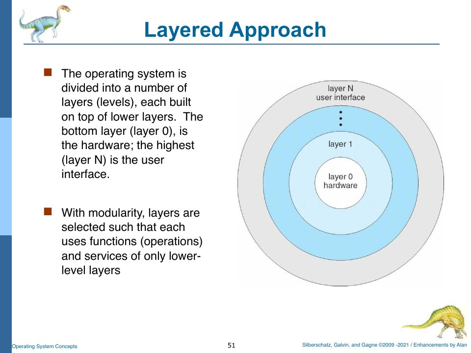
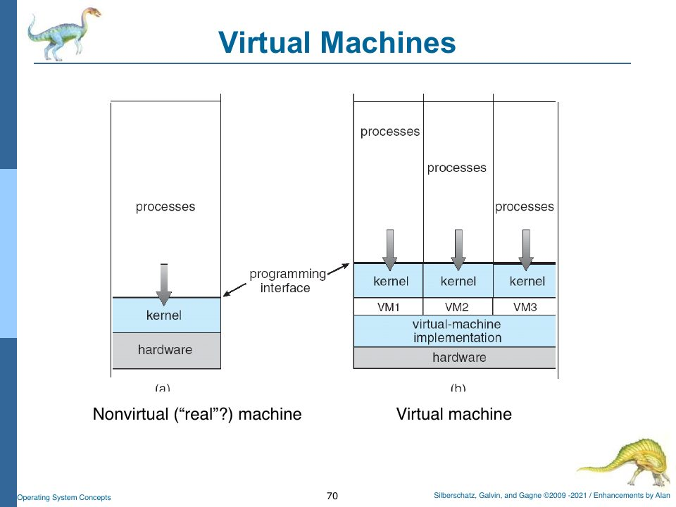

Preface: How to Read This Book
This book is a companion to CMPT 424, Operating Systems, as taught by Alan G. Labouseur at Marist. It has two subjects at once.
The first subject is the course itself: the textbook material (Silberschatz, Galvin, and Gagne’s Operating System Concepts, with Alan’s “enhancements”) as it appeared in the lecture slides, chapter by chapter, from “what is an operating system?” to disk-arm scheduling.
The second subject is a specific operating system, rObSen (APP_NAME = "rObSen", version 3000, naturally), the browser-based OS written in TypeScript for the semester project. It started life as Alan’s Project Zero (TSOS) and grew, over a hundred commits between August and December 2025, into something that boots, takes keyboard interrupts, loads 6502a machine code into three memory partitions, schedules processes round-robin, keeps a file system in sessionStorage, and swaps processes to “disk” when memory runs out.
A good deal of rObSen was written with the help of large language models. That makes it a peculiar thing to study: it works, mostly, but nobody ever had to understand it in order to produce it. This book is the act of understanding it after the fact. Every chapter takes one more layer of the system, explains the theory that layer embodies, and then reads the actual code, line by line where it matters, as you’d read a primary source.
The shape of the book
The chapters climb the system from the bottom up, and they follow the course’s order of topics while they do it:
| Part | Course chapters | Layer of rObSen |
|---|---|---|
| I. Foundations | 1, 2 | The architecture as a whole; where the “hardware” ends and the OS begins |
| II. Hardware | 1, 2, 8 | source/host: clock, devices, memory, memory accessor, CPU |
| III. Kernel | 1, 2, 13 | source/os: bootstrap, interrupt handler, drivers, console, shell |
| IV. Processes | 3, 4 | PCB, load, run, process states; threads (or their absence) |
| V. Main memory | 8 (part one) | Partitions, base/limit, the memory manager |
| VI. Scheduling | 5 | Theory, then rObSen’s timer interrupt and dispatcher |
| VII. Storage | 10, 11, 12 | The disk device driver and its track/sector/block file system |
| VIII. Beyond contiguous memory | 8 (part two) | Swapping, then paging |
| IX. Concurrency | 6, 7 | Races, semaphores, deadlock, and what a single-threaded browser OS gets for free |
| X. Virtual memory | 9 | Demand paging and replacement, and what rObSen’s “final challenge” would require |
Each Part’s chapters raise their own questions about the code. When those questions need a TypeScript idea that goes past the basics (variables, functions, loops, compiling with tsc), the chapter gets a TS Deep Dive sub-chapter, right after the chapter that needs it. You can skip a deep dive if you already know the topic. You can also read the deep dives on their own in order; they make a short course in the TypeScript this project actually uses.
Conventions
At the top of every chapter is a strip showing which layer of rObSen we are standing on:
Code excerpts from rObSen are pulled verbatim from a snapshot of the repository at commit cb5f9b0 (the last commit of the semester). The snapshot lives next to the book’s source, in snapshot/rObSen/, so the excerpts never drift even if you keep hacking on the real project. Each excerpt names its file. Line numbers in the prose refer to that snapshot.
Slides appear as figures, rendered straight from the course PDF, and are cited by page number in that PDF (“slide p. 187”). Appendix E maps every course chapter to its slide range.
Callouts look like this:
Building and reading this book
The book is an mdBook. The rendered site is in book/; open book/index.html in a browser. To rebuild after editing anything in src/, run mdbook build (or mdbook serve --open for live reload) from the os-guide folder.
The small simulators used in Part VI and later (scheduling, memory fits, disk arms, page replacement) live in src/code/sims/. Each one is a single TypeScript file you can run with:
$ tsc --target es2022 scheduling.ts && node scheduling.js
Their outputs are printed in the chapters, and each one reproduces the numbers on the corresponding slides.
The Map: rObSen at a Glance
Before climbing the layers one at a time, it helps to see the whole building from across the street.
Two programs pretending to be one machine
rObSen is really two programs sharing one browser tab.
- The host (
source/host/) pretends to be hardware. It has a clock that ticks every 100 ms, a 768-byte memory, a memory accessor that sits between the CPU and memory, a 6502a-flavoured CPU, and a keyboard that raises interrupts. It is the only code allowed to touch the web page directly (the DOM), and it paints the panels you see beside the console. - The client OS (
source/os/) is the operating system proper. It has a kernel with an interrupt handler, device drivers for the keyboard and the disk, a console and a shell, process control blocks, a memory manager, a scheduler, and a swapper.
The browser is the bare metal underneath both. Alan’s comment at the top of control.ts puts it this way: the browser’s document environment is “the ‘bare metal’ (so to speak) for which we write code that hosts our client OS,” which makes the host “A LITTLE BIT like a hypervisor.” Chapter 2 picks this analogy apart.
Compare it with the slide Alan drew of the same thing:

The files, by layer
| Layer | File | Lines | What it is |
|---|---|---|---|
| Globals | globals.ts | 88 | Constants (clock interval, IRQ numbers, mode bits) and every _Global variable both halves share |
| Host | host/control.ts | 426 | Button handlers, host log, the live panels (CPU, PCB table, memory dump, disk) |
| Host | host/devices.ts | 65 | The clock pulse and the keyboard interrupt source |
| Host | host/memory.ts | 46 | 768 bytes of RAM in a Uint8Array, with MAR and MDR |
| Host | host/memoryAccessor.ts | 73 | Logical-to-physical translation and bounds checks |
| Host | host/cpu.ts | 296 | The 6502a CPU: 14 opcodes, one instruction per cycle |
| Kernel | os/kernel.ts | 646 | Bootstrap, shutdown, interrupt handler, timer ISR, dispatcher, kill, swap decisions |
| Kernel | os/interrupt.ts | 10 | An interrupt is an IRQ number plus parameters |
| Kernel | os/queue.ts | 53 | A FIFO queue on top of an array |
| Drivers | os/deviceDriver.ts | 22 | Base class for drivers |
| Drivers | os/deviceDriverKeyboard.ts | 94 | Key codes → characters on the kernel input queue |
| Drivers | os/deviceDriverDisk.ts | 670 | The disk: geometry, blocks, directory, files, chkdsk, swap images |
| Console | os/console.ts | 313 | Text output on the canvas, scrolling, backspace, history recall |
| Console | os/canvastext.ts | 205 | Jim Studt’s 2007 vector font, drawn stroke by stroke |
| Shell | os/shell.ts | 1223 | Every command, from ver to setschedule |
| Shell | os/shellCommand.ts, os/userCommand.ts | 16 | Two little record classes |
| Processes | os/pcb.ts | 122 | The process control block |
| Memory | os/memoryManager.ts | 162 | Partition table: allocate, load, release |
| Swapping | os/swapper.ts | 38 | Roll-out and roll-in |
| Utilities | utils.ts | 47 | trim and rot13 |
Three journeys through the system
Most of the book is about these three paths. Keep them in mind; every chapter adds detail to one of them.
A keystroke. You press v. The browser fires a keydown event. Devices.hostOnKeypress (host) wraps the key code in an Interrupt(KEYBOARD_IRQ, …) and puts it on the kernel interrupt queue. On the next clock pulse, Kernel.krnOnCPUClockPulse sees a pending interrupt and calls krnInterruptHandler, which switches to kernel mode and calls the keyboard driver’s ISR. The driver turns key code 86 into the character "v" and puts it on the kernel input queue. Console.handleInput drains that queue, draws the v on the canvas, and appends it to its line buffer. When you press Enter, the console hands the buffer to Shell.handleInput. (Chapters 3, 6, 7, 8.)
A program. You paste hex into the User Program Input box and type load. The shell validates the hex, asks the memory manager for a free 256-byte partition, copies the bytes in, builds a PCB, and puts it on the ready queue. run 0 (or runall) asks the kernel to dispatch it: the PCB’s saved registers are copied into the CPU and isExecuting flips to true. From then on, each clock pulse with no pending interrupt runs exactly one instruction. When the instruction is 00 (BRK), the kernel retires the process and frees its partition. (Chapters 4, 5, 9, 11.)
A context switch. With several programs loaded and runall running, the CPU counts down a quantum (6 cycles by default). At zero it enqueues a TIMER_IRQ. The timer ISR puts the current PCB at the back of the ready queue, picks the next one, swaps it in from “disk” if it isn’t in memory, and dispatches it. (Chapters 12, 13, 17.)
Building and running rObSen
rObSen has no bundler. The TypeScript compiler turns each .ts file in source/ into a .js file in distrib/, and index.html loads those files with plain <script> tags. The configuration is all in tsconfig.json:
{
"compilerOptions": {
"target" : "ES2023",
"rootDir" : "source",
"outDir" : "distrib",
"sourceMap" : true,
"extendedDiagnostics" : true
},
"include": [
"source/**/*"
],
}
So the whole build is:
$ cd OS-Fall2025
$ tsc # reads tsconfig.json, writes distrib/**/*.js and .js.map
Then open index.html in a browser and click Start.
tsc 5.9 compiles it with zero errors. TypeScript 6 and the native TypeScript 7 compiler change two defaults (strict mode on; the old module keyword for namespaces is an error), so with a current compiler the same command reports 147 errors. It still writes the JavaScript, and the OS still runs, but the noise hides real problems. Either install TypeScript 5 for this project (npm install --save-dev typescript@5 and run npx tsc), or make the two small changes in Appendix C.
Two things about this setup matter later. First, the order of the <script> tags in index.html is load-bearing: globals.js must come first, and kernel.js is deliberately last among the OS files. Second, because nothing is imported or exported between files in the module sense, every file shares one global scope. The first deep dive explains why that works, and what it costs.
<!-- Globals CONSTANTS and _Variables. Must be included first. -->
<script type="text/javascript" src="distrib/globals.js"></script>
<!-- Host (Virtual Machine / Hardware Simulation) Routines -->
<script type="text/javascript" src="distrib/host/control.js"></script>
<script type="text/javascript" src="distrib/host/devices.js"></script>
<script type="text/javascript" src="distrib/host/memory.js"></script>
<script
type="text/javascript"
src="distrib/host/memoryAccessor.js"
></script>
<script type="text/javascript" src="distrib/host/cpu.js"></script>
<!-- Virtual OS Routines: Make sure Kernel code is last, since it needs those above it. -->
<script type="text/javascript" src="distrib/os/interrupt.js"></script>
<script type="text/javascript" src="distrib/os/canvastext.js"></script>
<script type="text/javascript" src="distrib/os/console.js"></script>
<script
type="text/javascript"
src="distrib/os/memoryManager.js"
></script>
<script
type="text/javascript"
src="distrib/os/deviceDriver.js"
></script>
<script
type="text/javascript"
src="distrib/os/deviceDriverDisk.js"
></script>
<script
type="text/javascript"
src="distrib/os/deviceDriverKeyboard.js"
></script>
<script type="text/javascript" src="distrib/os/swapper.js"></script>
<script type="text/javascript" src="distrib/os/pcb.js"></script>
<script type="text/javascript" src="distrib/os/queue.js"></script>
<script type="text/javascript" src="distrib/os/shell.js"></script>
<script
type="text/javascript"
src="distrib/os/shellCommand.js"
></script>
<script type="text/javascript" src="distrib/os/userCommand.js"></script>
<script type="text/javascript" src="distrib/os/kernel.js"></script>
<!-- Other Routines -->
<script type="text/javascript" src="distrib/utils.js"></script>
<!-- Uncomment the line below to enable GLaDOS testing. -->
<script src="test/glados-ip4x.js"></script>
Note the last <script> line: glados-ip4x.js is enabled, so every time you load the page, GLaDOS (Alan’s automated tester) starts typing commands at your OS. Appendix D explains what she does.
How the project grew
The semester project has four parts, all due at the end, but meant to be built in order. Here is how rObSen’s commit history lines up with them:
| Part | Requirement (paraphrased from the project spec) | Where in rObSen | Commits |
|---|---|---|---|
| One | Shell and console: ver, date, whereami, a creative command, taskbar with status, scrolling, punctuation, backspace, tab completion, history, BSOD on trap, load validates hex | shell.ts, console.ts, deviceDriverKeyboard.ts, index.html | Sept 6 – Sept 30, 2025 |
| Two | Load one program into memory at $0000, PCB, run <pid>, CPU synced to the clock, live CPU/PCB/memory display, single-step, Ctrl-C | cpu.ts, memory.ts, memoryAccessor.ts, pcb.ts, memoryManager.ts | Sept 15 – Oct 4 |
| Three | Three programs at once in separate partitions, clearmem, runall, ps, kill, killall, q, round-robin scheduler, base/limit protection, turnaround and wait times | kernel.ts (dispatcher, timer ISR), memoryManager.ts, control.ts panels | Oct – Nov 9 |
| Four | Disk device driver with format, create, read, write, delete, copy, rename, ls, link, alias, hidden files, chkdsk; FCFS and priority scheduling; swapping to run four or more processes | deviceDriverDisk.ts, swapper.ts, kernel.ts | Nov 16 – Dec 11 |
The scheduling simulator in sim/ (sched_start.cpp, a C++ permutation evaluator) was a separate assignment from mid-October; Chapter 12 uses it.
What Is an Operating System?
Slides: Chapter 1, “Introduction, overview, and a little history,” pp. 1–90.
The first chapter of the course is a grand tour, and so is this one. Every layer is lit up in the strip above because Chapter 1 touches all of them briefly. The rest of the book takes them one at a time.
Definitions, and why there isn’t one
The slides offer several definitions and then admit that none of them wins (slides pp. 7–19):
- An OS is “a program that acts as an intermediary between a user of a computer and the computer hardware.”
- An OS is a resource allocator: it manages all resources and “decides between conflicting requests for efficient and fair resource use.”
- An OS is a control program: it “controls execution of programs to prevent errors and improper use of the computer.”
- “Everything a vendor ships when you order an operating system” is “a good approximation… but varies wildly.”
- “The one program running at all times on the computer” is the kernel. Everything else is a system program or an application program.
The goals are similarly plural: execute user programs and make problems easier to solve, make the computer convenient, use the hardware efficiently, manage resources, hide the complexity of the underlying hardware, and “generally implement a layered architecture.”
That last pair is the theme of this whole book. An operating system is an exercise in hiding things. rObSen’s shell has no idea that the disk is really a JSON array in sessionStorage; the disk driver hides it. User programs have no idea which 256-byte partition they live in; the memory accessor hides it. Each layer offers the layer above it a simpler machine than the one it is standing on.


The four-component picture (users → applications → OS → hardware) maps onto rObSen like this. The hardware is the host: Cpu, Memory, MemoryAccessor, Devices. The operating system is everything in source/os/. The application programs are the 6502a hex programs you paste into the input box. The user is you at the keyboard, or GLaDOS pretending to be you.
What an OS has to do, and which project part does it
Slide p. 20 lists the OS’s tasks and tags each one with the project iteration that implements it. It is the closest thing the course has to a table of contents for the project:
| Task (slide p. 20) | Tag | rObSen |
|---|---|---|
| CPU management: scheduling, fairness, non-blocking behaviour, priorities | iP3 | Kernel.krnTimerISR, dequeueNextReadyProcess (Ch. 13) |
| Memory management: virtual vs. physical, protection | iP3 | MemoryManager, MemoryAccessor.translateAddress (Ch. 4, 11) |
| Storage management: the file system | iP4 | DeviceDriverDisk (Ch. 15) |
| Device management: hide hardware dependencies, manage concurrent access | iP4 | the driver classes (Ch. 7, 15) |
| Program execution | iP2 | Cpu.cycle, shellLoad, shellRun (Ch. 5, 9) |
| The CLI (slide p. 22) | iP1 | Console, Shell (Ch. 8) |
How a computer runs: controllers, interrupts, and the boot
A computer is a CPU and a set of device controllers sharing a bus to memory (slides pp. 23–26). Each controller has a local buffer; the CPU moves data between memory and those buffers; and when a controller finishes, it tells the CPU by raising an interrupt.
When the machine powers on, a bootstrap program, usually in ROM, “initializes all aspects of the system” and “loads the operating system kernel and starts execution” (slide p. 25). 
In rObSen, the Start button plays the role of the power switch, and Kernel.krnBootstrap is the bootstrap: it builds the kernel’s queues, starts the console, loads the drivers, enables interrupts, and launches the shell. Chapter 6 walks through it.
Interrupts
Slides pp. 27–37 are the conceptual core of Chapter 1, and the conceptual core of rObSen. The key ideas:
- An interrupt transfers control to an interrupt service routine (ISR), “usually via a switch-case statement or an interrupt vector that contains the addresses of all the ISRs.”
- The interrupt architecture must save the state of whatever was interrupted (registers, program counter) and restore it afterwards.
- Interrupts can be disabled while another is being handled, so none are lost. (“Can you interrupt an interrupt?”)
- A trap (or exception) is a software-generated interrupt, caused by an error or by a user request for an OS service.
- “Today’s operating systems are interrupt driven.” As opposed to polling (“Are we there yet? How about now? Now?”), also called busy waiting.

Here is every one of those five ideas in rObSen:
- Switch-case, not a vector.
Kernel.krnInterruptHandlersays so in a comment: “Invoke the requested Interrupt Service Routine via Switch/Case rather than an Interrupt Vector. TODO: Consider using an Interrupt Vector in the future.” The Intel Pentium event-vector table on slide p. 38 is the alternative: an array indexed by interrupt number whose entries are the handlers.

/* ------------
Interrupt.ts
------------ */
module TSOS {
export class Interrupt {
constructor(public irq: number, public params: any[]) {
}
}
}
That ten-line class is the entire representation of an interrupt: a number saying which (the IRQ) and a list of parameters. The IRQ numbers are global constants:
const TIMER_IRQ: number = 0; // Pages 23 (timer), 9 (interrupts), and 561 (interrupt priority).
// NOTE: The timer is different from hardware/host clock pulses. Don't confuse these.
const KEYBOARD_IRQ: number = 1;
const DISK_IRQ: number = 2;
DISK_IRQ is declared but never raised. rObSen’s disk driver is called directly rather than through interrupts. Chapter 15 comes back to that.

I/O: synchronous and asynchronous
Slides pp. 40–43 distinguish synchronous I/O (the program waits for the I/O to finish) from asynchronous I/O (control returns at once and the OS signals completion later). rObSen’s keyboard is asynchronous from the user program’s point of view, though user programs never read the keyboard anyway. rObSen’s disk is fully synchronous: readBlock returns the data immediately, because sessionStorage.getItem is itself synchronous.
Direct memory access (DMA) (slide p. 45) lets a controller move a whole block into memory and raise one interrupt per block instead of one per byte. rObSen has no DMA. Swapping copies a whole process image with one JavaScript call, which is DMA-like in spirit.
Storage, caching, and the hierarchy
Main memory is “the only large storage medium that the CPU can access directly” (slide p. 46); everything else is secondary storage, organized into a hierarchy by speed, cost, and volatility (pp. 47–50). Caching (“copying information into faster storage”) happens at every level.
rObSen has exactly two levels: the 768-byte Uint8Array that is main memory, and the JSON array in sessionStorage that is the disk. The hierarchy’s main lesson still shows up. The disk is volatile in a way a real disk isn’t: sessionStorage lasts only as long as the browser tab, so closing the tab “loses power” on the disk too. (Reset reloads the page, but sessionStorage survives a reload, so your files survive Reset but not closing the tab.)
Multiprogramming, timesharing, and the mode bit
Multiprogramming keeps several jobs in memory so the CPU always has one to run; timesharing switches among them so often that users can interact with each (slide p. 51). That’s Project Part Three: three programs in memory at once, switched round-robin.
Then the most important hardware feature for protection: dual-mode operation (slides pp. 54–56). A mode bit, provided by the hardware, distinguishes kernel mode from user mode. Privileged instructions run only in kernel mode. A system call switches to kernel mode; returning from it switches back. And a timer lets the OS regain control from a process that would otherwise run forever: “set interrupt after specific period; operating system decrements counter; when counter zero generate an interrupt.”
rObSen has a mode bit:
const MODE_KERNEL: number = 0;
const MODE_USER: number = 1;
var _Mode: number = MODE_KERNEL; // 0 = Kernel Mode, 1 = User Mode.
and the kernel flips it on the way in and out of every handler (enterKernelMode(reason) / exitToUserMode(); Chapter 6). It is honest to say that this mode bit is informational. Nothing in the CPU checks it, because no 6502a instruction is privileged. It exists so you can watch it change in the CPU panel and the host log, and to make the structure of the kernel visible.
The timer is real, though. Cpu.cycle decrements _SchedulerCounter after every instruction and raises TIMER_IRQ when it hits zero. That is slide p. 56 in eight lines of TypeScript, and Chapter 13 reads them.
The management jobs
Slides pp. 66–77 list the OS’s management responsibilities: process management (create, delete, suspend, resume, synchronize, communicate, handle deadlock), memory management (track who uses what, decide what moves in and out, allocate and deallocate, “policing memory access”), storage and mass-storage management, the I/O subsystem (buffering, caching, spooling, drivers), and protection and security.
The section closes with kernel data structures: lists, trees, hash maps, bitmaps (pp. 75–77). Here are the ones in rObSen’s kernel:
| Structure | In rObSen |
|---|---|
| Queue (FIFO list) | TSOS.Queue: the interrupt queue, the input queue, the ready queue |
| Hash map | _ProcessTable: Map<number, PCB>, the process table keyed by PID |
| Array of records | MemoryManager.partitions, the partition table |
| Byte array | Memory.bytes: Uint8Array, physical memory |
| Set | runCheck’s referenced: Set<string> of in-use disk blocks |
| Bitmap | none, although the “in use” flag at the start of every disk block is a bitmap spread across the disk |
Check yourself
- rObSen’s comment in
krnInterruptHandlersays it uses “Switch/Case rather than an Interrupt Vector.” Sketch what an interrupt-vector version would look like in TypeScript. (Hint: an array of functions indexed by IRQ. Chapter 8a shows the syntax.) - The slide asks: “Today’s operating systems are interrupt driven. As opposed to what, exactly?” Find the one place in rObSen that is driven by polling. (Hint: what calls
krnOnCPUClockPulseevery 100 ms, whether or not anything happened?) - Why can’t a user program in rObSen execute a privileged instruction? Is the answer “because the mode bit prevents it”?
Answers
- Something like
const vector: ((params: any[]) => void)[] = [p => this.krnTimerISR(), p => { _krnKeyboardDriver.isr(p); _StdIn.handleInput(); }];and thenvector[irq](params), with a bounds check that traps on an unknown IRQ. - The clock.
setInterval(Devices.hostClockPulse, 100)calls the kernel every 100 ms, and the kernel checks the interrupt queue each time: it is polling a queue. Interrupt sources are event-driven, but interrupt delivery is polled on clock ticks. Real CPUs are similar: they check the interrupt line between instructions. - No. It’s because the 6502a instruction set has no privileged instructions. The mode bit is displayed but never checked. Protection in rObSen comes from the memory accessor (address translation), not the mode bit.
TS Deep Dive: Namespaces and the Global Script World
TypeScript deep dive
Open any file in rObSen and the first real line is one of these:
module TSOS {
namespace TSOS {
and there is not a single import or export … from anywhere in the project. Yet kernel.ts happily says new Queue(), new Console(), and _CPU.cycle(), none of which it defines. This chapter explains how that works, because if you don’t understand it, the whole codebase looks like it’s held together by magic.
Scripts versus modules
TypeScript (like JavaScript) treats a file in one of two ways.
- A file that contains a top-level
importorexportis a module. Everything it declares is private to it unless exported, and anything it uses from another file has to be imported. - A file with no top-level
importorexportis a script. Everything it declares at the top level goes into the global scope, which every other script on the page shares.
Every file in rObSen is a script. That is why globals.ts can say
var _CPU: TSOS.Cpu; // Utilize TypeScript's type annotation system to ensure that _CPU is an instance of the Cpu class.
var _Memory: TSOS.Memory;
var _MemoryAccessor: TSOS.MemoryAccessor;
var _MemoryManager: TSOS.MemoryManager;
and kernel.ts, a different file, can use _CPU without ceremony. At runtime the browser loads each compiled script with its own <script> tag, and they all write into the same global object (window).
The TypeScript compiler cooperates by type-checking the whole source/ folder as one program (that’s what "include": ["source/**/*"] in tsconfig.json does). So when cpu.ts mentions _Kernel, the compiler finds its declaration in globals.ts and knows it’s a TSOS.Kernel.
What a namespace is
A namespace is a named object that groups related declarations, so that hundreds of classes don’t all land directly in the global scope. module TSOS { … } and namespace TSOS { … } mean exactly the same thing here; module is the older spelling from before ES modules existed, and namespace is the one to use in new code. rObSen uses both because files came from different eras and different authors (Alan’s 2014-vintage files say module; some newer ones say namespace). The old spelling is now on its way out: TypeScript 6 and later reject module TSOS { … } outright (error TS1540, “A ‘namespace’ declaration should not be declared using the ‘module’ keyword”), so if you build rObSen with a current compiler, changing those 18 lines to namespace is the first thing to do.
Inside a namespace, export means “attach this to the namespace object,” not “export from a module.” Things not marked export stay private to that one block.
namespace TSOS {
interface MemoryPartition { /* … */ } // private to this block
export interface MemoryAllocation { /* … */ } // visible as TSOS.MemoryAllocation
export class MemoryManager { /* … */ } // visible as TSOS.MemoryManager
}
That’s exactly the situation in memoryManager.ts: MemoryPartition is an internal detail of the memory manager, while MemoryAllocation is part of its public interface because the kernel and the swapper pass allocations around.
What the compiler actually emits
The best way to demystify a namespace is to look at the JavaScript. Here is the compiled tail of distrib/host/memoryAccessor.js:
"use strict";
var TSOS;
(function (TSOS) {
class MemoryAccessor {
memory;
constructor(memory) {
this.memory = memory;
}
// … methods …
}
TSOS.MemoryAccessor = MemoryAccessor;
})(TSOS || (TSOS = {}));
Read it slowly:
var TSOS;declares a global variable. Declaring avarthat already exists is harmless, so every file can do this.(function (TSOS) { … })( … )is an immediately invoked function expression (IIFE): a function defined and called on the spot. Anything declared inside is private to that call.- The argument is
TSOS || (TSOS = {}): “the existingTSOSobject if there is one, otherwise make a new empty object and store it inTSOS.” So the first script creates the namespace object and every later one adds to it. TSOS.MemoryAccessor = MemoryAccessor;is whatexportcompiled to: one property assignment.
So “namespace” is a typed veneer over a very old JavaScript idiom: one global object with your whole program hanging off it as properties. At runtime, TSOS is just { Control: …, Devices: …, Memory: …, Cpu: …, Kernel: …, … }.
Why script order matters
Because TSOS is filled in one script at a time, some orders work and some don’t. Look at the compiled keyboard driver:
class DeviceDriverKeyboard extends TSOS.DeviceDriver {
extends TSOS.DeviceDriver is evaluated when the class is defined, which is when the script loads. If deviceDriverKeyboard.js loaded before deviceDriver.js, TSOS.DeviceDriver would be undefined and the page would die with TypeError: Class extends value undefined is not a constructor. That’s why index.html lists deviceDriver.js before both drivers.
Most other references are inside method bodies, which don’t run until much later (after onDocumentLoad), so their order doesn’t matter. The rule of thumb: anything evaluated at load time must already exist. That means base classes, globals.js (because other files’ top-level code reads constants like CPU_CLOCK_INTERVAL), and default parameter values that are evaluated eagerly. The comment “Make sure Kernel code is last, since it needs those above it” in index.html is caution more than necessity, but it’s good caution.
var globals and the leading underscore
globals.ts declares its shared state with var and a leading underscore: _CPU, _Kernel, _ReadyQueue. Three things are worth knowing.
- At the top level of a script,
varcreates a property on the global object;letandconstcreate global bindings that are visible to other scripts but not properties ofwindow. For this codebase the practical difference is nil, which is why the constants (APP_NAME,MODE_KERNEL) useconstand the mutable state usesvar. - The underscore is a convention (“this is a global; be careful”), not a language feature. Alan’s own TODO in
globals.tsadmits the cost: “Make a global object and use that instead of the “_” naming convention in the global namespace.“ - A type annotation such as
var _CPU: TSOS.Cpu;is checked at compile time only. At runtime_CPUstarts outundefined, and nothing stops you from using it beforehostBtnStartOS_clickassigns it. Several functions in rObSen defend against that withif (!_CPU) return;.
The trade-off, stated plainly
The global-script style was the norm for browser JavaScript in 2008, when this project’s ancestor was written. It has real advantages for a teaching OS: no build tooling, any file can reach any part of the system (which feels like poking at real hardware registers), and the compiled output is readable.
It has real costs too. Every piece of state is reachable and mutable from everywhere. For example, the shell’s shellLoad sets _CurrentProcess = null directly, a kernel variable, from what is conceptually user-facing code. And there’s no compiler help when one layer reaches past the one beneath it. The layered architecture of the slides is a discipline the code chooses to follow, not one the language enforces.
Exercise
Convert one leaf file, utils.ts, into an ES module (export class Utils) and import it in shell.ts. What else breaks, and why? (You’ll find that once shell.ts has an import, it becomes a module, its declarations stop being global, and kernel.ts can no longer see TSOS.Shell without an import of its own. Modules are contagious; that’s the point of them.)
OS Structures and the Machine Inside the Browser
Slides: Chapter 2, “Operating System Structures,” pp. 91–164.
Chapter 1 asked what an OS does. Chapter 2 asks how one is put together: what services it offers, how programs ask for them, and how the pieces are arranged. It ends with virtual machines and a slide called “Your OS Architecture,” which is the cue for this chapter to look at rObSen’s own structure critically.
Services
The OS offers services to users and programs (slides pp. 93–97): a user interface, program execution, I/O, file-system manipulation, communication, error detection, resource allocation, accounting, and protection and security. Alan tagged several of them with project parts: the UI with iP1, program execution with iP2, resource allocation and protection with iP3. For the file system he wrote a question and its answer on the slide: “Q: How are we going to do that in TypeScript/JavaScript? A: HTML5 Storage.” Chapter 15 is that answer.
When error detection fails badly, you get a panic (pp. 97–99: two slides of a real macOS kernel panic log). rObSen’s panic is Kernel.krnTrap, which calls Console.showBSOD:
public showBSOD(reason: string): void {
this.clearScreen();
this.resetXY();
const lines = [
"=== Blue Screen of Death",
"",
"*** Hi, I'm the Kernel trying to save you from you.***",
"An OS error has occured",
" ",
"Reason: " + (reason || "Unknown"),
"",
"Press the Reset button to restart the system.",
];
for (const line of lines) {
this.putText(line);
this.advanceLine();
}
}
Project Part One asks for exactly this: “Display a BSOD message (on the CLI) when the kernel traps an OS error,” plus a shell command to trigger it on purpose. That’s bsod [message].
The command interpreter
Slide p. 100 says the CLI is “sometimes, but not often, implemented in the kernel (like ours),” and then asks the right question: in Unix the shell is just a program, so adding a command doesn’t require changing the shell; “We have to modify the kernel. Is this better? Should we change?”
rObSen’s shell lives inside the OS. Every one of its 38 commands is a method of the Shell class, registered in a table at boot, and adding one means editing shell.ts and recompiling the whole OS. That’s the cost. The benefit is simplicity: rObSen has no way to load a program that acts as a shell, because user programs are 6502a machine code that can only print numbers and strings. Chapter 8 reads the shell in detail.
System calls
A system call is the programming interface to the OS’s services (slides pp. 109–124). Programs rarely invoke system calls directly; they go through an API (Win32, POSIX, the Java API) whose library routines make the actual calls. The kernel identifies each system call by a number and dispatches through a table. The caller “need know nothing about how the system call is implemented.”
Parameters can reach the kernel three ways (slide p. 118):
- In registers: simplest, but limited by the number of registers.
- In a block or table in memory, with the block’s address in a register: Linux and Solaris do this.
- On the stack.
The 6502a has exactly one system-call instruction, FF (SYS). The X register picks the call, and the Y register carries the argument:
X = 01: print the integer in Y. (Parameter in a register.)X = 02: print the 00-terminated string starting at the address in Y. (Parameter in a block in memory, address in a register: method 2, exactly the slide.)
Here is rObSen’s implementation:
private opSystemCall(): void {
if (this.Xreg === 0x01) {
_StdOut.putText(this.Yreg.toString());
} else if (this.Xreg === 0x02) {
let address = this.Yreg & 0xff;
let output = "";
let value = this.readMemory(address);
while (value !== 0x00) {
output += String.fromCharCode(value);
address = (address + 1) & 0xff;
value = this.readMemory(address);
}
_StdOut.putText(output);
} else {
_StdOut.putText(`[syscall x=${this.Xreg}]`);
}
}
It works: Chapter 5 traces a program that prints A7 through these two calls. But notice where it lives. This is cpu.ts, in the host, and it reaches straight into the client OS’s console (_StdOut.putText). Real hardware doesn’t know what a console is. On a real machine, SYS would raise a software interrupt (a trap), the CPU would switch to kernel mode, and the kernel’s system-call handler would decide what X means and do the printing.
ReadConsole, WriteConsole, CreateProcess, …) with no implementation. Appendix C shows the fix: enqueue a SYSCALL_IRQ with X and Y as parameters, and handle it in krnInterruptHandler.
//
// System Calls... that generate software interrupts via tha Application Programming Interface library routines.
//
// Some ideas:
// - ReadConsole
// - WriteConsole
// - CreateProcess
// - ExitProcess
// - WaitForProcessToExit
// - CreateFile
// - OpenFile
// - ReadFile
// - WriteFile
// - CloseFile
Policy versus mechanism
“Mechanisms determine how to do something, policies decide what will be done” (slide p. 130). Separating them means you can change your mind about the policy without rewriting the mechanism.
rObSen has a clean example of this separation. The mechanism for giving a process the CPU is Kernel.dispatchProcess: copy the PCB’s registers into the CPU, mark the PCB running, reset the quantum counter. The policy for which process gets it is dequeueNextReadyProcess, which looks at _SchedulerMode ("RR", "FCFS", or "PRIORITY") and picks. setschedule fcfs changes the policy with one assignment; the dispatcher doesn’t care. (Chapter 13 shows that the separation is a little too clean: the policy picks a process, but the mechanism around it still preempts on every quantum, so FCFS quietly behaves like round-robin.)
Structures: monolithic, layered, microkernel
The slides survey several ways to organize an OS (pp. 132–149):
- MS-DOS is monolithic and barely structured: “its interfaces and levels of functionality are not well separated.”
- Traditional UNIX has two parts, system programs and a kernel that holds “everything below the system-call interface and above the physical hardware”: the file system, CPU scheduling, memory management, all in one level.
- The layered approach stacks layers from hardware (layer 0) to user interface (layer N); each layer uses only the services of the layers beneath it.
- A microkernel moves as much as possible out of the kernel into user-space servers that talk by message passing (Mach, and through it Apple’s Darwin). It is easier to extend and port, and more reliable, at the cost of messaging overhead.

rObSen is a monolithic kernel with layered intentions. Everything, including the shell, runs as one program with one address space (JavaScript’s global scope), so in the slides’ terms it’s closest to traditional UNIX, minus the separation of system programs. The files follow a layered plan, as the map shows. The calls don’t always respect it:
| Call | From layer | To layer | Should go through |
|---|---|---|---|
_StdOut.putText in Cpu.opSystemCall | hardware | console | a system-call trap into the kernel |
_CurrentProcess = null in Shell.shellLoad | shell | kernel state | a kernel function |
_krnDiskDriver.readBlock in Control.updateDiskPanel | host UI | OS driver | (acceptable: it’s a debugging view, like a hardware probe) |
_Kernel.krnTrap in MemoryAccessor | hardware | kernel | (correct in spirit: hardware raising a fault into the OS) |
None of these break anything today. They are the kind of shortcut that makes a system harder to change later, which is precisely the argument for layering.
Virtual machines, and what rObSen really is
“A virtual machine takes the layered approach to its logical conclusion. It treats hardware and the operating system kernel as though they were all hardware” (slide p. 156). The host creates “the illusion that a process has its own processor and (virtual) memory,” and each guest gets a virtual copy of the computer.
The slides then distinguish two techniques (p. 158):
- Emulation: used when the guest’s CPU type differs from the host’s. “Generally slowest method.” When the guest’s code isn’t compiled to native code, this is interpretation.
- Virtualization: the guest OS is compiled for the same CPU the host runs on, and runs natively, with a virtual machine manager (VMM) mediating.

So which is rObSen? Both, in different places, and seeing that is the key to understanding its architecture.
- User programs are emulated. A 6502a program is a list of bytes that
Cpu.cyclereads one at a time and interprets with aswitch. That is textbook emulation by interpretation: the guest instruction set (6502a) differs from the real machine’s (whatever the JavaScript engine compiles to), and every guest instruction costs dozens of real ones. - The operating system is not emulated at all. The kernel, drivers, shell, memory manager, and scheduler are TypeScript compiled to JavaScript, and they run directly on the browser’s JavaScript engine, the same “hardware” the host runs on. The OS never executes a single 6502a instruction.
That makes rObSen’s structure unusual. A real OS runs on its CPU. rObSen’s OS runs beside its CPU, on the real machine, and supervises the emulated CPU from outside, deciding when it may execute (isExecuting), feeding it registers (dispatchProcess), and reading its state back (Cpu.cycle copies registers into the PCB). The nearest real-world analogue is a hypervisor that runs guest applications rather than guest operating systems, which is roughly what Alan’s “A LITTLE BIT like a hypervisor” comment is gesturing at.
This explains several things that might otherwise look odd:
- Why the OS can call
_CPU.pause()or set_CPU.PCdirectly: it isn’t running on that CPU, so it can reach in and set its registers like a debugger would. - Why an infinite loop in a user program can’t freeze the OS: the OS gets control back every clock tick regardless of what the CPU is doing, because the clock is a JavaScript timer the CPU can’t block.
- Why an infinite loop in the OS freezes everything, including the clock: the OS and the host share one JavaScript thread (Chapter 10).
Booting, debugging, and tuning
The rest of Chapter 2 covers performance tuning (top, Task Manager), debugging (log files, core dumps, crash dumps, Kernighan’s Law, DTrace), and system boot (a bootstrap loader in firmware locates the kernel, loads it, and starts it).
rObSen’s debugging facilities are its host log and its live panels. Kernel.krnTrace writes to the host log whenever tracing is on (trace on|off), throttling the “Idle” messages to one in ten so the log doesn’t drown the browser. Every log line records the OS clock (ticks since Start), the source (host, OS, scheduler), and the wall-clock time in milliseconds, which is enough to compute interrupt latency by hand. The comment in krnInterruptHandler mentions exactly that (“so we can compute Interrupt Latency by analyzing the log file later on”).
The boot sequence is Chapter 6’s subject.
Check yourself
- Classify each of the following as policy or mechanism: the round-robin quantum (
q 6);Swapper.rollOut;Kernel.selectSwapVictim;MemoryManager.allocate’s choice of the first free partition. - The slide asks “Why use APIs rather than system calls?” rObSen’s user programs have no API layer at all; they execute
FFdirectly. What would an API for 6502a programs even look like? - In what sense is the 6502a CPU “hardware” and the browser also “hardware”? Which one does a user program believe it runs on?
Answers
- The quantum is a policy parameter.
rollOutis mechanism (it moves bytes).selectSwapVictimis policy (it decides who). Choosing the first free partition is a policy (first fit) built into an allocation mechanism; you could separate them by passing a strategy in, as Chapter 20a does for page replacement. - A library of 6502a subroutines (say, “print string at address”) that programs would call with a jump-to-subroutine instruction. The 6502a subset has no JSR/RTS, so there’s no way to call a subroutine and return, which is why there’s no API layer.
- The CPU is hardware to the user program: it’s the only machine a 6502a program can see. The browser is hardware to the OS and host: it’s what their code runs on. Each layer’s “hardware” is just the layer beneath it.
The Host: Clock, Buttons, and the Log
Slides: Chapter 1, pp. 23–37 (organization, startup, interrupts); Chapter 2, pp. 155–163 (boot, virtual machines).
We start at the bottom: the code that pretends to be a computer’s case, power switch, crystal oscillator, and keyboard controller. It lives in two files, host/control.ts and host/devices.ts. Both carry the same header comment, and it’s worth taking literally:
This (and other host/simulation scripts) is the only place that we should see “web” code, such as DOM manipulation and event handling, and so on.
The host is the only layer that knows it’s running in a web page. Everything above it is supposed to believe it’s running on a machine.
Power on: hostInit and the Start button
When the page finishes loading, the <body onload="onDocumentLoad()"> attribute calls a tiny global function from globals.ts, which calls Control.hostInit:
public static hostInit(): void {
// This is called from index.html's onLoad event via the onDocumentLoad function pointer.
// Get a global reference to the canvas. TODO: Should we move this stuff into a Display Device Driver?
_Canvas = <HTMLCanvasElement>document.getElementById("display");
// Get a global reference to the drawing context.
_DrawingContext = _Canvas.getContext("2d");
// Enable the added-in canvas text functions (see canvastext.ts for provenance and details).
CanvasTextFunctions.enable(_DrawingContext); // Text functionality is now built in to the HTML5 canvas. But this is old-school, and fun, so we'll keep it.
// Clear the log text box.
// Use the TypeScript cast to HTMLInputElement
(<HTMLInputElement>document.getElementById("taHostLog")).value = "";
// Set focus on the start button.
// Use the TypeScript cast to HTMLInputElement
(<HTMLInputElement>document.getElementById("btnStartOS")).focus();
// Check for our testing and enrichment core, which
// may be referenced here (from index.html) as function Glados().
if (typeof Glados === "function") {
// function Glados() is here, so instantiate Her into
// the global (and properly capitalized) _GLaDOS variable.
_GLaDOS = new Glados();
_GLaDOS.init();
}
Control.updateCpuPanel();
Control.updateProcessPanel();
Control.updateMemoryPanel();
Control.updateModeIndicator();
}
This is the moment the “machine” is plugged in but not yet switched on. It finds the canvas (the screen), bolts the vector-font routines onto its drawing context, clears the host log, and checks whether a Glados testing function was loaded by index.html. If so, it creates her. Nothing is running yet.
Pressing Start is flipping the power switch:
public static hostBtnStartOS_click(btn): void {
// Disable the (passed-in) start button...
btn.disabled = true;
// .. enable the Halt,reset, pause and step buttons ...
(<HTMLButtonElement>document.getElementById("btnHaltOS")).disabled =
false;
(<HTMLButtonElement>document.getElementById("btnReset")).disabled = false;
(<HTMLButtonElement>document.getElementById("btnStep")).disabled = false;
(<HTMLButtonElement>document.getElementById("btnPause")).disabled = false;
Control.setPaused(false);
// .. set focus on the OS console display ...
document.getElementById("display").focus();
// ... Create and initialize the CPU (because it's part of the hardware) ...
_CPU = new Cpu(); // Note: We could simulate multi-core systems by instantiating more than one instance of the CPU here.
_CPU.init(); // There's more to do, like dealing with scheduling and such, but this would be a start. Pretty cool.
_Memory = new Memory();
_MemoryAccessor = new MemoryAccessor(_Memory);
const segmentSize = Memory.SIZE / 3;
_MemoryManager = new MemoryManager(
_Memory,
_MemoryAccessor,
segmentSize,
3,
);
_MemoryManager.reset();
_PidCounter = 0;
_ProcessTable.clear();
_CurrentProcess = null;
if (_ReadyQueue) {
_ReadyQueue.clear();
}
_SchedulerCounter = _SchedulerQuantum;
_RunAllMode = false;
_CpuCycleCount = 0;
// ... then set the host clock pulse ...
_hardwareClockID = setInterval(
Devices.hostClockPulse,
CPU_CLOCK_INTERVAL,
);
// .. and call the OS Kernel Bootstrap routine.
_Kernel = new Kernel();
_Kernel.krnBootstrap(); // _GLaDOS.afterStartup() will get called in there, if configured.
}
Read it as a hardware power-on sequence:
- Enable the other front-panel buttons.
- Create the CPU and reset its registers. (Alan’s comment: you could create two CPUs here to simulate a multi-core machine. “There’s more to do… but this would be a start. Pretty cool.”)
- Create memory (768 bytes), the memory accessor that guards it, and a memory manager with three 256-byte segments. Strictly speaking the memory manager is OS software, not hardware; rObSen creates it here because it needs references to the memory objects, and the kernel doesn’t exist yet.
- Reset bookkeeping: PID counter, process table, ready queue, quantum counter.
- Start the clock:
setInterval(Devices.hostClockPulse, CPU_CLOCK_INTERVAL)callshostClockPulseevery 100 milliseconds, forever. - Run the bootstrap: create the kernel and call
krnBootstrap()(Chapter 6).
The clock
public static hostClockPulse(): void {
// Increment the hardware (host) clock.
_OSclock++;
// Call the kernel clock pulse event handler.
_Kernel.krnOnCPUClockPulse();
}
That’s the whole clock. Every 100 ms the host increments the global _OSclock and hands control to the kernel’s krnOnCPUClockPulse, which either handles one pending interrupt or lets the CPU execute one instruction (or idles). So rObSen’s CPU runs at a blistering 10 Hz. Ten instructions per second is slow enough to watch, which is the point.
globals.ts warns: "The timer is different from hardware/host clock pulses. Don't confuse these." The clock is the heartbeat that makes the machine step: it is hardware, it never stops, and it doesn't interrupt anybody. The timer is a device that counts down and raises TIMER_IRQ when it reaches zero, so the OS can take the CPU back from a process that has used up its quantum (slide p. 56). In rObSen the timer is the _SchedulerCounter that Cpu.cycle decrements (Chapter 13). Many clock pulses make one timer interrupt.
Notice the design choice hidden here. On a real machine, the CPU runs continuously and the interrupt controller interrupts it. In rObSen, the clock calls the kernel, and the kernel decides whether this tick is spent on an interrupt or on a CPU instruction. Interrupts are handled between instructions, never during one, which is also how real CPUs behave: they check for pending interrupts at instruction boundaries. The project spec requires this: “Only allow context switches after fully completed CPU instruction cycles.”
The keyboard as an interrupt source
public static hostEnableKeyboardInterrupt(): void {
// Listen for key press (keydown, actually) events in the Document
// and call the simulation processor, which will in turn call the
// OS interrupt handler.
document.addEventListener("keydown", Devices.hostOnKeypress, false);
}
public static hostDisableKeyboardInterrupt(): void {
document.removeEventListener("keydown", Devices.hostOnKeypress, false);
}
public static hostOnKeypress(event): void {
// The canvas element CAN receive focus if you give it a tab index, which we have.
// Check that we are processing keystrokes only from the canvas's id (as set in index.html).
if (event.target.id === "display") {
event.preventDefault();
// Note the pressed key code in the params (Mozilla-specific).
var params = new Array(
event.which,
event.shiftKey,
event.ctrlKey || event.metaKey,
);
// Enqueue this interrupt on the kernel interrupt queue so that it gets to the Interrupt handler.
_KernelInterruptQueue.enqueue(new Interrupt(KEYBOARD_IRQ, params));
}
}
hostEnableKeyboardInterrupt subscribes to the browser’s keydown events; hostDisableKeyboardInterrupt unsubscribes. Those are the kernel’s “enable interrupts” and “disable interrupts” for the keyboard (Chapter 6). When a key goes down:
- It’s ignored unless the canvas (
id="display") has focus. Typing into the program-input textarea shouldn’t type into the OS. preventDefault()stops the browser’s own handling (so Backspace doesn’t navigate back and Tab doesn’t move focus).- The key code, Shift state, and Ctrl-or-Command state become the parameters of a new
Interrupt(KEYBOARD_IRQ, params), which goes on the kernel’s interrupt queue.
That’s all the keyboard hardware does: it raises an interrupt with some data attached. It doesn’t decide what the key means. Turning key code 65 into "a" or "A" is the keyboard driver’s job (Chapter 7), and that’s OS software.
event.which is a deprecated property of keyboard events; modern code uses event.key (a string like "a") or event.code (a physical key like "KeyA"). rObSen keeps the numeric codes on purpose: numeric scan codes are what a real keyboard controller delivers, and translating them is exactly the job a driver should have.
The other front-panel buttons
public static hostBtnHaltOS_click(btn): void {
Control.hostLog("Emergency halt", "host");
Control.hostLog("Attempting Kernel shutdown.", "host");
// Call the OS shutdown routine.
_Kernel.krnShutdown();
// Stop the interval that's simulating our clock pulse.
clearInterval(_hardwareClockID);
// TODO: Is there anything else we need to do here?
}
public static hostBtnPause_click(btn): void {
if (!_CPU || !_Kernel) {
return;
}
if (!Control.isPaused) {
Control.setPaused(true);
_CPU.pause();
Control.hostLog("Paused execution", "host");
} else {
if (_CurrentProcess) {
Control.setPaused(false);
_CPU.resume();
Control.hostLog("Resume execution", "host");
} else {
Control.setPaused(true);
Control.hostLog("Resume ignored: no active process.", "host");
}
}
Control.hostUpdateDisplays();
}
public static hostBtnStep_click(btn): void {
if (!_CPU || !_Kernel) {
return;
}
Control.setPaused(true);
if (!_CurrentProcess) {
Control.hostLog("Step ignored: no active process.", "host");
return;
}
_CPU.pause();
_Kernel.krnStep();
}
public static hostBtnReset_click(btn): void {
// The easiest and most thorough way to do this is to reload (not refresh) the document.
(<HTMLButtonElement>document.getElementById("btnReset")).disabled = true;
(<HTMLButtonElement>document.getElementById("btnStep")).disabled = true;
(<HTMLButtonElement>document.getElementById("btnPause")).disabled = true;
location.reload();
}
- Halt is the emergency stop: it asks the kernel to shut down, then kills the clock with
clearInterval. After Halt the machine is dead; nothing ticks. - Pause flips the CPU’s
isExecutingflag off (or back on). The clock keeps ticking, so the kernel still handles keyboard interrupts while the CPU is paused. You can still type. - Step forces pause mode and calls
Kernel.krnStep, which advances_OSclockby hand and does one unit of work: handle one interrupt if any are queued, otherwise execute one CPU instruction. It’s a manual clock pulse. (Project Part Two requires single-step.) - Reset reloads the page. That re-runs everything from
hostInit, wiping memory and the CPU. It does not wipe the disk, becausesessionStoragesurvives a reload (Chapter 15).
The host log and the panels
The host log is the machine’s console printer:
public static hostLog(msg: string, source: string = "?"): void {
// Note the OS CLOCK.
var clock: number = _OSclock;
// Note the REAL clock in milliseconds since January 1, 1970.
var now: number = new Date().getTime();
// Build the log string.
var str: string =
"({ clock:" +
clock +
", source:" +
source +
", msg:" +
msg +
", now:" +
now +
" })" +
"\n";
// Update the log console.
var taLog = <HTMLInputElement>document.getElementById("taHostLog");
taLog.value = str + taLog.value;
// TODO in the future: Optionally update a log database or some streaming service.
}
Each entry looks like ({ clock:42, source:OS, msg:Handling IRQ~1, now:1760000000000 }): the simulated time, who said it, what they said, and the real time in milliseconds since 1970. New entries are prepended so the newest is at the top.
hostUpdateDisplays repaints the CPU registers, the process table, the memory dump, and the disk view. The kernel calls it at the end of every clock pulse, so the panels refresh ten times a second. The memory dump is a neat example of the host formatting raw state for humans:
private static updateMemoryPanel(): void {
const memoryEl = document.getElementById("memory-dump");
if (!memoryEl || !_Memory) {
return;
}
const bytes = _Memory.snapshot();
const rows: string[] = [];
for (let address = 0; address < bytes.length; address += 16) {
const chunk = bytes
.slice(address, address + 16)
.map((value) => Control.hex(value))
.join(" ");
rows.push(`${Control.hex(address, 4)}: ${chunk}`);
}
memoryEl.textContent = rows.join("\n");
}
private static hex(value: number, width: number = 2): string {
const mask = width > 2 ? 0xffff : 0xff;
const normalized = (value ?? 0) & mask;
return normalized.toString(16).toUpperCase().padStart(width, "0");
}
hex(value, width) masks the value to one or two bytes, converts it to base 16, upper-cases it, and left-pads with zeros. (padStart and template literals are covered in Chapter 15a.)
updateDiskPanel also runs on every clock pulse. It reads all 256 disk blocks with readBlock, and each readBlock calls loadImage, which re-parses the entire JSON disk image from sessionStorage. That's 256 full JSON parses, ten times a second, even when nothing on the disk has changed. It's fast enough on a modern laptop not to notice, but it's the kind of thing a real OS avoids with a cache or a dirty flag.What this layer teaches
The host is small, but it establishes three ideas that everything else relies on:
- There is a heartbeat. All progress in the system happens on clock ticks. Nothing in the OS runs “in the background”; it runs because the clock called it.
- Devices raise interrupts; they don’t interpret them. The keyboard hardware says “key 65 went down, Shift was held.” The meaning is the OS’s business.
- The front panel is outside the OS. Halt, Pause, Step, and Reset reach into the machine from outside, the way the physical buttons on a 1970s minicomputer did.

Check yourself
- If you changed
CPU_CLOCK_INTERVALto 10, what would change about the system, and what wouldn’t? - Why does
hostOnKeypresscheckevent.target.id === "display"? What would go wrong without it? - While the CPU is paused, can GLaDOS still type commands? Why?
Answers
- Everything would run ten times faster in real time: the CPU at 100 Hz, interrupts handled sooner. Nothing measured in cycles would change: the quantum is still 6 cycles, turnaround and wait times (measured in CPU cycles) come out identical. The panels would also try to repaint 100 times a second.
- Without it, keystrokes typed into the User Program Input textarea would also be sent to the OS as interrupts, and
preventDefault()would stop them from reaching the textarea, so you couldn’t paste or edit programs. - Yes. Pausing only clears
_CPU.isExecuting. The clock keeps calling the kernel, which keeps draining the interrupt queue. (GLaDOS actually goes even further: she callskrnInterruptHandlerdirectly, bypassing the queue.)
TS Deep Dive: Static Members, Type Assertions, and the DOM
TypeScript deep dive
control.ts and devices.ts are written in a style that looks strange if you’ve only seen classes used for objects. Nobody ever writes new Control(). And they’re full of angle brackets and as in places where you’d expect plain function calls. This chapter covers the three language features behind that: static members, type assertions, and the DOM type definitions.
Static members: a class used as a namespace
A normal (instance) member belongs to each object made from the class. A static member belongs to the class itself.
class Counter {
count = 0; // instance field: every Counter has its own
static created = 0; // static field: one shared value
constructor() {
Counter.created++; // reach statics through the class name
}
}
new Counter(); new Counter();
console.log(Counter.created); // 2
Control and Devices contain only static members. Alan’s header comment explains why: “These are static because we are never going to instantiate them, because they represent the hardware.” There’s one machine, so there’s no point making objects. The class is being used as a tidy bag of functions plus a little shared state:
export class Control {
private static isPaused = false;
private static isPaused is one boolean for the whole machine, visible only to Control’s own methods. From outside, you call Control.setPaused(true), never touch isPaused directly. (private is enforced only by the compiler; Chapter 4a has the details.)
Two consequences are worth noticing:
index.htmlcalls these methods by their full dotted names inonclickattributes:onclick="TSOS.Control.hostBtnStartOS_click(this);". Static methods can be called without an object, so that works.Devices.hostOnKeypressis passed toaddEventListeneras a bare function reference. Static methods don’t usethis(there’s no instance), so detaching them from the class is safe. That would not be safe for an instance method that usesthis, which is exactly the trap Chapter 7a explores.
Type assertions: telling the compiler what you know
Here’s the line that finds the screen:
_Canvas = <HTMLCanvasElement>document.getElementById("display");
and here’s one from later in the same file:
const pauseButton = document.getElementById("btnPause") as HTMLButtonElement | null;
Both are type assertions. document.getElementById is declared (in TypeScript’s built-in DOM definitions) to return HTMLElement | null: some element, or nothing. The compiler can’t know that the element with id="display" is a <canvas>, so without help it would refuse _Canvas.getContext("2d"), because plain HTMLElement has no getContext method. The assertion says: trust me, it’s a canvas.
The two spellings mean the same thing:
| Form | Example | Notes |
|---|---|---|
| Angle brackets | <HTMLCanvasElement>expr | The original syntax. Can’t be used in .tsx files, because it collides with JSX tags. |
as | expr as HTMLCanvasElement | The modern form. Works everywhere. Prefer it. |
The important thing about an assertion is that it is not a conversion and not a check. It produces no JavaScript at all. Compare the TypeScript and the compiled output:
_Canvas = <HTMLCanvasElement>document.getElementById("display");
_Canvas = document.getElementById("display");
If you’re wrong, nothing tells you until something fails at runtime. rObSen has a harmless example of a wrong assertion:
var taLog = <HTMLInputElement>document.getElementById("taHostLog");
taLog.value = str + taLog.value;
taHostLog is a <textarea>, so its real type is HTMLTextAreaElement, not HTMLInputElement (an <input>). The code works anyway because both types happen to have a value property. The compiler accepted the claim and didn’t check it. The honest version is as HTMLTextAreaElement.
The safer pattern: assert to “maybe null,” then check
setPaused does it properly:
public static setPaused(paused: boolean): void {
Control.isPaused = paused;
const pauseButton = document.getElementById("btnPause") as HTMLButtonElement | null;
if (pauseButton) {
pauseButton.textContent = paused ? "Resume" : "Pause";
}
}
as HTMLButtonElement | null keeps the possibility of null in the type, and the if (pauseButton) check then narrows the type to HTMLButtonElement inside the block. This is the shape to imitate: assert only what you’re sure of (it’s a button if it exists), and let a runtime check handle the rest. Chapter 6a covers narrowing in depth.
Checking instead of asserting
When you genuinely don’t know the type, test it at runtime with instanceof:
const el = document.getElementById("display");
if (el instanceof HTMLCanvasElement) {
const ctx = el.getContext("2d"); // el is HTMLCanvasElement here, no assertion needed
}
instanceof is real JavaScript, so it actually checks; and TypeScript understands it, so it narrows the type too.
Where HTMLCanvasElement comes from: lib.dom.d.ts
None of the DOM types (HTMLElement, HTMLCanvasElement, KeyboardEvent, Document) are defined in rObSen. They come from declaration files (.d.ts) that ship with the TypeScript compiler and describe the browser’s built-in APIs. A declaration file contains types but no code, for example:
interface HTMLCanvasElement extends HTMLElement {
height: number;
width: number;
getContext(contextId: "2d", options?: CanvasRenderingContext2DSettings): CanvasRenderingContext2D | null;
// …
}
The compiler includes these definitions automatically, based on the target in tsconfig.json. That’s how it knows setInterval returns a number in browsers, how event.preventDefault() is spelled, and that sessionStorage.getItem returns string | null. (When you need types for a library that doesn’t ship its own, you install a @types/… package, which is the same idea.)
Loose typing: btn, event, and _DrawingContext: any
Several host functions take untyped parameters:
public static hostBtnStartOS_click(btn): void {
public static hostOnKeypress(event): void {
With no annotation, TypeScript gives these parameters the type any, which switches type checking off for them. event.which and event.target.id are accepted without complaint, but so would be event.whihc. This only compiles cleanly because rObSen’s tsconfig.json doesn’t mention strict (which includes noImplicitAny), and under TypeScript 5, the version rObSen was built with, that means strict mode is off. (TypeScript 6 and later turn strict on by default, which is one reason a current compiler reports 147 errors on this project; see Appendix C.) With strict mode on, the compiler demands annotations:
public static hostOnKeypress(event: KeyboardEvent): void {
const target = event.target as HTMLElement;
if (target.id === "display") { /* … */ }
}
_DrawingContext is declared any on purpose. CanvasTextFunctions.enable bolts new methods (drawText, measureText with a different signature, fontAscent) onto the real 2D context at runtime. The real type, CanvasRenderingContext2D, doesn’t have them, so any is the escape hatch. The typed alternative would be an interface that extends the built-in one with the extra methods.
Checking for an optional global: typeof
hostInit checks whether GLaDOS was loaded:
if (typeof Glados === "function") {
_GLaDOS = new Glados();
typeof x === "function" is a runtime test that never throws, even when x holds null (as Glados does when the test script isn’t loaded; globals.ts initializes it to null). It’s the standard way to probe for optional code.
Summary
staticmembers belong to the class, not to instances.ControlandDevicesuse them because there’s exactly one machine.<T>exprandexpr as Tare assertions: compile-time promises with no runtime effect. Preferas, keep| nullwhen it might be missing, and check before use.- DOM types come from the compiler’s built-in
lib.dom.d.ts. - Unannotated parameters are
anyunlessstrict/noImplicitAnyis on.
Memory and the Memory Accessor
Slides: Chapter 8 part one, pp. 556–572 (background, base and limit registers, logical vs. physical addresses, the MMU and the memory accessor).
The next layer up is memory, and the piece of hardware that stands between the CPU and memory. This chapter is about the hardware half of memory management. The software half, the memory manager that decides which process gets which partition, waits for Chapter 11.
Physical memory: 768 bytes
namespace TSOS {
export class Memory {
// Memory Design inspired by LongOS on the Hall of Fame
public static SIZE = 0x300;
private bytes: Uint8Array;
public mar: number;
public mdr: number;
constructor(size: number = Memory.SIZE) {
this.bytes = new Uint8Array(size);
this.mar = 0;
}
public size(): number {
return this.bytes.length;
}
public read(address: number): number {
this.validateAddress(address);
this.mar = address;
this.mdr = this.bytes[address];
return this.mdr;
}
public write(address: number, value: number) {
this.validateAddress(address);
const normalized = value & 0xff;
this.mar = address;
this.mdr = normalized;
this.bytes[address] = normalized;
}
public clear(): void {
this.bytes.fill(0x00);
this.mar = 0;
this.mdr = 0;
}
public snapshot(): number[] {
return Array.from(this.bytes);
}
//function was suggested by ChatGPT
private validateAddress(address: number) {
const isInteger = Number.isInteger(address);
if (!isInteger || address < 0 || address >= this.bytes.length) {
throw new Error(`Memory access out of bounds at address ${address}`);
}
}
}
}
That’s the whole of RAM. A few details:
Size. 0x300 is hexadecimal for 768: three blocks of 0x100 (256) bytes. The Chapter 8 slides say it directly: “768 bytes will do for us, eventually. 256 for iP2.” Project Part Two needs one 256-byte program; Part Three needs three at once. Lab 011 is the moment you make the jump: “Increase your memory from 256 bytes to 768 bytes. … Be sure that you can map a memory partition number (0,1,2) to the appropriate base address (0, 256, 512).”
Uint8Array. A typed array of unsigned 8-bit integers. Every element is a byte, 0 to 255, and the array is created full of zeros. If you store 256 into a Uint8Array, it silently wraps to 0; store -1 and you get 255. write masks with value & 0xff anyway, which makes the intent explicit and also keeps mdr (which is an ordinary number) honest. Chapter 5a explains & 0xff.
MAR and MDR. The memory address register holds the address being accessed, and the memory data register holds the byte being read or written. Real memory hardware works through exactly these two registers: the CPU puts an address in the MAR, and the byte appears in (or is taken from) the MDR. rObSen’s read and write update them on every access even though nothing else reads them. They’re there to model the hardware faithfully, and you could display them in the CPU panel to watch memory traffic.
Bounds checking. validateAddress throws a JavaScript Error if the address isn’t an integer in range. A comment credits ChatGPT with the function, and another credits LongOS (a 2024 Hall of Fame project) with the overall design. Throwing is the hardware equivalent of a bus error: an access to an address where no memory exists.
Why a memory accessor?
If the CPU read _Memory directly, every program would have to know where in physical memory it had been loaded. A program loaded at 0x0100 would need every address in its code adjusted by 256. That’s compile-time binding (slide p. 559), and it’s what MS-DOS .com files did: the program only works at one location.
Instead, programs are written as if they start at address 0x0000, and something between the CPU and memory adds the right offset on every access. The slides call that something the MMU (memory-management unit), with a relocation register holding the offset:

The annotation matters. In the course’s vocabulary, the memory accessor (MA) is the hardware that translates addresses on every access, and the memory manager (MMU) is the OS software that decides where each process lives. The textbook blurs the two; the course separates them because rObSen does. Slide p. 572 explains why the translation has to be done in rObSen’s memory accessor rather than a register: “our hardware/host simulation does not support a Relocation Register (because the 6502 did not have one).”
The accessor, line by line
module TSOS {
export class MemoryAccessor {
constructor(private readonly memory: Memory) {}
public read(address: number): number {
const translated = this.translateAddress(address, "read");
return this.memory.read(translated);
}
public write(address: number, value: number): void {
const translated = this.translateAddress(address, "write");
this.memory.write(translated, value);
}
public loadBytes(startAddress: number, bytes: number[]): void {
this.validateRange(startAddress, bytes.length);
for (let offset = 0; offset < bytes.length; offset++) {
this.write(startAddress + offset, bytes[offset]);
}
}
public clear(): void {
this.memory.clear();
}
private validateRange(startAddress: number, length: number): void {
if (length === 0) {
return;
}
const endAddress = startAddress + length - 1;
if (startAddress < 0 || endAddress >= this.memory.size()) {
throw new Error(
`Memory range ${startAddress.toString(16)}-${endAddress.toString(16)} exceeds physical memory`,
);
}
this.translateAddress(startAddress, "load");
this.translateAddress(endAddress, "load");
}
private translateAddress(address: number, operation: string): number {
const isExecuting = _CPU && _CPU.isExecuting;
if (!isExecuting || !_CurrentProcess) {
return address;
}
const logical = address & 0xff;
const physical = _CurrentProcess.base + logical;
if (!_CurrentProcess.contains(physical)) {
const message = `Memory ${operation} at 0x${physical
.toString(16)
.padStart(4, "0")} violates base/limit for PID ${_CurrentProcess.pid}`;
this.handleMemoryViolation(message);
}
return physical;
}
private handleMemoryViolation(message: string): void {
if (_CurrentProcess) {
_CurrentProcess.markTerminated();
}
if (_CPU) {
_CPU.pause();
}
if (_Kernel && typeof _Kernel.krnTrap === "function") {
_Kernel.krnTrap(message);
} else {
throw new Error(message);
}
}
}
}
translateAddress
This is the heart of it.
const isExecuting = _CPU && _CPU.isExecuting;
if (!isExecuting || !_CurrentProcess) {
return address;
}
Translation only happens while a user process is running. When the OS itself touches memory (loading a program, zeroing a partition), the CPU usually isn’t executing, so addresses pass through untouched: the OS uses physical addresses, user programs use logical ones. (The word “usually” is doing work there. Chapter 17 finds the place where the OS writes memory while the CPU is executing, and the bug that causes.) That’s the same split a real machine makes between kernel and user mode, but here the “mode” is inferred from _CPU.isExecuting rather than read from the mode bit.
const logical = address & 0xff;
const physical = _CurrentProcess.base + logical;
Take the low byte of the address (a number from 0 to 255) and add the process’s base. For a process in partition 1, logical 0x0042 becomes physical 0x0100 + 0x42 = 0x0142.
if (!_CurrentProcess.contains(physical)) { … handleMemoryViolation … }
Then check the physical address against the process’s base and limit (PCB.contains returns base <= address <= limit). A violation terminates the process, pauses the CPU, and traps into the kernel.

The protection check can never fire
Look at the arithmetic again. logical is address & 0xff, so it’s always between 0 and 255. Every partition is exactly 256 bytes, so limit = base + 255. Therefore physical = base + logical is always between base and base + 255, which is always inside [base, limit]. The violation branch is unreachable.
That doesn’t mean programs can escape their partitions. It means they can’t escape, but not for the reason the code suggests. Masking with & 0xff folds every address into the process’s own 256 bytes. A program that tries to store to 0x01FF, which in physical terms is the last byte of partition 1, actually stores to logical 0xFF of its own partition. You can verify it: load A9 07 8D FF 01 00 (load 7 into the accumulator, store it at $01FF, break) and run it in partition 0. It completes normally, with no trap, and byte 0x00FF of partition 0 becomes 7.
address > 0xff (or more generally address >= limit - base + 1), it's outside the process's logical address space. Appendix C has the patch.
handleMemoryViolation calls krnTrap, which paints the Blue Screen of Death and shuts down the whole OS. A protection fault in one user process should kill that process and let the others carry on. Shutting down the kernel because a user program misbehaved is the opposite of what protection is for. The same is true of invalid opcodes (Chapter 5).
loadBytes and validateRange
loadBytes writes a program into memory byte by byte through write, after validateRange checks that the whole range fits in physical memory. The OS calls it while the CPU is stopped, so startAddress is physical. (The extra translateAddress(…, "load") calls in validateRange do nothing in that case; they’re belt-and-braces.)
A bug the tests caught
One commit message from November 9 reads: “fixed the segmentation bug uncovered by GLaDOS: PCBs now store logical (0–255) PCs.” Before that fix, a PCB saved a physical program counter. When the dispatcher restored it into the CPU and the accessor translated it again, base got added twice, and a process in partition 1 or 2 jumped into the wrong memory. Now Cpu.cycle saves this.PC & 0xff into the PCB, so PCs are always logical. The rule this enforces is worth remembering: everything the process can see is logical; only the accessor knows physical.
Summary
Memoryis a 768-byteUint8Arraywith MAR/MDR and a bounds check.MemoryAccessortranslates logical addresses (0–255) to physical ones by adding the running process’s base. It’s rObSen’s stand-in for a relocation register.- The OS bypasses translation by working while the CPU isn’t executing.
- Protection works by masking, so out-of-range addresses wrap silently, and the explicit violation check is dead code.
Check yourself
- A process in partition 2 executes
AD 10 00(load the accumulator from$0010). Which physical address is read? - Why does
translateAddresscheck_CPU.isExecutingrather than_Mode? - Write the one-line condition that would make the violation check meaningful.
Answers
- Base of partition 2 is
0x0200, so physical0x0210. - Because
_Modedoesn’t reliably reflect whether a user program is running: the kernel sets it to “user” at the end of many kernel functions even when no process is running.isExecutingis the CPU’s own state, so it’s the better signal. (A cleaner design would make the CPU set the mode bit when it starts and stops executing user code, and have the accessor read that.) - Before masking:
if (address < 0 || address > _CurrentProcess.limit - _CurrentProcess.base) handleMemoryViolation(…).
TS Deep Dive: Anatomy of a Class
TypeScript deep dive
Almost everything in rObSen is a class, and TypeScript classes have several shorthand features that the hardware files lean on heavily. This chapter dissects them using Memory, MemoryAccessor, Cpu, and PCB as specimens.
Fields, initializers, and the constructor
The long way to write a class declares fields, then assigns them in the constructor:
class Memory {
public static SIZE = 0x300; // static field with an initializer
private bytes: Uint8Array; // instance field, assigned in the constructor
public mar: number;
public mdr: number; // never assigned in the constructor!
constructor(size: number = Memory.SIZE) {
this.bytes = new Uint8Array(size);
this.mar = 0;
}
}
That’s memory.ts, nearly verbatim. Three details:
- Default parameter values.
size: number = Memory.SIZEmeans “if the caller passes nothing (orundefined), use 768.” Defaults are evaluated at call time, so they can refer to other things that exist by then, such as a static field. - Static fields like
SIZElive on the class (Memory.SIZE), not on instances. See Chapter 3a. mdris never initialized in the constructor, so it starts asundefineduntil the first read or write. Understrictmode (specificallystrictPropertyInitialization), TypeScript would flag that line: “Property ‘mdr’ has no initializer and is not definitely assigned in the constructor.” rObSen’stsconfig.jsondoesn’t mentionstrict, so under TypeScript 5 (strict off by default) it compiles; TypeScript 6 and later default to strict and report exactly that error. The fix is a one-word initializer,public mdr = 0;.
Parameter properties: the shorthand
TypeScript lets you declare and assign a field in one step by putting an access modifier on a constructor parameter. Compare:
// Long form
class MemoryAccessor {
private readonly memory: Memory;
constructor(memory: Memory) {
this.memory = memory;
}
}
// Parameter-property form (what rObSen actually writes)
class MemoryAccessor {
constructor(private readonly memory: Memory) {}
}
They compile to identical JavaScript, which you can see in distrib/host/memoryAccessor.js:
class MemoryAccessor {
memory;
constructor(memory) {
this.memory = memory;
}
Cpu takes this to its logical conclusion. Its constructor is nothing but parameter properties, each with a default:
export class Cpu {
constructor(
public PC: number = 0,
public Acc: number = 0,
public Xreg: number = 0,
public Yreg: number = 0,
public Zflag: number = 0,
public isExecuting: boolean = false,
public IR: number = 0,
) {}
So new Cpu() produces a CPU with every register zeroed and isExecuting false. The empty {} body is not a mistake; all the work is in the parameter list.
PCB mixes both styles, which shows exactly when a parameter becomes a property and when it doesn’t:
constructor(
public readonly pid: number,
public base: number,
public limit: number,
public readonly size: number,
segment: number,
priority: number = 0,
) {
pid, base, limit, and size have modifiers, so they become fields. segment and priority have no modifier, so they’re ordinary parameters: they exist only inside the constructor, which is why the body has to copy them explicitly (this.segment = segment; this.priority = priority;). Forget the modifier and you get a field that’s silently never set.
Access modifiers: public, private, protected
| Modifier | Who can use it |
|---|---|
public (the default) | anyone |
protected | the class and its subclasses |
private | only the class itself |
Memory.validateAddress is private: the outside world calls read and write, and the bounds check is an internal detail. MemoryAccessor.translateAddress is private too. The kernel never asks the accessor “what would this address translate to?”; it just reads and writes.
These modifiers are compile-time only. They vanish from the JavaScript, so a determined caller can still write (_MemoryAccessor as any).translateAddress(5, "x"). JavaScript has its own, runtime-enforced privacy, spelled with a #:
class Memory {
#bytes = new Uint8Array(0x300); // truly private, even at runtime
}
rObSen doesn’t use # fields. For a teaching OS where you sometimes want to poke at internals from the browser console, compile-time privacy is arguably the friendlier choice.
readonly
readonly means “assigned once, in the declaration or the constructor, never again.” MemoryAccessor’s memory is readonly because the accessor is wired to one physical memory for life. PCB.pid is readonly because a process’s identity never changes. MemoryManager.partitions is readonly too, but notice that this only freezes the reference: the code still changes partition.allocated and partition.pid inside the array. readonly is shallow. To freeze contents as well, you’d use ReadonlyArray<MemoryPartition> and Readonly<MemoryPartition>, or Object.freeze at runtime.
Like the access modifiers, readonly is erased at compile time.
Methods and this
Inside a method, this is the object the method was called on. memory.read(5) runs read with this set to memory, which is how this.bytes and this.mar find the right object. That sounds obvious, but in JavaScript it’s determined by how the function is called, not where it was defined, and that’s the source of a subtle trick in the device drivers. Chapter 7a takes it apart.
Summary
- Default parameters (
size = Memory.SIZE) fill in missing arguments. - Parameter properties (
constructor(private readonly memory: Memory) {}) declare and assign a field in one step. A parameter without a modifier is just a parameter. public/protected/privateandreadonlyare compile-time checks;#privateis the runtime-enforced alternative.readonlyis shallow.- Turning on
strictwould catch uninitialized fields likeMemory.mdr.
The CPU: Fetch, Decode, Execute
Slides: Chapter 1, pp. 23–28 (CPU and registers); Chapter 3, pp. 175–177 (registers in the PCB); Chapter 8, p. 556 (6502a op codes). Reference: Alan’s “6502alan” instruction-set handout.
The last piece of hardware is the processor. rObSen’s CPU is a tiny interpreter for a 14-instruction subset of the MOS 6502, the chip inside the Apple II, the Commodore 64, and the original Nintendo. In 296 lines it implements the instruction cycle that every CPU performs: fetch an instruction from memory, decode it, execute it, repeat.
Registers
export class Cpu {
constructor(
public PC: number = 0,
public Acc: number = 0,
public Xreg: number = 0,
public Yreg: number = 0,
public Zflag: number = 0,
public isExecuting: boolean = false,
public IR: number = 0,
) {}
| Register | Width | Purpose |
|---|---|---|
PC (program counter) | 8 bits in practice | Logical address of the next byte to fetch |
IR (instruction register) | 8 bits | The opcode currently being executed |
Acc (accumulator) | 8 bits | The arithmetic register: loads, stores, adds |
Xreg, Yreg | 8 bits | Index registers; also the system-call selector (X) and argument (Y) |
Zflag | 1 bit | Zero flag: set by comparisons, tested by branches |
isExecuting | 1 bit | Not a real 6502 register: “is the CPU running user code right now?” |
These are the “CPU registers” that slide p. 175 says belong in a process control block, and exactly the set that Project Part Two asks you to “update and display” in real time alongside memory and the PCB.
The instruction cycle
Every clock pulse that isn’t spent on an interrupt calls cycle():
public cycle(): void {
if (!this.isExecuting) {
return;
}
if (!_CurrentProcess) {
this.isExecuting = false;
return;
}
_Kernel.krnTrace("CPU cycle");
_CpuCycleCount++;
const opcode = this.fetchByte();
this.IR = opcode;
_CurrentProcess.ir = opcode;
switch (opcode) {
case 0xa9:
this.opLoadAccImmediate();
break;
case 0xad:
this.opLoadAccAbsolute();
break;
case 0x8d:
this.opStoreAccAbsolute();
break;
case 0x6d:
this.opAddWithCarry();
break;
case 0xa2:
this.opLoadXImmediate();
break;
case 0xae:
this.opLoadXAbsolute();
break;
case 0xa0:
this.opLoadYImmediate();
break;
case 0xac:
this.opLoadYAbsolute();
break;
case 0xea:
this.opNoOperation();
break;
case 0xec:
this.opCompareX();
break;
case 0xee:
this.opIncrementAbsolute();
break;
case 0xd0:
this.opBranchNotEqual();
break;
case 0x00:
this.opBreak();
break;
case 0xff:
this.opSystemCall();
break;
default:
this.opInvalid(opcode);
break;
}
if (_CurrentProcess) {
_CurrentProcess.pc = this.PC & 0xff;
_CurrentProcess.acc = this.Acc & 0xff;
_CurrentProcess.xReg = this.Xreg & 0xff;
_CurrentProcess.yReg = this.Yreg & 0xff;
_CurrentProcess.zFlag = this.Zflag & 0xff;
_CurrentProcess.ir = this.IR & 0xff;
}
if (_CurrentProcess && this.isExecuting) {
if (_SchedulerCounter > 0) {
_SchedulerCounter--;
}
if (_SchedulerCounter <= 0) {
_KernelInterruptQueue.enqueue(new Interrupt(TIMER_IRQ, []));
_SchedulerCounter = 0;
}
_CurrentProcess.quantumRemaining = Math.max(_SchedulerCounter, 0);
_CurrentProcess.turnaroundCycles = _CpuCycleCount - _CurrentProcess.arrivalCycle;
}
}
Five phases, in order:
- Guard. Do nothing unless the CPU is executing and there’s a current process. This is what Pause turns off.
- Fetch.
fetchByte()reads the byte atPCthrough the memory accessor and advancesPC. That byte goes intoIR. - Decode. The
switchmaps the opcode to a handler. An unknown opcode goes toopInvalid. - Execute. The handler fetches any operand bytes it needs (advancing
PCagain), does its work, and updates registers and memory. - Write back and tick. The registers are copied into the running PCB (always masked to 8 bits, and always logical; see the GLaDOS bug in Chapter 4), and the scheduler’s countdown is decremented. When the countdown reaches zero, the CPU enqueues a
TIMER_IRQ. That is the timer hardware from slide p. 56, built into the CPU (Chapter 13).
Note that cycle executes exactly one instruction, however many bytes it occupies. The 6502 spends several clock cycles on a three-byte instruction; rObSen’s CPU spends one. That’s a simplification, and a convenient one: “turnaround time in CPU cycles” becomes “turnaround time in instructions.”
Operands and addressing modes
The 6502a subset uses four addressing modes:
| Mode | Bytes | Example | Meaning |
|---|---|---|---|
| Implied | 1 | EA (NOP), 00 (BRK), FF (SYS) | No operand |
| Immediate | 2 | A9 05 (LDA #$05) | The operand is the value |
| Absolute | 3 | AD 50 00 (LDA $0050) | The operand is a memory address |
| Relative | 2 | D0 EF (BNE −17) | The operand is a signed offset from PC |
private fetchByte(): number {
this.ensureOperandAvailable(1);
const value = _MemoryAccessor.read(this.PC & 0xff);
this.PC = (this.PC + 1) & 0xff;
return value & 0xff;
}
private fetchWord(): number {
this.ensureOperandAvailable(2);
const low = _MemoryAccessor.read(this.PC & 0xff);
const high = _MemoryAccessor.read((this.PC + 1) & 0xff);
this.PC = (this.PC + 2) & 0xff;
return ((high << 8) | low) & 0xffff;
}
Little-endian addresses. An absolute address is two bytes, low byte first. The bytes 50 00 mean address $0050, not $5000. fetchWord reads the low byte, then the high byte, and assembles (high << 8) | low: shift the high byte left 8 bits and combine. (Chapter 5a explains <<, |, and &.) This is why every 6502a program is full of 00s: the high byte of every address in a 256-byte program is zero.
PC wraparound. this.PC = (this.PC + 1) & 0xff keeps the program counter in the range 0–255. The spec says “the program counter for any process should never be greater than FF (255),” and this is how rObSen enforces it: increment past FF and you’re back at 00.
Missing operands. ensureOperandAvailable checks, before reading, that the bytes an instruction needs fit inside the process’s partition. If AD is the last byte of the partition, there’s nowhere to get its address from, and the CPU traps with “Missing operand for opcode…”. The spec asks for “missing operands (if you can detect that)” to be handled. In practice, MemoryManager.load pads every partition with zeros, so an operand is almost always “available” (as 00), and the check only fires at the very end of a partition.
The instructions
Here’s every handler. Each is a few lines; the interesting ones get commentary afterwards.
private opLoadAccImmediate(): void {
this.Acc = this.fetchByte();
this.updateZeroFlag(this.Acc);
}
private opLoadAccAbsolute(): void {
const address = this.fetchWord();
this.Acc = this.readMemory(address);
this.updateZeroFlag(this.Acc);
}
private opStoreAccAbsolute(): void {
const address = this.fetchWord();
this.writeMemory(address, this.Acc);
}
private opAddWithCarry(): void {
const address = this.fetchWord();
const value = this.readMemory(address);
this.Acc = (this.Acc + value) & 0xff;
this.updateZeroFlag(this.Acc);
}
private opLoadXImmediate(): void {
this.Xreg = this.fetchByte();
this.updateZeroFlag(this.Xreg);
}
private opLoadXAbsolute(): void {
const address = this.fetchWord();
this.Xreg = this.readMemory(address);
this.updateZeroFlag(this.Xreg);
}
private opLoadYImmediate(): void {
this.Yreg = this.fetchByte();
this.updateZeroFlag(this.Yreg);
}
private opLoadYAbsolute(): void {
const address = this.fetchWord();
this.Yreg = this.readMemory(address);
this.updateZeroFlag(this.Yreg);
}
private opNoOperation(): void {
// Intentionally empty.
}
private opCompareX(): void {
const address = this.fetchWord();
const value = this.readMemory(address);
this.Zflag = this.Xreg === value ? 1 : 0;
}
private opIncrementAbsolute(): void {
const address = this.fetchWord();
const value = (this.readMemory(address) + 1) & 0xff;
this.writeMemory(address, value);
this.updateZeroFlag(value);
}
private opBranchNotEqual(): void {
const offset = this.fetchByte();
if (this.Zflag !== 0) {
return;
}
const signedOffset = offset < 0x80 ? offset : offset - 0x100;
this.PC = (this.PC + signedOffset) & 0xff;
}
ADC (6D) adds a memory byte to the accumulator and masks to 8 bits. The real 6502 also adds the carry flag and sets it on overflow (“add with carry”); the 6502a subset has no carry flag, so 250 + 10 quietly becomes 4.
CPX (EC) compares X to a memory byte and sets Zflag to 1 if they’re equal, 0 if not. It is the only way to make a decision, because…
BNE (D0) is the only branch: “Branch n bytes if Z flag = 0.” The operand is a signed byte in two’s complement: 00–7F mean 0 to +127, 80–FF mean −128 to −1. So D0 EF jumps back 17 bytes (0xEF − 0x100 = −17). The offset is relative to the PC after the two-byte branch instruction has been fetched, which is the trap everyone falls into when hand-assembling: at $20, D0 EF lands at $22 − 17 = $11.
INC (EE) increments a byte in memory in place, the only read-modify-write instruction.
BRK (00) stops the CPU and tells the kernel the process is done (krnCompleteCurrentProcess). The handout calls it a “system call,” and functionally it’s the exit() system call. Because memory is zero-filled, running off the end of a program into unused memory executes 00 and exits cleanly, which is convenient and occasionally hides bugs.
SYS (FF) is covered in Chapter 2: X = 1 prints the integer in Y; X = 2 prints the zero-terminated string at address Y.
updateZeroFlag), which is what a real 6502 does, but not what the 6502a spec says. Most test programs put CPX immediately before BNE, so the difference rarely shows. Here's one where it does:
A9 00 D0 02 A0 01 A2 01 FF 00
LDA #0 · BNE +2 · LDY #1 · LDX #1 · SYS · BRKLDY #1 and the program prints 0. Under rObSen, LDA #0 sets Z to 1, the branch falls through, and it prints 1. (Checked by running rObSen's compiled code.) If your goal is to match the class's reference emulator and test programs, remove the updateZeroFlag calls from everything except CPX.
opInvalid marks the process terminated and calls krnTrap, which shows the BSOD and shuts the kernel down. Load A9 01 FE 00 and run it: Blue Screen, and you must press Reset. A bad instruction in a user program is the user program's problem; the OS should kill that process (releasing its partition and removing it from the ready queue, which markTerminated alone doesn't do) and carry on with the others. Appendix C shows a fix that routes it through krnKillProcess instead.
Tracing a program by hand
Being able to trace 6502a by hand is the skill this chapter exists to build. Here’s the sample program printed under the input box in index.html, disassembled by src/code/sims/disasm.ts:
00: A9 05 LDA #$05
02: 8D 50 00 STA $0050 ; five = 5
05: A9 00 LDA #$00
07: 8D 51 00 STA $0051 ; i = 0
0A: A2 05 LDX #$05 ; X = 5 (loop limit)
0C: A9 00 LDA #$00
0E: 8D 60 00 STA $0060 ; sum = 0
11: AD 60 00 LDA $0060 ; loop1: Acc = sum
14: 6D 50 00 ADC $0050 ; Acc += five
17: 8D 60 00 STA $0060 ; sum = Acc
1A: EE 51 00 INC $0051 ; i++
1D: EC 51 00 CPX $0051 ; Z = (X == i)
20: D0 EF BNE $11 ; if not equal, loop
22: A9 00 LDA #$00
24: 8D 51 00 STA $0051 ; i = 0
27: A9 00 LDA #$00
29: 8D 61 00 STA $0061 ; prod = 0
2C: AD 61 00 LDA $0061 ; loop2: prod += sum, five times
2F: 6D 60 00 ADC $0060
32: 8D 61 00 STA $0061
35: EE 51 00 INC $0051
38: EC 51 00 CPX $0051
3B: D0 EF BNE $2C
3D: AD 61 00 LDA $0061 ; Acc = prod
40: A2 01 LDX #$01 ; syscall 1: print integer in Y
42: FF SYS
43: 00 BRK
The first loop computes 5 × 5 = 25 by repeated addition; the second computes 25 × 5 = 125. Total: 75 instructions (7 + 6×5 + 4 + 6×5 + 4), so 7.5 seconds at 10 Hz. The variables live at $50, $51, $60, $61, inside the program’s own 256 bytes, after the code.
And the output? It prints 0, then the kernel reports ACC = 125. The program loads the product into the accumulator, but system call 1 prints the Y register, which was never set. A one-byte change fixes it: AC 61 00 (LDY $0061) instead of AD 61 00. This is a nice reminder that the CPU does what the bytes say, not what the programmer meant.
A second example, exercising both system calls:
00: A9 41 LDA #$41 ; 'A'
02: 8D 10 00 STA $0010 ; store it just past the code
05: A0 10 LDY #$10 ; Y = address of the string
07: A2 02 LDX #$02 ; syscall 2: print string at Y
09: FF SYS ; prints "A" (byte $11 is 00, which ends the string)
0A: A2 01 LDX #$01
0C: A0 07 LDY #$07
0E: FF SYS ; prints "7"
0F: 00 BRK
Output: A7.
$40), because the only register you can increment is a memory byte, and the only comparison is X against memory.
A9 00 8D 40 00 ; $40 = 0
A2 03 ; X = 3
EE 40 00 ; loop: $40++ (address 07)
EC 40 00 ; Z = (X == $40)
D0 F8 ; BNE loop: after this instruction PC = $0F; $0F - 8 = $07
AC 40 00 ; Y = $40
A2 01 FF 00 ; print Y, exit3. Check the branch offset: the BNE sits at $0D, so after fetching it the PC is $0F; we want $07; $07 - $0F = -8 = $F8.
Single-stepping
public pause(): void {
this.isExecuting = false;
}
public resume(): void {
if (_CurrentProcess) {
this.isExecuting = true;
}
}
public step(resumeAfter: boolean = false): void {
if (!_CurrentProcess) {
return;
}
const wasExecuting = this.isExecuting;
this.isExecuting = true;
this.cycle();
if (resumeAfter && wasExecuting && _CurrentProcess) {
this.isExecuting = true;
} else {
this.isExecuting = false;
}
}
step runs exactly one cycle even when the CPU is paused, by temporarily setting isExecuting. That’s the mechanism behind the Step button (Chapter 3), which the spec requires.
Summary
- The CPU holds PC, IR, Acc, X, Y, and Z, and executes one instruction per call to
cycle. - Absolute addresses are little-endian; branch offsets are signed and relative to the following instruction.
- After each instruction the registers are saved to the PCB and the scheduler’s countdown ticks.
- Two deviations from the spec: Z is set by loads and arithmetic, and invalid instructions crash the OS rather than the process.
TS Deep Dive: Bits, Bytes, and Bitwise Operators
TypeScript deep dive
The CPU and memory code is sprinkled with & 0xff, << 8, | low, and offset - 0x100. None of that is TypeScript-specific (it’s JavaScript, and before that it’s C), but it’s the most “systems” code in the project, and it’s worth understanding exactly, because a wrong mask is a silent bug.
Numbers in JavaScript are not bytes
TypeScript has one numeric type, number, which is a 64-bit IEEE-754 floating-point value. It can hold integers exactly up to 2⁵³, so it’s perfectly happy to hold 256, or 70 000, or −3. A 6502 register can’t: it holds 8 bits, 0 to 255. So every time rObSen computes a register value, it has to force the result back into 8 bits. That’s what & 0xff is for.
(There’s also bigint for arbitrarily large integers, and typed arrays like Uint8Array that store actual bytes. Memory uses a Uint8Array; the registers are plain numbers.)
Hex literals
0xff, 0x300, 0xa9 are just numbers written in base 16. 0xff is 255, 0x100 is 256, 0x300 is 768. Hex is used because each hex digit is exactly 4 bits, so a byte is always two hex digits, which makes bit patterns visible:
| Hex | Binary | Decimal |
|---|---|---|
0x0f | 0000 1111 | 15 |
0xf0 | 1111 0000 | 240 |
0xff | 1111 1111 | 255 |
0x80 | 1000 0000 | 128 |
0x100 | 1 0000 0000 | 256 |
You can also write binary literals (0b1111_0000) and use _ as a digit separator in any numeric literal.
The bitwise operators
JavaScript’s bitwise operators convert their operands to 32-bit signed integers, operate bit by bit, and give back a 32-bit signed integer.
| Operator | Name | Example | Result |
|---|---|---|---|
a & b | AND: 1 where both are 1 | 0x1234 & 0xff | 0x34 |
a | b | OR: 1 where either is 1 | 0x12 << 8 | 0x34 | 0x1234 |
a ^ b | XOR: 1 where they differ | 0b1100 ^ 0b1010 | 0b0110 |
~a | NOT: flip every bit | ~0 | -1 |
a << n | shift left, fill with 0 | 1 << 8 | 256 |
a >> n | shift right, copy the sign bit | -16 >> 2 | -4 |
a >>> n | shift right, fill with 0 (unsigned) | -1 >>> 28 | 15 |
Idiom 1: masking to a byte
this.PC = (this.PC + 1) & 0xff;
0xff is eight 1-bits. ANDing with it keeps the low 8 bits of a number and zeroes everything above. So 0xff + 1 = 0x100, and 0x100 & 0xff = 0x00: the PC wraps from 255 to 0, exactly like an 8-bit register overflowing. The same mask appears in Memory.write (value & 0xff), opAddWithCarry ((this.Acc + value) & 0xff), and opIncrementAbsolute.
Control.hex picks its mask by width:
private static hex(value: number, width: number = 2): string {
const mask = width > 2 ? 0xffff : 0xff;
const normalized = (value ?? 0) & mask;
return normalized.toString(16).toUpperCase().padStart(width, "0");
}
Two hex digits get 0xff (one byte); four get 0xffff (two bytes). The ?? 0 turns undefined or null into 0 first (Chapter 6a).
Idiom 2: building a word from two bytes
private fetchWord(): number {
this.ensureOperandAvailable(2);
const low = _MemoryAccessor.read(this.PC & 0xff);
const high = _MemoryAccessor.read((this.PC + 1) & 0xff);
this.PC = (this.PC + 2) & 0xff;
return ((high << 8) | low) & 0xffff;
}
Suppose memory holds 50 01 at the PC. Then low = 0x50, high = 0x01, and:
high << 8 = 0x0100 (0000 0001 0000 0000)
| low = 0x0150 (0000 0001 0101 0000)
The shift moves the high byte up into bits 8–15, and OR drops the low byte into bits 0–7, which are known to be empty. The trailing & 0xffff is defensive: it guarantees a 16-bit result. Going the other way (splitting a word into bytes) is word & 0xff for the low byte and (word >> 8) & 0xff for the high byte.
Because the low byte comes first in memory, this byte order is called little-endian. The RPC slide in Chapter 3 (p. 219) mentions “big-endian and little-endian” as one of the representation problems remote procedure calls have to solve.
Idiom 3: two’s complement, by hand
A branch offset is one byte, but it has to mean “forward or backward.” The convention is two’s complement: a byte whose top bit is 0 (0x00–0x7f) is 0 to 127; a byte whose top bit is 1 (0x80–0xff) is the value minus 256, so −128 to −1.
private opBranchNotEqual(): void {
const offset = this.fetchByte();
if (this.Zflag !== 0) {
return;
}
const signedOffset = offset < 0x80 ? offset : offset - 0x100;
this.PC = (this.PC + signedOffset) & 0xff;
}
offset < 0x80 ? offset : offset - 0x100 is that rule, spelled out. 0xEF (239) becomes 239 − 256 = −17.
A more compact (and more cryptic) way to sign-extend a byte uses the fact that bitwise operators work on 32-bit signed values:
const signed = (offset << 24) >> 24; // move bit 7 into bit 31, then arithmetic-shift back
The rObSen version is clearer. Alan’s comment on rot13 applies: “There’s a lot to be said for obvious code.”
Then (this.PC + signedOffset) & 0xff adds the offset and wraps. Branching backwards past 0 wraps to the top of the 256-byte space, as it would on 8-bit hardware.
Idiom 4: hex strings and back
Converting between numbers and hex text happens in the loader, the panels, and the disk driver:
(165).toString(16) // "a5"
(165).toString(16).toUpperCase() // "A5"
(5).toString(16).padStart(2, "0") // "05"
parseInt("A5", 16) // 165
parseInt("ZZ", 16) // NaN — always check with Number.isNaN
Shell.shellLoad validates with a regular expression first (/^[0-9A-Fa-f\s]+$/), then insists each token is exactly two characters, then calls parseInt(token, 16). Number.isNaN would catch anything that slipped past, which by then nothing can.
Typed arrays wrap for free
const mem = new Uint8Array(4);
mem[0] = 256; // stored as 0
mem[1] = -1; // stored as 255
mem[2] = 3.9; // stored as 3
A Uint8Array converts whatever you store into an unsigned byte (modulo 256, truncating fractions). That’s why Memory can’t hold an out-of-range value even if someone forgot to mask. It’s also why bugs involving typed arrays are quiet: nothing throws.
Summary
numberis a double; registers must be forced into 8 bits with& 0xff.(high << 8) | lowbuilds a little-endian word;& 0xffand>> 8take it apart.- A byte ≥
0x80is negative in two’s complement: subtract0x100. toString(16),padStart, andparseInt(…, 16)move between numbers and hex text.
Exercise
Cpu.opAddWithCarry drops the carry. Add a Cflag register that is set when Acc + value > 0xff, and make ADC add it in, like a real 6502. Which test programs, if any, would behave differently? (None of the 6502a programs depend on carry, since the subset has no instruction that reads it. That’s exactly why it was left out.)
Booting, Interrupts, and the Mode Bit
Slides: Chapter 1, pp. 25–41 and 54–56 (startup, interrupts, dual mode, the timer); Chapter 2, p. 155 (system boot); Chapter 13.2 of the textbook (kernel I/O structure), which the syllabus assigns in week 2.
We now cross the line from simulated hardware into the operating system. kernel.ts is the largest file in source/os/ after the shell, and it’s the one everything else hangs from. This chapter covers its skeleton: how it starts, how it stops, and the loop that drives it. The process-management parts of the kernel (dispatch, kill, swap) get their own chapters later.
Bootstrap
The host’s Start button ends with _Kernel = new Kernel(); _Kernel.krnBootstrap();. Here is the bootstrap:
public krnBootstrap() {
this.enterKernelMode("Bootstrap");
// Page 8. {
Control.hostLog("bootstrap", "host"); // Use hostLog because we ALWAYS want this, even if _Trace is off.
// Initialize our global queues.
_KernelInterruptQueue = new Queue(); // A (currently) non-priority queue for interrupt requests (IRQs).
_KernelBuffers = new Array(); // Buffers... for the kernel.
_KernelInputQueue = new Queue(); // Where device input lands before being processed out somewhere.
_ReadyQueue = new Queue();
_Swapper = new Swapper();
// Initialize the console.
_Console = new Console(); // The command line interface / console I/O device.
_Console.init();
// Initialize standard input and output to the _Console.
_StdIn = _Console;
_StdOut = _Console;
// Load the Keyboard Device Driver
this.krnTrace("Loading the keyboard device driver.");
_krnKeyboardDriver = new DeviceDriverKeyboard(); // Construct it.
_krnKeyboardDriver.driverEntry(); // Call the driverEntry() initialization routine.
this.krnTrace(_krnKeyboardDriver.status);
// Load the Disk Device Driver
this.krnTrace("Loading the disk device driver.");
_krnDiskDriver = new DeviceDriverDisk();
_krnDiskDriver.driverEntry();
this.krnTrace(_krnDiskDriver.status);
//
// ... more?
//
// Enable the OS Interrupts. (Not the CPU clock interrupt, as that is done in the hardware sim.)
this.krnTrace("Enabling the interrupts.");
this.krnEnableInterrupts();
// Launch the shell.
this.krnTrace("Creating and Launching the shell.");
_OsShell = new Shell();
_OsShell.init();
// Finally, initiate student testing protocol.
if (_GLaDOS) {
_GLaDOS.afterStartup();
}
this.exitToUserMode();
}
In order:
- Enter kernel mode and log
bootstrapwithhostLog(notkrnTrace, because this line should appear even if tracing is off). - Build the kernel’s queues. The interrupt queue holds pending interrupt requests. The input queue holds characters the keyboard driver has decoded. The ready queue holds processes waiting for the CPU. And a swapper for later.
- Create the console and point standard input and standard output at it.
_StdInand_StdOutare abstractions: everything else in the OS prints with_StdOut.putTextand never needs to know it’s a canvas. - Load the device drivers: construct each one and call its
driverEntry()initialization routine, then trace its status. (The disk driver’s entry routine just setsstatus = "loaded"; it doesn’t format anything. The disk is formatted lazily, the first time anything reads it.) - Enable interrupts.
- Launch the shell, which prints the first prompt.
- Hand control to GLaDOS, if she’s loaded, so she can start typing tests.
- Exit to user mode.
Compare it with the slide’s description of a bootstrap program: “Initializes all aspects of system. Loads operating system kernel and starts execution” (slide p. 25). In rObSen the browser has already loaded all the code (as <script> tags), so “loading the kernel” means constructing the Kernel object; the rest is initialization.
The heartbeat: one tick, one unit of work
public krnOnCPUClockPulse() {
/* This gets called from the host hardware simulation every time there is a hardware clock pulse.
This is NOT the same as a TIMER, which causes an interrupt and is handled like other interrupts.
This, on the other hand, is the clock pulse from the hardware / VM / host that tells the kernel
that it has to look for interrupts and process them if it finds any.
*/
// Check for an interrupt, if there are any. Page 560
if (_KernelInterruptQueue.getSize() > 0) {
// Process the first interrupt on the interrupt queue.
// TODO (maybe): Implement a priority queue based on the IRQ number/id to enforce interrupt priority.
var interrupt = _KernelInterruptQueue.dequeue();
this.krnInterruptHandler(interrupt.irq, interrupt.params);
} else if (_CPU.isExecuting) {
// If there are no interrupts then run one CPU cycle if there is anything being processed.
_CPU.cycle();
} else {
// If there are no interrupts and there is nothing being executed then just be idle.
this.krnTrace("Idle");
}
Control.hostUpdateDisplays();
}
This is the most important function in the OS, and it’s 22 lines. Every 100 ms the host calls it, and it does exactly one of three things:
- If an interrupt is pending, handle one interrupt.
- Otherwise, if the CPU is executing, run one instruction.
- Otherwise, idle.
Then it refreshes the displays.
Interrupts always win. That’s the right priority (an interrupt is something that needs attention now), and it means a user program can’t starve the keyboard: while you’re typing, each keystroke costs the running program one instruction. It also means interrupts are handled only between instructions, never in the middle of one, which is how real CPUs behave and what the project spec requires.
krnStep (used by the Step button) is the same logic, but called by hand, one tick at a time:
public krnStep(): void {
this.enterKernelMode("Step");
_OSclock++;
if (_KernelInterruptQueue.getSize() > 0) {
const interrupt = _KernelInterruptQueue.dequeue();
this.krnInterruptHandler(interrupt.irq, interrupt.params);
} else if (_CPU && _CurrentProcess) {
_CPU.step();
} else {
this.krnTrace("Idle");
}
Control.hostUpdateDisplays();
this.exitToUserMode();
}
Enabling and disabling interrupts
public krnEnableInterrupts() {
// Keyboard
Devices.hostEnableKeyboardInterrupt();
// Put more here.
}
public krnDisableInterrupts() {
// Keyboard
Devices.hostDisableKeyboardInterrupt();
// Put more here.
}
The kernel asks the host (the “hardware”) to connect or disconnect the keyboard’s interrupt line, which in browser terms means adding or removing a keydown listener. The timer needs no enabling; it’s part of the CPU. And notice the asymmetry that the comment in krnBootstrap points out: the clock is never disabled by the kernel. Only the host’s Halt button stops it.
The interrupt handler
public krnInterruptHandler(irq, params) {
this.enterKernelMode("Interrupt");
// This is the Interrupt Handler Routine. See pages 8 and 560.
// Trace our entrance here so we can compute Interrupt Latency by analyzing the log file later on. Page 766.
this.krnTrace("Handling IRQ~" + irq);
// Invoke the requested Interrupt Service Routine via Switch/Case rather than an Interrupt Vector.
// TODO: Consider using an Interrupt Vector in the future.
// Note: There is no need to "dismiss" or acknowledge the interrupts in our design here.
// Maybe the hardware simulation will grow to support/require that in the future.
switch (irq) {
case TIMER_IRQ:
this.krnTimerISR(); // Kernel built-in routine for timers (not the clock).
break;
case KEYBOARD_IRQ:
_krnKeyboardDriver.isr(params); // Kernel mode device driver
_StdIn.handleInput();
break;
default:
this.krnTrapError(
"Invalid Interrupt Request. irq=" +
irq +
" params=[" +
params +
"]",
);
}
this.exitToUserMode();
}
The interrupt handler (sometimes called the first-level interrupt handler, or the interrupt dispatcher) has one job: figure out which interrupt this is and call the right interrupt service routine (ISR). rObSen does it with a switch on the IRQ number, as discussed in Chapter 1.
TIMER_IRQ→krnTimerISR, the scheduler’s entry point (Chapter 13).KEYBOARD_IRQ→ the keyboard driver’s ISR, which decodes the key and queues a character; then_StdIn.handleInput(), which drains the character queue into the console. That second call means console processing (echoing, line editing, and, when Enter is pressed, running the whole shell command) happens inside the keyboard interrupt. Real kernels split this into a fast “top half” that just queues the data and a deferred “bottom half” that processes it later. rObSen does both halves at once, which is simpler and fine for a single-user teaching OS.- Anything else →
krnTrapError: an unknown IRQ is a fatal error.
The comment “There is no need to ‘dismiss’ or acknowledge the interrupts in our design” refers to a real hardware step: after servicing an interrupt, the OS must tell the interrupt controller it’s done (an “end of interrupt” signal), or the controller won’t deliver the next one. Dequeueing does that implicitly here.

The mode bit
private enterKernelMode(reason: string): void {
_Mode = MODE_KERNEL;
if (_Trace) {
Control.hostLog(`Mode -> Kernel (${reason})`, "OS");
}
_ModeDisplayUpdater?.();
}
private exitToUserMode(): void {
_Mode = MODE_USER;
if (_Trace) {
Control.hostLog("Mode -> User", "OS");
}
_ModeDisplayUpdater?.();
}
Every kernel entry point calls enterKernelMode(reason) on the way in and exitToUserMode() on the way out, and each transition is logged with its reason: Mode -> Kernel (Interrupt), Mode -> Kernel (Timer), Mode -> Kernel (Run PID). _ModeDisplayUpdater is a function pointer the host installs so the kernel can refresh the “Mode” cell in the CPU panel without knowing anything about the DOM. (?.() calls it only if it’s been set; see Chapter 6a.)
This is slide p. 54 made visible: “Dual-mode operation allows OS to protect itself… Mode bit provided by hardware… System call changes mode to kernel, return from call resets it to user.”
Two caveats, which follow from Chapter 1’s observation that nothing checks the bit:
- Transitions nest without a stack.
krnInterruptHandlerenters kernel mode, callskrnTimerISR, which enters kernel mode again and exits to user mode before returning, after which the handler exits to user mode a second time. The final state is right, but for a moment inside the handler the bit says “user” while kernel code is still running. - The kernel “exits to user mode” even when there’s no user process to return to (for instance at the end of bootstrap and shutdown). On a real machine, “user mode with nothing running” would be the idle loop.
A more faithful design would have the CPU set the mode: switch to kernel mode on any interrupt or trap, and switch to user mode only when dispatching a process. Then the bit would mean “is user code running?”, which is exactly what the memory accessor needs to know (Chapter 4).
Traps and shutdown
public krnShutdown() {
this.enterKernelMode("Shutdown");
this.krnTrace("begin shutdown OS");
// TODO: Check for running processes. If there are some, alert and stop. Else...
// ... Disable the Interrupts.
this.krnTrace("Disabling the interrupts.");
this.krnDisableInterrupts();
if (_CPU) {
_CPU.isExecuting = false;
}
_CurrentProcess = null;
if (_ReadyQueue) {
_ReadyQueue.clear();
}
Control.hostUpdateDisplays();
//
// Unload the Device Drivers?
// More?
//
this.krnTrace("end shutdown OS");
this.exitToUserMode();
}
// trap the kernel (gpt generated)
public krnTrap(reason: string): void {
this.krnTrace("OS ERROR - TRAP: " + reason);
if (_Console && _Console.showBSOD) {
_Console.showBSOD(reason);
}
this.krnShutdown();
}
krnShutdown disables interrupts, stops the CPU, clears the current process and the ready queue, and refreshes the displays. The comments are candid about what’s missing: “TODO: Check for running processes. If there are some, alert and stop,” and “Unload the Device Drivers? More?” The clock keeps ticking after a shutdown command (only Halt stops it), so the kernel goes on logging “Idle” with interrupts off, like a machine at a halt instruction.
krnTrap(reason) is the fatal-error path: log, paint the Blue Screen, shut down. There’s also an older krnTrapError(msg) further down, which logs and shuts down without the BSOD; its TODO, “Display error on console, perhaps in some sort of colored screen. (Maybe blue?)”, is precisely what krnTrap later implemented (the comment above krnTrap says it was GPT-generated). An unknown IRQ still goes through the old one. Unifying them is a good small cleanup.
Tracing
public krnTrace(msg: string) {
// Check globals to see if trace is set ON. If so, then (maybe) log the message.
if (_Trace) {
if (msg === "Idle") {
// We can't log every idle clock pulse because it would quickly lag the browser quickly.
if (_OSclock % 10 == 0) {
// Check the CPU_CLOCK_INTERVAL in globals.ts for an
// idea of the tick rate and adjust this line accordingly.
Control.hostLog(msg, "OS");
}
} else {
Control.hostLog(msg, "OS");
}
}
}
The kernel’s log calls all go through krnTrace, which respects the trace on|off shell command and throttles “Idle” to every tenth clock tick. Without the throttle, an idle OS would log ten lines a second forever and the textarea would bog down the browser.
Check yourself
- Suppose GLaDOS enqueues 20 keyboard interrupts at once while a program is running. How many clock ticks pass before the program executes its next instruction?
- Why does the keyboard ISR call
_StdIn.handleInput()immediately instead of leaving characters on the input queue for later? - Where would you add a
DISK_IRQcase, and what would the disk driver need to change for it to mean anything?
Answers
- At least 20: each tick handles exactly one interrupt, and interrupts take priority over CPU cycles.
- Because nothing else would ever drain it. There’s no separate “console process” or deferred-work mechanism; the interrupt handler is the only code that runs in response to input. (A bottom-half design would add a second queue check to
krnOnCPUClockPulse.) - In
krnInterruptHandler’sswitch, calling_krnDiskDriver.isr(params). For it to mean anything, disk operations would have to be asynchronous: a request would start, return immediately, and the driver would raiseDISK_IRQwhen the operation “completes” (perhaps after a few simulated ticks of seek time). The requesting process would wait in a device queue meanwhile. Right now every disk call completes synchronously, so there’s nothing to interrupt about.
TS Deep Dive: Union Types, Null, and Optional Chaining
TypeScript deep dive
An operating system is mostly about things that might not be there. Is there a current process? Is the ready queue initialized yet? Did the memory manager find a free partition? Does this PID exist? The kernel answers “no” with null a lot, and TypeScript has a family of features for saying “this might be null” in a type and then handling it safely. rObSen uses all of them.
Union types
A union type says a value can be one of several types:
var _ModeDisplayUpdater: (() => void) | null = null;
“Either a function that takes nothing and returns nothing, or null.” The | reads as “or.” Unions show up all over the kernel:
public firstRunCycle: number | null; // null until the process first runs
public swapKey: string | null; // null unless the process is on disk
private dequeueNextReadyProcess(): TSOS.PCB | null
public allocate(pid: number, size: number): MemoryAllocation | null
Unions aren’t only about null. Chapter 9a covers unions of literal types, like "RR" | "FCFS" | "PRIORITY".
strictNullChecks, and why rObSen doesn’t always need | null
globals.ts says:
var _CurrentProcess: TSOS.PCB = null;
Under strict mode (specifically strictNullChecks), that’s an error: null isn’t a PCB. rObSen’s tsconfig.json doesn’t mention strict mode, and under TypeScript 5 (what rObSen was built with) that means it’s off, so in this project null and undefined are silently allowed in every type. (TypeScript 6 and later flip the default to strict, which is why they report this line; Appendix C.) That’s why some declarations bother with | null and others don’t: the ones that do are documentation, and the compiler is not holding anyone to them.
With strictNullChecks on, the compiler forces you to handle the null case before using a value, which catches a whole category of “cannot read properties of null” crashes at compile time. The newer parts of rObSen are written as if it were on; turning it on for the whole project would surface the older places that aren’t.
Narrowing
Given a value of type PCB | null, how do you use it as a PCB? You check, and TypeScript narrows the type inside the checked branch:
public krnRunProcessByPid(
pid: number,
): { success: boolean; message?: string } {
const pcb = _ProcessTable.get(pid);
if (!pcb) {
return { success: false, message: `Error: PID ${pid} was not found.` };
}
if (pcb.state === "Terminated") {
return {
success: false,
message: `Error: PID ${pid} is not resident in memory.`,
};
}
pcb.resetCpuState();
pcb.markReady();
this.enterKernelMode("Run PID");
this.dispatchProcess(pcb);
return { success: true };
}
After if (!pcb) { return …; }, the compiler knows pcb can’t be null (or undefined) for the rest of the function, so pcb.state is fine. Narrowing works with:
- truthiness checks:
if (pcb),if (!pcb) return; - equality:
if (pcb !== null),if (pcb.location === "Disk") typeof:if (typeof _SchedulerQuantum === "number")(used inPCB.defaultQuantum)instanceof:if (el instanceof HTMLCanvasElement)- the
inoperator and custom type guards, which rObSen doesn’t use
The truthiness trap
if (!x) treats null, undefined, 0, "", NaN, and false all the same. That’s a bug waiting to happen whenever 0 is a legitimate value, and in an OS, 0 is a very legitimate value: PID 0, partition 0, address 0, priority 0. rObSen mostly avoids the trap. For example, shellRun checks Number.isNaN(pid) rather than !pid, so run 0 works. But it’s the first thing to suspect when “process 0 is treated as missing.”
Optional chaining: ?.
a?.b means “if a is null or undefined, the whole expression is undefined; otherwise it’s a.b.” It short-circuits instead of throwing. rObSen uses three forms:
_ReadyQueue?.remove((queued: TSOS.PCB) => queued.pid === pcb.pid); // optional method call
_MemoryManager?.releaseByPid(pid); // same
_ModeDisplayUpdater?.(); // optional *function* call
readyMap.get(pcb.pid)?.toString() // optional call on a maybe-value
The third one is worth staring at: ?.() calls a function only if the function exists. Without it you’d write if (_ModeDisplayUpdater) { _ModeDisplayUpdater(); }.
Optional chaining is a tool for values that are legitimately sometimes absent. It can also hide bugs: _ReadyQueue?.remove(…) silently does nothing if the ready queue was never created, which would be a serious error in a running kernel. Use ?. where absence is normal, and let it crash (or check and trap) where absence means something’s broken.
Nullish coalescing: ??
a ?? b means “a, unless a is null or undefined, in which case b.” It’s the null-safe default:
const segmentLabel = pcb.segment ?? "–";
priorityEl.textContent = (pcb.priority ?? 0).toString();
const quick = options?.quick ?? false;
return this.aliases.get(command) ?? command;
The older idiom a || b looks similar but falls back on any falsy value, including 0. With pcb.segment || "–", a process in segment 0 would display as “–”. ?? only falls back on null and undefined, so segment 0 shows as 0. That’s the difference, and it’s exactly why rObSen’s newer code uses ??.
Map.get returns undefined for a missing key, which makes map.get(key) ?? fallback the standard way to read a map with a default. resolveAlias does exactly that: look up the alias, and if there isn’t one, the command is its own name.
Optional properties and parameters
A ? after a property or parameter name means “may be missing”:
public krnRunAll(): { success: boolean; message?: string } {
A result always has success, but only has message when there’s something to say. Callers check if (!runResult.success) { _StdOut.putText(runResult.message); }.
public execute(fn, args?) {
public format(options?: { quick?: boolean }): void {
args? and options? are optional parameters: callers may leave them off. Inside, their type includes undefined. format handles that with options?.quick ?? false: if there are no options, or no quick in them, it’s a full format.
Summary
| Syntax | Meaning | Example in rObSen |
|---|---|---|
T | null | might be null | dequeueNextReadyProcess(): PCB | null |
if (!x) return | narrow away null | krnRunProcessByPid |
a?.b, a?.() | short-circuit if missing | _ModeDisplayUpdater?.() |
a ?? b | default only for null/undefined | pcb.segment ?? "–" |
x?: T | optional property or parameter | message?: string |
The deeper lesson: types can carry the absence of a thing. A kernel full of | null is a kernel that has thought about every “what if there’s no process?” Turning on strictNullChecks would make the compiler check that thought for you.
Device Drivers: The Keyboard
Slides: Chapter 1, pp. 37–43 and 73 (interrupt-driven I/O, kernel I/O structure, the I/O subsystem); Chapter 2, p. 113 (“APIs call device drivers”). Lab 001.
A device driver is the part of the OS that knows the particulars of one device and presents a uniform interface to the rest of the kernel. The slides list “hiding of hardware dependencies” as the first job of device management (p. 20), and “general device-driver interface” plus “drivers for specific hardware devices” as parts of the I/O subsystem (p. 73). rObSen has two drivers: the keyboard, which this chapter reads in full, and the disk, which Chapter 15 reads.
The base class
/* ------------------------------
DeviceDriver.ts
The "base class" for all Device Drivers.
------------------------------ */
module TSOS {
export class DeviceDriver {
public version = '0.07';
public status = 'unloaded';
public preemptable = false;
public driverEntry = null;
public isr = null;
// The constructor below is useless because child classes
// cannot pass "this" arguments when calling super().
//constructor(public driverEntry = null,
// public isr = null) {
//}
}
}
Every driver has:
- a
driverEntryroutine, called once when the kernel loads the driver, to initialize it (the name comes from Windows, whereDriverEntryis literally what a driver’s initialization function is called); - an
isr, the interrupt service routine the kernel calls when the device interrupts; - a
statusstring (“unloaded” untildriverEntryruns); - a
versionand apreemptableflag, neither of which is used yet. “Preemptable” foreshadows a real question from slide p. 27: “Can you interrupt an interrupt? Some ISRs are preempt-able, others are not.”
driverEntry and isr are fields holding functions, set to null in the base class. Each subclass fills them in. This is a hand-rolled version of what object-oriented languages call virtual methods, and the commented-out constructor explains why it’s done this way. Chapter 7a unpacks that comment, because it’s a genuinely subtle point about JavaScript’s this.
Loading a driver in krnBootstrap is two lines: construct it, then call its entry routine.
_krnKeyboardDriver = new DeviceDriverKeyboard(); // Construct it.
_krnKeyboardDriver.driverEntry(); // Call the driverEntry() initialization routine.
The keyboard driver
/* ----------------------------------
DeviceDriverKeyboard.ts
The Kernel Keyboard Device Driver.
---------------------------------- */
module TSOS {
// Extends DeviceDriver
export class DeviceDriverKeyboard extends DeviceDriver {
constructor() {
// Override the base method pointers.
// The code below cannot run because "this" can only be
// accessed after calling super.
// super(this.krnKbdDriverEntry, this.krnKbdDispatchKeyPress);
// So instead...
super();
this.driverEntry = this.krnKbdDriverEntry;
this.isr = this.krnKbdDispatchKeyPress;
}
public krnKbdDriverEntry() {
// Initialization routine for this, the kernel-mode Keyboard Device Driver.
this.status = "loaded";
// More?
}
//
public krnKbdDispatchKeyPress(params) {
const keyCode = params[0];
const isShifted = params[1];
const isCtrl = !!params[2];
_Kernel.krnTrace("Key code:" + keyCode + " shifted:" + isShifted);
switch (keyCode) {
case 8:
_KernelInputQueue.enqueue("[BS]");
return; // Backspace
case 9:
_KernelInputQueue.enqueue("[TAB]");
return; // Tab
case 13:
_KernelInputQueue.enqueue(String.fromCharCode(13));
return; // Enter
case 32:
_KernelInputQueue.enqueue(" ");
return; // Space
case 38:
_KernelInputQueue.enqueue("[UP]");
return; // Up
case 40:
_KernelInputQueue.enqueue("[DOWN]");
return; // Down
}
if (isCtrl && keyCode === 67) {
_KernelInputQueue.enqueue("[CTRL_C]");
return;
}
if (keyCode >= 65 && keyCode <= 90) {
const chr = String.fromCharCode(isShifted ? keyCode : keyCode + 32);
_KernelInputQueue.enqueue(chr);
return;
}
const shiftedDigits = ")!@#$%^&*(";
if (keyCode >= 48 && keyCode <= 57) {
const chr = isShifted
? shiftedDigits[keyCode - 48]
: String.fromCharCode(keyCode);
_KernelInputQueue.enqueue(chr);
return;
}
const map = new Map<number, [string, string]>([
[186, [";", ":"]],
[187, ["=", "+"]],
[188, [",", "<"]],
[189, ["-", "_"]],
[190, [".", ">"]],
[191, ["/", "?"]],
[192, ["`", "~"]],
[219, ["[", "{"]],
[220, ["\\", "|"]],
[221, ["]", "}"]],
[222, ["'", '"']],
]);
const pair = map.get(keyCode);
if (pair) {
_KernelInputQueue.enqueue(isShifted ? pair[1] : pair[0]);
}
}
}
}
What the hardware hands over
Recall from Chapter 3 that the host’s keyboard “hardware” enqueues Interrupt(KEYBOARD_IRQ, [keyCode, shiftKey, ctrlOrMeta]). The key code is a number identifying a physical key, not a character. Key 65 is the A key whether or not Shift is held. Turning (65, shift) into "A" and (65, no shift) into "a" is the driver’s job.
The translation, case by case
- Control keys are handled first and return early. Backspace (8), Tab (9), Up (38), and Down (40) become tokens: the strings
"[BS]","[TAB]","[UP]","[DOWN]". Enter (13) becomes the character with code 13, a carriage return. Space (32) becomes" ". - Ctrl-C (key 67 with Ctrl held, or ⌘ on a Mac, since
hostOnKeypresspassesctrlKey || metaKey) becomes"[CTRL_C]". The console turns that into “kill the running process” (Chapter 8). - Letters (65–90): the key codes happen to equal the ASCII codes of the uppercase letters, and lowercase letters are exactly 32 higher in ASCII. So unshifted is
keyCode + 32, shifted iskeyCodeitself. - Digits (48–57): unshifted, the key code is the ASCII digit. Shifted, the driver indexes into the string
")!@#$%^&*(", which is the US keyboard’s shifted digit row starting from 0.shiftedDigits[keyCode - 48]picks the right symbol. - Punctuation: a
Mapfrom key code to a[unshifted, shifted]pair. Key 186 is;/:, 222 is'/", and so on. - Anything else (function keys, Escape, Left/Right arrows, Caps Lock) is silently ignored.
The result goes onto _KernelInputQueue, and the kernel’s interrupt handler immediately calls _StdIn.handleInput() to consume it (Chapter 6).
event.key, which the browser has already translated using the user's actual layout.
In-band signalling
Look at the input queue’s contents after typing l, s, Backspace, s, Enter: "l", "s", "[BS]", "s", "\r". Characters and control tokens share one queue, distinguished only by their spelling. That’s in-band signalling: the control information travels in the same channel as the data. It works here because a single keystroke can never produce the five-character string "[BS]". But it’s the same design that caused the original telephone network’s famous 2600 Hz vulnerability (control tones in the voice channel), and a more careful design would queue structured events, such as { kind: "char", ch: "s" } or { kind: "backspace" }.
Carriage return, and the TTY
Enter is queued as String.fromCharCode(13), the carriage return (CR), not the newline (LF, code 10). That’s a fossil from the teletype, a typewriter-like terminal whose Return key physically returned the print carriage to the left margin. Which brings us to the one question in Lab 001.
A sketch of an answer, from rObSen's actual code. The Unix TTY subsystem sits between a terminal device and a process, and contains a line discipline that buffers typed characters, handles editing keys (erase, kill-line), echoes input back to the screen, and only delivers a completed line to the process when Return is pressed. It also turns special characters into signals: Ctrl-C becomes SIGINT for the foreground process. rObSen's pipeline has the same shape. The keyboard driver plays the UART driver (raw key codes in, characters out).
Console.handleInput is the line discipline: it echoes each character, handles Backspace by editing its buffer and the screen, handles Up/Down by recalling history, and hands the whole line to the shell only on CR. Ctrl-C is intercepted by the console and turned into "terminate the running process," which is SIGINT in all but name. The main difference is that a Unix TTY delivers lines to a separate user process through read(); rObSen's "line discipline" calls the shell directly, inside the interrupt handler, because the shell lives in the kernel.
Why drivers matter: the same interface, different devices
Slide p. 113 (“APIs call device drivers”) and the Chapter 11 slides on virtual file systems (p. 764) make the same point from two directions: code above the driver shouldn’t care what’s below it. The console never sees key codes; it sees characters and tokens. The shell never sees blocks; it calls createFile and readFile. If you swapped the keyboard driver for one that read from a serial line, or the disk driver for one backed by IndexedDB, nothing above them would change.
That’s the claim. Chapter 15 checks how well rObSen’s disk driver lives up to it.
Check yourself
- What does the driver enqueue for Shift+
/? For Shift+5? - Why does the letter case use
keyCode + 32for lowercase rather than uppercase? - Add Left and Right arrow support. What would the driver enqueue, and what would the console have to learn to do?
Answers
"?"(key 191 maps to["/", "?"], shifted)."%"(key 53,")!@#$%^&*("[5]is%).- Because browser key codes for letters equal the ASCII codes of the uppercase letters (A = 65), and ASCII lowercase is uppercase + 32 (a = 97).
- Key codes 37 and 39, enqueued as
"[LEFT]"and"[RIGHT]". The console would need a cursor position within its line buffer (it only tracks the end today), and insertion and backspace would have to work at that position and redraw the rest of the line.
TS Deep Dive: Inheritance, super, and the Trouble with this
TypeScript deep dive
The keyboard driver’s constructor contains a confession:
export class DeviceDriverKeyboard extends DeviceDriver {
constructor() {
// Override the base method pointers.
// The code below cannot run because "this" can only be
// accessed after calling super.
// super(this.krnKbdDriverEntry, this.krnKbdDispatchKeyPress);
// So instead...
super();
this.driverEntry = this.krnKbdDriverEntry;
this.isr = this.krnKbdDispatchKeyPress;
}
and the base class has a matching one:
// The constructor below is useless because child classes
// cannot pass "this" arguments when calling super().
To understand what’s being worked around, and why the disk driver does something different, we need three ideas: how extends and super work, when this exists, and how JavaScript decides what this is.
extends and super
class DeviceDriver {
public status = "unloaded";
}
class DeviceDriverKeyboard extends DeviceDriver {
constructor() {
super(); // run DeviceDriver's constructor first
this.status = "loaded"; // now `this` is usable
}
}
extends makes DeviceDriverKeyboard a subclass: every keyboard driver is a DeviceDriver, with all of its fields and methods, plus its own. super(...) calls the parent’s constructor. In a subclass constructor, you must call super() before you touch this, because until the parent constructor runs, the object hasn’t been fully created. The compiler enforces it: try to use this first and you get “‘super’ must be called before accessing ‘this’ in the constructor of a derived class.” At runtime JavaScript enforces it too, with a ReferenceError.
The confession, decoded
The original design wanted the base class to receive the two routines as constructor arguments:
class DeviceDriver {
constructor(public driverEntry = null, public isr = null) {}
}
class DeviceDriverKeyboard extends DeviceDriver {
constructor() {
super(this.krnKbdDriverEntry, this.krnKbdDispatchKeyPress); // ✗ `this` before super()
}
}
That’s illegal for exactly the reason above: the arguments to super(…) are evaluated before super runs, and they mention this. So the workaround is: call super() with nothing, then assign the fields afterwards.
super();
this.driverEntry = this.krnKbdDriverEntry;
this.isr = this.krnKbdDispatchKeyPress;
That works. But it raises a second question.
What is this, really?
In most languages, a method is permanently attached to its object. In JavaScript, this is decided at call time, by how the function is called:
| Call form | this inside the function |
|---|---|
obj.method() | obj |
const f = obj.method; f() | undefined (in strict mode, which compiled TS uses) |
f.call(x) / f.apply(x, args) | x |
const g = obj.method.bind(obj); g() | obj, permanently |
an arrow function () => … | whatever this was where the arrow was written |
Now look at what the keyboard driver does. this.isr = this.krnKbdDispatchKeyPress copies a reference to the method’s function into a field. Later, the kernel calls it like this:
_krnKeyboardDriver.isr(params);
That’s the obj.method() form, so this is _krnKeyboardDriver. It works, but only because of how it’s called. Watch what happens if someone passes the ISR around as a callback:
const handler = _krnKeyboardDriver.driverEntry;
handler(); // TypeError: Cannot set properties of undefined (setting 'status')
krnKbdDriverEntry does this.status = "loaded", and detached from its object, this is undefined. (krnKbdDispatchKeyPress happens never to use this, since it only touches globals, so detaching it would be harmless. That’s luck, not design.)
The disk driver’s fix: arrow-function fields
The disk driver, written later, sidesteps the problem for its entry routine:
constructor() {
super();
this.driverEntry = this.entryRoutine;
this.isr = this.interruptServiceRoutine;
}
public entryRoutine = (): void => {
this.status = "loaded";
};
public interruptServiceRoutine(params: any): void {
// disk operations will be invoked directly; ISR placeholder for future use
this.status = `isr invoked with ${params}`;
}
entryRoutine is not a method; it’s a field whose value is an arrow function. Arrow functions don’t have their own this. They use the this of the place they were written, and a field initializer is written “inside” the object being constructed. So entryRoutine is permanently bound to its driver, no matter how it’s called. Detach it, pass it to setTimeout, hand it to an event listener: this.status still refers to the right driver.
The trade-off: every instance gets its own copy of an arrow-function field, whereas ordinary methods live once on the prototype and are shared. For a class with one instance (there’s one disk) that’s irrelevant.
Notice the disk driver’s isr is still an ordinary method (interruptServiceRoutine), so the same caveat applies to it as to the keyboard’s. It’s never called anyway (Chapter 6: there is no disk interrupt).
The other standard fix is bind:
this.isr = this.krnKbdDispatchKeyPress.bind(this);
bind returns a new function with this locked to its argument.
The idiomatic TypeScript version: abstract classes
What the base class is trying to say is: “every driver must provide an entry routine and an ISR.” TypeScript has a direct way to say that:
abstract class DeviceDriver {
public version = "0.07";
public status = "unloaded";
public preemptable = false;
abstract driverEntry(): void;
abstract isr(params: any[]): void;
}
class DeviceDriverKeyboard extends DeviceDriver {
override driverEntry(): void {
this.status = "loaded";
}
override isr(params: any[]): void {
// … the body of krnKbdDispatchKeyPress …
}
}
- An abstract class can’t be instantiated (
new DeviceDriver()is a compile error); it exists to be extended. - An abstract method has no body; every concrete subclass must implement it, or the compiler complains.
overridemarks a method as replacing a parent’s. With thenoImplicitOverridecompiler option, forgetting it is an error, which catches typos (anoverride isrr()would fail to compile because there’s noisrrto override).
No fields holding functions, no null placeholders, no constructor gymnastics, and the kernel’s calls (_krnKeyboardDriver.isr(params)) don’t change at all. The this caveat still applies to ordinary methods, but you’d only hit it by detaching one.
Summary
class B extends Amakes everyBanA;super()must run beforethisis used.thisis set by the call, not the definition.obj.f()binds it;const g = obj.f; g()doesn’t.- Arrow-function fields and
.bind(this)both pinthispermanently. abstractclasses and methods express “subclasses must implement this” directly;overridemakes replacements explicit.
The Console and the Shell
Slides: Chapter 2, pp. 93 and 100–108 (user interfaces, the CLI); Chapter 1, p. 22 (“Your OS – CLI,” iP1). Project Part One; Labs 000 and 001.
The top of the input stack is two cooperating pieces, and the header comment of console.ts insists you keep them apart: “Note: This is not the Shell. The Shell is the ‘command line interface’ (CLI) or interpreter for this console.”
- The console is a device abstraction: a screen you can write text to and a keyboard you can read lines from. It does echoing, line editing, scrolling, and wrapping. It knows nothing about commands.
- The shell is a program that reads a line, decides what command it is, and runs it. It knows nothing about pixels.
Nearly all of Project Part One lives here.
The console
Drawing text the hard way
The console draws on an HTML <canvas>, using a vector font from 2007 rather than the canvas’s own text routines. canvastext.ts holds a table of every printable character as a list of points, and draws each glyph as connected line segments, lifting the pen at the sentinel point [-1, -1]:
public static draw(ctx, font, size, x, y, str) {
var total = 0;
var len = str.length;
var mag = size / 25.0;
ctx.save();
ctx.lineCap = "round";
ctx.lineWidth = 2.0 * mag;
ctx.strokeStyle = "black";
for (var i = 0; i < len; i++) {
var c = CanvasTextFunctions.letter(str.charAt(i));
if (!c) {
continue;
}
ctx.beginPath();
var penUp = true;
var needStroke = 0;
for (var j = 0; j < c.points.length; j++) {
var a = c.points[j];
if (a[0] === -1 && a[1] === -1) {
penUp = true;
continue;
}
if (penUp) {
ctx.moveTo( x + a[0]*mag, y - a[1]*mag);
penUp = false;
} else {
ctx.lineTo( x + a[0]*mag, y - a[1]*mag);
}
}
ctx.stroke();
x += c.width*mag;
}
ctx.restore();
return total;
}
Alan’s comment on the file: “The current version on the HTML5 canvas object has text routines that are probably far better than this. But I like the brutal low-level-ness of this.” It’s also a good reminder that, at the bottom, a text console is just a program that draws shapes.
Lines, scrolling, and wrapping
The console keeps every line of output in an array, lines: string[], plus firstVisibleLine, the index of the line at the top of the screen. Drawing means clearing the canvas and painting lines firstVisibleLine through as many as fit. That design makes scrolling cheap: scrolling is just changing firstVisibleLine and redrawing.
public putText(text: string): void {
if (text === "") return;
const followOutput = this.isAtBottom();
for (let i = 0; i < text.length; i++) {
const ch = text.charAt(i);
if (ch === "\n") {
this.advanceLine();
continue;
}
const w = _DrawingContext.measureText(
this.currentFont,
this.currentFontSize,
ch,
);
if (this.currentXPosition + w > _Canvas.width) {
this.advanceLine();
}
this.lines[this.lines.length - 1] += ch;
this.currentXPosition += w;
}
if (followOutput) {
this.scrollToLatest();
} else {
this.syncCaretPosition();
}
this.redrawVisibleLines();
}
public advanceLine(): void {
const followOutput = this.isAtBottom();
this.lines.push("");
this.currentXPosition = 0;
if (followOutput) {
this.scrollToLatest();
} else {
this.syncCaretPosition();
}
this.redrawVisibleLines();
}
putText measures each character and calls advanceLine when the next one would run off the right edge. That’s line wrapping, which Part Two asks for. followOutput remembers whether the view was already at the bottom; if so, new output keeps it there, and if you’ve scrolled back to read something, new output doesn’t yank you away. The scroll [lines] command moves the view down. (A commit from September 30 notes scrolling arrived “too late for the 10 points unfortunately.”)
The line discipline
public handleInput(): void {
while (_KernelInputQueue.getSize() > 0) {
const chr = _KernelInputQueue.dequeue();
if (chr === String.fromCharCode(13)) {
// Enter
_OsShell.historyPush(this.buffer);
_OsShell.handleInput(this.buffer);
this.buffer = "";
} else if (chr === "[BS]") {
this.handleBackSpace();
} else if (chr === "[TAB]") {
this.handleTab();
} else if (chr === "[UP]") {
this.historyUp();
} else if (chr === "[DOWN]") {
this.historyDown();
} else if (chr === "[CTRL_C]") {
this.handleCtrlBreak();
} else {
// Normal printable char
this.putText(chr);
this.buffer += chr;
}
}
}
This is the loop that Lab 001’s TTY question is about (Chapter 7). It drains the kernel input queue one item at a time:
- Enter (CR, code 13): push the buffer onto the shell’s history, hand it to the shell, clear the buffer.
[BS]: remove the last character from both the buffer and the screen.handleBackSpacedeals with the awkward case where the character being erased wrapped onto a new line: it pops empty trailing lines, trims the last character, and recomputes the cursor’s x position from the remaining text.[TAB]: complete the command name.[UP]/[DOWN]: recall history.[CTRL_C]: break the running program.- Anything else: echo it and append it to the buffer.
Tab completion and history
public handleTab() {
const typed = this.buffer.trim();
if (typed.length == 0) return;
const names = _OsShell.commandList.map((c: any) => c.command);
const hits = names.filter((n: string) => n.startsWith(typed));
if (hits.length === 1) {
const completion = hits[0];
const rest = completion.slice(typed.length);
this.buffer += rest;
this.putText(rest);
} else if (hits.length > 1) {
this.advanceLine();
this.putText(hits.join(" "));
this.advanceLine();
this.putText("- " + this.buffer);
} else {
}
}
public historyUp() {
this.recall(-1);
}
public historyDown() {
this.recall(+1);
}
private recall(dir: 1 | -1) {
const recalled = _OsShell.historyPeek(dir);
if (recalled == null) return;
this.clearLineToPrompt();
this.buffer = recalled;
this.putText(this.buffer);
}
private clearLineToPrompt() {
while (this.buffer.length > 0) {
this.handleBackSpace();
}
}
Tab finds every command whose name starts with what you’ve typed. One match: type the rest. Several: list them on a new line and redraw what you’d typed. None: do nothing.
History recall asks the shell for the previous or next entry, erases the current line (by calling handleBackSpace repeatedly, which is simple and slightly wasteful), and types the recalled one. The shell side keeps the list and a cursor into it:
public historyPush(cmd) {
this.history.push(cmd);
this.historyIndex = -1;
}
public historyPeek(dir: -1 | 1): string | null {
if (this.history.length === 0) return null;
if (this.historyIndex === -1) {
this.historyIndex = this.history.length;
}
const next = this.historyIndex + dir;
if (next < 0 || next > this.history.length) return null;
this.historyIndex = next;
if (this.historyIndex === this.history.length) return "";
return this.history[this.historyIndex];
}
historyIndex = -1 means “not browsing.” The first Up press jumps to the end of the list and steps back one. Stepping past the newest entry returns the empty string, which is how you get back to a blank prompt.
Ctrl-C
public handleCtrlBreak(): void {
_StdOut.advanceLine();
_Kernel.krnBreakCurrentProcess();
this.buffer = "";
_OsShell.putPrompt();
}
public krnBreakCurrentProcess(): void {
if (!_CurrentProcess) {
return;
}
const killedProcess = _CurrentProcess;
const pid = killedProcess.pid;
_CPU.pause();
this.enterKernelMode("Ctrl-C");
this.terminateProcess(killedProcess);
_StdOut.putText(`Process ${pid} terminated by Ctrl-C.`);
_StdOut.advanceLine();
_StdOut.putText(`ACC = ${killedProcess.acc}`);
_StdOut.advanceLine();
Control.hostUpdateDisplays();
Control.setPaused(false);
_RunAllMode = false;
this.exitToUserMode();
}
The console doesn’t kill anything itself; it asks the kernel. krnBreakCurrentProcess pauses the CPU, terminates the current process (freeing its memory, removing it from the queues), and reports its accumulator. It also turns off _RunAllMode, so Ctrl-C during runall stops the whole batch rather than moving on to the next process. Compare kill <pid>, which (Chapter 13) lets the others continue.
The shell
Commands are data
The shell’s init builds a table of commands. Each entry is a ShellCommand: a function, a name, and a description.
module TSOS {
export class ShellCommand {
constructor(
public func: any,
public command: string = "",
public description: string = "",
) {}
}
}
public init() {
var sc: ShellCommand;
//
// Load the command list.
// ver
sc = new ShellCommand(
this.shellVer,
"ver",
"- Displays the current version data.",
);
this.commandList[this.commandList.length] = sc;
// help
sc = new ShellCommand(
this.shellHelp,
"help",
"- This is the help command. Seek help.",
);
this.commandList[this.commandList.length] = sc;
…and so on for 38 commands. help simply walks this table and prints each name and description, so the help text can never fall out of sync with the commands that exist. That’s the advantage of treating commands as data rather than as a long if/else chain.
Note the this.shellVer, without parentheses. That’s a reference to the function, not a call. Chapter 8a is about functions as values.
From line to command
public parseInput(buffer: string): UserCommand {
var retVal = new UserCommand();
// 1. Remove leading and trailing spaces.
buffer = Utils.trim(buffer);
// 2. Lower-case it.
buffer = buffer.toLowerCase();
// 3. Separate on spaces so we can determine the command and command-line args, if any.
var tempList = buffer.split(" ");
// 4. Take the first (zeroth) element and use that as the command.
var cmd = tempList.shift(); // Yes, you can do that to an array in JavaScript. See the Queue class.
// 4.1 Remove any left-over spaces.
cmd = Utils.trim(cmd);
// 4.2 Record it in the return value.
retVal.command = cmd;
// 5. Now create the args array from what's left.
for (var i in tempList) {
var arg = Utils.trim(tempList[i]);
if (arg != "") {
retVal.args[retVal.args.length] = tempList[i];
}
}
return retVal;
}
parseInput trims the line, lower-cases the entire thing, splits on spaces, and treats the first word as the command and the rest as arguments.
public handleInput(buffer) {
_Kernel.krnTrace("Shell Command~" + buffer);
//
// Parse the input...
//
var userCommand = this.parseInput(buffer);
// ... and assign the command and args to local variables.
var cmd = this.resolveAlias(userCommand.command);
var args = userCommand.args;
//
// Determine the command and execute it.
//
// TypeScript/JavaScript may not support associative arrays in all browsers so we have to iterate over the
// command list in attempt to find a match.
// TODO: Is there a better way? Probably. Someone work it out and tell me in class.
var index: number = 0;
var found: boolean = false;
var fn = undefined;
while (!found && index < this.commandList.length) {
if (this.commandList[index].command === cmd) {
found = true;
fn = this.commandList[index].func;
} else {
++index;
}
}
if (found) {
this.execute(fn, args); // Note that args is always supplied, though it might be empty.
} else {
// It's not found, so check for curses and apologies before declaring the command invalid.
if (this.curses.indexOf("[" + Utils.rot13(cmd) + "]") >= 0) {
// Check for curses.
this.execute(this.shellCurse);
} else if (this.apologies.indexOf("[" + cmd + "]") >= 0) {
// Check for apologies.
this.execute(this.shellApology);
} else {
// It's just a bad command. {
this.execute(this.shellInvalidCommand);
}
}
}
// Note: args is an optional parameter, ergo the ? which allows TypeScript to understand that.
public execute(fn, args?) {
// We just got a command, so advance the line...
_StdOut.advanceLine();
// ... call the command function passing in the args with some über-cool functional programming ...
fn.call(this, args);
// Check to see if we need to advance the line again
if (_StdOut.currentXPosition > 0) {
_StdOut.advanceLine();
}
// ... and finally write the prompt again.
this.putPrompt();
}
handleInput resolves any alias, scans the command table for a match, and executes it. If there’s no match, it checks two easter eggs before declaring the command invalid: curses (stored rot13-encoded in the source, so the source file itself stays polite; typing one turns on _SarcasticMode) and apologies (sorry turns it off). These come from Alan’s original, which in turn come from the game Portal. execute advances a line, calls the command function with fn.call(this, args), advances again if anything was printed, and prints a new prompt.
Alan’s comment above the lookup loop: “TypeScript/JavaScript may not support associative arrays in all browsers so we have to iterate over the command list… TODO: Is there a better way? Probably. Someone work it out and tell me in class.” The better way is a Map<string, ShellCommand> keyed by name: constant-time lookup instead of a linear scan. (With 38 commands nobody will feel the difference, but it’s the right data structure, and rObSen already uses a Map for aliases.)
write notes "Hello World" stores hello world; prompt $Robsen sets the prompt to $robsen; status Compiling shows compiling. Lower-casing makes sense for the command name, so that VER and ver both work, but not for arguments. Fix: lower-case only cmd, after splitting.
Utils.trim doesn't trim a single leading space. Its regular expression is /^\s+ | \s+$/g, with literal spaces around the |. That actually means "one or more whitespace characters followed by a space at the start, or a space followed by one or more whitespace characters at the end." So " ver" (two spaces) is trimmed, but " ver" (one space) isn't, and the shell reports "Invalid Command." Try it. The fix is to delete the two spaces, /^\s+|\s+$/g, or just call the built-in str.trim(). (The long comment under the regex, explaining what each part does, describes the regex the author meant to write.)
alias ll ls -a reports "Alias created: ll -> ls -a", but typing ll says "Invalid Command": resolveAlias replaces the command word with "ls -a", then looks for a command literally named "ls -a". To support arguments, expand the alias textually before parsing: replace the first word of the line with the alias's target and parse the result. Also, tab completion doesn't know about aliases.
Part One, checked off
| Part One requirement | Where |
|---|---|
ver shows your data | shellVer: rObSen version 3000 |
date | shellDate (uses toLocaleString) |
whereami, creatively | “In front of the greatest piece of software.” |
| One more creative command | gta: days until GTA VI (release date set to May 26, 2026) |
Taskbar with date/time and status <string> | index.html’s header; shellStatus writes #taskbar-status |
| Scrolling | Console.scrollDown, scroll [lines] |
| Punctuation and symbols | keyboard driver’s shifted-digit string and punctuation map |
| Backspace | Console.handleBackSpace |
| Tab completion | Console.handleTab |
| Up/down history | Shell.historyPeek, Console.recall |
| BSOD on kernel trap, and a command to test it | Console.showBSOD, bsod [message] |
load validates hex | shellLoad’s regex and two-character check (Chapter 9) |
shellStatus calls document.getElementById, from inside the OS. By the rule in the host's header comment ("the only place that we should see 'web' code"), that belongs in the host, with the shell calling something like Control.hostSetStatus(text). The same goes for shellLoad reading the program textarea directly. They work; they just cross a layer.
Check yourself
- Why does
executeadvance a line before calling the command? - Add a
manpage forload. Where does it go? - What would it take for the shell to be a user program instead of part of the kernel, as slide p. 100 suggests?
Answers
- Because the cursor is still at the end of the line you typed. Advancing first puts the command’s output on its own line.
- A new
case "load":inshellMan’sswitch. (It currently has an entry only forhelp, with a TODO for the rest.) - A way to run code other than 6502a programs as a process, system calls for console I/O (read a line, write text) that go through the kernel, and a way for that process to ask the kernel to load and run other programs (the
fork/execorCreateProcesscalls of Chapter 3). rObSen has none of these, which is why its shell is in the kernel.
TS Deep Dive: Functions as Values
TypeScript deep dive
The shell’s command table stores functions in objects. The kernel removes processes from queues by handing the queue a function. The panels are built by mapping functions over arrays. In JavaScript and TypeScript, functions are values: you can store them, pass them, return them, and call them later. Alan’s comment in Shell.execute calls it “über-cool functional programming,” and it’s the idea that makes rObSen’s most flexible code work.
A reference is not a call
sc = new ShellCommand(this.shellVer, "ver", "- Displays the current version data.");
this.shellVer (no parentheses) is the function itself, a value like any other. this.shellVer() would call it right now and store its result (which is undefined). The command table needs the function so it can be called later, when someone types ver.
The type of a function value is written with arrow syntax:
(args: string[]) => void // takes a string array, returns nothing
(element: any) => boolean // a predicate
() => void // takes nothing, returns nothing
ShellCommand declares its func as any, which works but throws away the checking. A typed version:
type CommandFn = (this: TSOS.Shell, args: string[]) => void;
class ShellCommand {
constructor(public func: CommandFn, public command = "", public description = "") {}
}
The this: pseudo-parameter declares what this must be when the function runs; it’s erased at compile time.
call, apply, and bind
public execute(fn, args?) {
// We just got a command, so advance the line...
_StdOut.advanceLine();
// ... call the command function passing in the args with some über-cool functional programming ...
fn.call(this, args);
// Check to see if we need to advance the line again
if (_StdOut.currentXPosition > 0) {
_StdOut.advanceLine();
}
// ... and finally write the prompt again.
this.putPrompt();
}
fn.call(this, args) calls fn with this set to the shell and args as its first argument. It’s needed because fn was stored detached from the shell. As Chapter 7a showed, a detached method called as fn(args) would get this === undefined, and commands like shellAlias that use this.aliases would crash.
| Method | Calls immediately? | Arguments |
|---|---|---|
f.call(thisArg, a, b) | yes | listed one by one |
f.apply(thisArg, [a, b]) | yes | as an array |
f.bind(thisArg) | no; returns a new, permanently bound function | (can pre-fill some) |
Most of rObSen’s shell commands avoid the question by using the global _OsShell instead of this (for example, shellHelp loops over _OsShell.commandList), which works because there’s only ever one shell.
Callbacks: handing behaviour to someone else
Queue.remove takes a function that decides what to remove:
public remove(predicate: (element: any) => boolean): void {
this.q = this.q.filter((element) => !predicate(element));
}
and the kernel uses it with an arrow function written inline:
_ReadyQueue?.remove((queued: TSOS.PCB) => queued.pid === pcb.pid);
The queue doesn’t know what a PCB is; it just applies whatever test it’s given. That’s the power of callbacks: the general-purpose code (the queue) is separated from the specific decision (match this PID). The arrow function also closes over pcb from the surrounding code: it can see the kernel’s local variables even though the queue is the one calling it. A function bundled with the variables it captured is a closure.
Arrow syntax in brief:
(x) => x * 2 // expression body: returns x * 2
(x) => { return x * 2; } // block body: needs an explicit return
() => console.log("hi") // no parameters
(a, b) => a.pid - b.pid // two parameters
The array methods that take functions
rObSen leans on the standard higher-order array methods. Each takes a callback and applies it to every element.
| Method | Returns | rObSen example |
|---|---|---|
forEach(f) | nothing | readyItems.forEach((pcb, index) => readyMap.set(pcb.pid, index + 1)) |
map(f) | a new array of results | bytes.slice(a, b).map((value) => Control.hex(value)) |
filter(f) | the elements where f is true | entries.filter((entry) => !entry.hidden) |
find(f) | the first element where f is true, or undefined | this.partitions.find((part) => part.pid === pid) |
findIndex(f) | its index, or -1 | the first free partition in allocate |
some(f) | true if f is true for any element | this.partitions.some((p) => p.pid === pid) |
reduce(f, init) | one accumulated value | total free capacity; the highest-priority PCB |
sort(cmp) | the array, sorted in place | processes.sort((a, b) => a.pid - b.pid) |
Two of these deserve a closer look.
reduce folds an array into one value. MemoryManager.availableCapacity:
public availableCapacity(): number {
return this.partitions.reduce((total, partition) => {
return partition.allocated ? total : total + partition.capacity;
}, 0);
}
Start with 0; for each partition, add its capacity if it’s free. Chapter 13 shows the same method selecting the highest-priority process, with the accumulator being “best so far.”
sort takes a comparator (a, b) => number: negative if a should come first, positive if b should, zero if they tie. (a, b) => a.pid - b.pid sorts by PID ascending. Note that sort modifies the array in place; the panel code calls it on a fresh Array.from(…) copy so it doesn’t reorder the process table itself.
Functions in data structures: the interrupt vector, revisited
Chapter 1 asked what an interrupt vector would look like. With functions as values it’s just an array:
const interruptVector: ((params: any[]) => void)[] = [];
interruptVector[TIMER_IRQ] = () => this.krnTimerISR();
interruptVector[KEYBOARD_IRQ] = (params) => {
_krnKeyboardDriver.isr(params);
_StdIn.handleInput();
};
// in krnInterruptHandler:
const isr = interruptVector[irq];
if (isr) {
isr(params);
} else {
this.krnTrapError(`Invalid Interrupt Request. irq=${irq}`);
}
The arrow functions capture the kernel’s this, so this.krnTimerISR() works when the vector entry is called later. Adding a device means adding one entry, not editing a switch. That’s exactly why hardware uses vectors.
Summary
- A function name without
()is a value; with()it’s a call. - Function types are written
(params) => returnType. call/applysetthisfor one call;bindmakes a permanently bound copy.- Callbacks separate a general mechanism (a queue, an array method) from a specific decision.
map,filter,find,some,reduce, andsortreplace most hand-written loops over arrays.
Processes and the PCB
Slides: Chapter 3, “Processes,” pp. 165–221. Project Part Two.
With the machine and the console working, the OS can finally do the thing operating systems are for: run programs. This chapter is about the abstraction that makes that possible, the process, and the data structure that represents one, the process control block.
Program versus process
“A program is a passive entity stored on disk (executable image); a process is active” (slide p. 168). The program is the recipe; the process is the cooking. One program can be several processes at once: load the same hex three times and you get three processes, PIDs 0, 1, and 2, each with its own memory, registers, and progress.
A process in memory has four parts (slide p. 167): the text (code), the data section (globals), the heap (dynamically allocated memory), and the stack (function parameters, return addresses, locals).

A 6502a process in rObSen has only two of the four: text and data, mixed together in one 256-byte partition. The sample program in Chapter 5 keeps its variables at $50–$61, right after its code, and nothing distinguishes them from instructions except that the PC never goes there. There’s no stack because the 6502a subset has no push, pop, or subroutine call; there’s no heap because there’s no allocator. (A program that writes over its own code is perfectly legal, and occasionally done on purpose.)
Process states


The course’s state machine (slide p. 187) is:
- NEW: op codes are in the host (the input box). No PCB yet.
loadcreates the PCB → RESIDENT: op codes loaded into a memory segment “but dormant.”run <pid>→ READY: in memory, waiting for the CPU.- scheduler dispatch → RUNNING; an interrupt sends it back to READY.
- BRK, halt, or kill → TERMINATED: “memory available for reuse.”
There’s no waiting state, because 6502a programs never wait for I/O: system calls complete instantly.
rObSen’s PCB declares the states it actually uses:
export type ProcessState = "New" | "Ready" | "Running" | "Terminated";
export type ProcessLocation = "Memory" | "Disk";
There is no "Resident". A loaded process goes straight to Ready and onto the ready queue, so the ready queue doubles as the resident list. The project spec allows this (“These can be combined if you label it carefully”). "New" exists but is held only for the instant between new PCB(…) and markReady(). Chapter 9a explains the type … = "New" | "Ready" | … syntax.
The process control block
“Data associated with each process” (slide p. 175): process state, process ID, program counter, CPU registers, CPU-scheduling information, memory-management information (including protection), accounting information, and I/O status information. Here is rObSen’s:
export class PCB {
public pc: number;
public ir: number;
public acc: number;
public xReg: number;
public yReg: number;
public zFlag: number;
public state: ProcessState;
public priority: number;
public quantumRemaining: number;
public segment: number;
public arrivalCycle: number;
public firstRunCycle: number | null;
public completionCycle: number | null;
public waitCycles: number;
public turnaroundCycles: number;
public lastStateChangeCycle: number;
public location: ProcessLocation;
public swapKey: string | null;
constructor(
public readonly pid: number,
public base: number,
public limit: number,
public readonly size: number,
segment: number,
priority: number = 0,
) {
this.state = "New";
this.pc = 0;
this.ir = 0;
this.acc = 0;
this.xReg = 0;
this.yReg = 0;
this.zFlag = 0;
this.priority = priority;
this.quantumRemaining = this.defaultQuantum();
this.segment = segment;
this.arrivalCycle = _CpuCycleCount;
this.firstRunCycle = null;
this.completionCycle = null;
this.waitCycles = 0;
this.turnaroundCycles = 0;
this.lastStateChangeCycle = _CpuCycleCount;
this.location = "Memory";
this.swapKey = null;
}
Grouped by the slide’s categories:
| Slide category | rObSen fields |
|---|---|
| Process state | state |
| Process ID | pid (readonly) |
| Program counter, CPU registers | pc, ir, acc, xReg, yReg, zFlag |
| CPU scheduling information | priority, quantumRemaining |
| Memory management (and protection) | base, limit, segment, size; location and swapKey for swapping |
| Accounting | arrivalCycle, firstRunCycle, completionCycle, waitCycles, turnaroundCycles, lastStateChangeCycle |
| I/O status | none (rObSen processes do no I/O beyond printing) |
The state-change methods keep the accounting honest:
public markReady(): void {
if (this.state === "Running") {
this.quantumRemaining = this.defaultQuantum();
}
this.state = "Ready";
this.lastStateChangeCycle = _CpuCycleCount;
}
public markRunning(): void {
if (this.state === "Ready") {
this.waitCycles += _CpuCycleCount - this.lastStateChangeCycle;
}
this.state = "Running";
this.quantumRemaining = this.defaultQuantum();
if (this.firstRunCycle === null) {
this.firstRunCycle = _CpuCycleCount;
}
this.lastStateChangeCycle = _CpuCycleCount;
}
public markTerminated(): void {
if (this.state === "Ready") {
this.waitCycles += _CpuCycleCount - this.lastStateChangeCycle;
}
this.state = "Terminated";
this.quantumRemaining = 0;
this.completionCycle = _CpuCycleCount;
this.updateTurnaround();
this.lastStateChangeCycle = _CpuCycleCount;
}
Every transition stamps lastStateChangeCycle with the current CPU cycle count. When a process leaves Ready (to run, or to die), the time it spent there is added to waitCycles. When it terminates, turnaroundCycles becomes completionCycle − arrivalCycle. That’s exactly the slide definitions (Chapter 5, p. 284): turnaround is “the interval from process submission to process completion,” and waiting time is “total amount of time a process spent waiting in the ready queue.” Project Part Three requires both, measured in CPU cycles, and the panels and ps display them live.

Creating a process: load
In rObSen a process is born when you type load:
public shellLoad(args: string[]): void {
const textArea = document.getElementById(
"taProgramInput",
) as HTMLTextAreaElement | null;
if (!textArea) {
_StdOut.putText("Error: program input area not found.");
return;
}
if (_CPU.isExecuting) {
_StdOut.putText(
"Error: cannot load new code while the CPU is executing.",
);
return;
}
if (!_MemoryManager) {
_StdOut.putText("Error: memory manager is not initialized.");
return;
}
const rawInput = textArea.value ?? "";
const trimmedInput = rawInput.trim();
if (trimmedInput.length === 0) {
_StdOut.putText("Error: no input to load.");
return;
}
const hexAndSpaceOnly = /^[0-9A-Fa-f\s]+$/;
if (!hexAndSpaceOnly.test(trimmedInput)) {
_StdOut.putText(
"Error: invalid character(s). Only hexadecimal bytes separated by whitespace are allowed.",
);
return;
}
const tokens = trimmedInput.split(/\s+/).filter(Boolean);
const bytes: number[] = [];
for (const token of tokens) {
if (token.length !== 2) {
_StdOut.putText(
"Error: each byte must be exactly two hexadecimal characters.",
);
return;
}
const value = parseInt(token, 16);
if (Number.isNaN(value)) {
_StdOut.putText(`Error: unable to parse byte '${token}'.`);
return;
}
bytes.push(value & 0xff);
}
if (bytes.length === 0) {
_StdOut.putText("Error: no executable bytes were provided.");
return;
}
if (bytes.length > _Memory.size()) {
const availableBytes = _Memory.size();
_StdOut.putText(
`Error: program is too large. Available memory supports ${availableBytes} bytes.`,
);
return;
}
this.collectTerminatedProcesses();
const prospectivePid = _PidCounter;
let allocation = _MemoryManager.allocate(prospectivePid, bytes.length);
if (!allocation) {
const victim = this.findSwappableProcess();
if (victim && _Swapper?.rollOut(victim)) {
allocation = _MemoryManager.allocate(prospectivePid, bytes.length);
}
}
if (!allocation) {
_StdOut.putText("Error: insufficient memory (swap failed).");
return;
}
_MemoryManager.load(allocation, bytes);
const pid = _PidCounter++;
const pcb = new PCB(
pid,
allocation.base,
allocation.limit,
allocation.size,
allocation.partition,
);
pcb.markReady();
pcb.placeInMemory();
_ProcessTable.set(pid, pcb);
if (_ReadyQueue) {
_ReadyQueue.enqueue(pcb);
pcb.noteEnqueued();
}
_CurrentProcess = null;
const hexBase = allocation.base.toString(16).padStart(4, "0");
_StdOut.putText(
`Process ${pid} loaded at 0x${hexBase} (${bytes.length} byte${bytes.length === 1 ? "" : "s"}).`,
);
Control.hostUpdateDisplays();
}
Step by step:
- Find the input and refuse if the CPU is busy. Loading while executing would race with the running process’s memory accesses (and the accessor would translate the loader’s addresses; see Chapter 4).
- Validate (Project Part One): the text must be only hex digits and whitespace, every token must be exactly two characters, and the program must fit in memory. (It checks against all 768 bytes, not one 256-byte partition. A 300-byte program passes this check and then fails to find a partition, so the error message is “insufficient memory” rather than “too large.” Worse, see the callout below.)
- Reap dead processes:
collectTerminatedProcessesfrees memory still held by any terminated process. - Allocate a partition from the memory manager. If none is free, swap a process out to disk to make room (Chapter 17).
- Copy the bytes in (
MemoryManager.loadalso zero-fills the rest of the partition). - Assign a PID.
_PidCounter++means PIDs only ever increase and are never reused, as the spec requires: “Do not reset PIDs as they are used. The PID value should always increase.” - Build the PCB, mark it ready, record that it’s in memory, add it to the process table (
_ProcessTable, aMapfrom PID to PCB), and enqueue it on the ready queue. - Report the PID and load address.
allocate fails (no partition holds 300 bytes), so step 4 assumes memory is full and rolls PID 0 out to disk, then tries again, fails again, and reports "insufficient memory (swap failed)." PID 0 is now on disk for no reason, even though partition 2 was free the whole time. The size check in step 2 should compare against the partition size (256), so the swap is only attempted when it could help.
fork() copies the calling process, and exec() replaces the copy's memory with a new program. Windows does both in one call, CreateProcess(). Every UNIX process except the first has a parent, which can wait() for it. rObSen's load is closest to exec without the fork: the shell (which isn't a process) loads a program image into fresh memory. There are no parent/child relationships, and therefore no process tree.
Running a process: run <pid>
public shellRun(args: string[]): void {
if (!args || args.length === 0) {
_StdOut.putText("Usage: run <pid>");
return;
}
const pid = parseInt(args[0], 10);
if (Number.isNaN(pid)) {
_StdOut.putText("Error: PID must be a decimal number.");
return;
}
if (_CPU.isExecuting) {
_StdOut.putText("Error: the CPU is already executing a process.");
return;
}
_RunAllMode = false;
const runResult = _Kernel.krnRunProcessByPid(pid);
if (!runResult.success) {
_StdOut.putText(runResult.message);
return;
}
_StdOut.putText(`Process ${pid} is now running.`);
Control.hostUpdateDisplays();
}
The shell validates the PID, makes sure the CPU isn’t busy, and asks the kernel:
public krnRunProcessByPid(
pid: number,
): { success: boolean; message?: string } {
const pcb = _ProcessTable.get(pid);
if (!pcb) {
return { success: false, message: `Error: PID ${pid} was not found.` };
}
if (pcb.state === "Terminated") {
return {
success: false,
message: `Error: PID ${pid} is not resident in memory.`,
};
}
pcb.resetCpuState();
pcb.markReady();
this.enterKernelMode("Run PID");
this.dispatchProcess(pcb);
return { success: true };
}
The kernel resets the PCB’s saved registers to zero (so a process always starts at logical address 0), marks it ready, and dispatches it: the dispatcher copies the PCB’s registers into the CPU and sets isExecuting. Chapter 13 reads dispatchProcess closely. From that moment, each clock tick runs one of its instructions.
Ending a process
A process ends in one of three ways: it executes BRK (00); someone kills it (kill <pid>, killall, Ctrl-C); or it crashes (an invalid opcode, a missing operand). The normal path is krnCompleteCurrentProcess, called by the CPU’s BRK handler:
public krnCompleteCurrentProcess(accValue: number): void {
if (!_CurrentProcess) {
return;
}
const completedProcess = _CurrentProcess;
const pid = completedProcess.pid;
this.terminateProcess(completedProcess);
_StdOut.advanceLine();
_StdOut.putText(`Process ${pid} completed.`);
_StdOut.advanceLine();
_StdOut.putText(`ACC = ${(accValue & 0xff).toString(10)}`);
_StdOut.advanceLine();
Control.hostUpdateDisplays();
if (_RunAllMode && _ReadyQueue && _ReadyQueue.getSize() > 0) {
const nextResult = this.krnRunAll();
if (!nextResult.success) {
_RunAllMode = false;
_OsShell.putPrompt();
}
return;
}
_RunAllMode = false;
_OsShell.putPrompt();
}
and every path that ends a process cleanly goes through terminateProcess:
private terminateProcess(pcb: TSOS.PCB): void {
const pid = pcb.pid;
pcb.markTerminated();
if (pcb.location === "Memory") {
_MemoryManager?.releaseByPid(pid);
} else {
_krnDiskDriver?.releaseSwapImage(pcb.swapKey);
}
_ReadyQueue?.remove((queued: TSOS.PCB) => queued.pid === pid);
_ProcessTable.delete(pid);
if (_CurrentProcess && _CurrentProcess.pid === pid) {
_CurrentProcess = null;
}
if (!_CurrentProcess) {
_SchedulerCounter = _SchedulerQuantum;
this.exitToUserMode();
}
}
Mark it terminated (stamping the accounting fields), release its memory (or its swap image, if it’s on disk), take it off the ready queue, delete it from the process table, and if it was the running process, clear _CurrentProcess.
Zombies
“A zombie process is a process that has completed execution… but still has an entry in the process table” (slide p. 194). In UNIX, a child’s entry lingers after exit so that its parent can collect the exit status with wait(); once collected, the zombie is “reaped.” The project spec warns that killing the running process “should not create a zombie.”
rObSen avoids zombies by deleting the PCB from the process table at once. The cost is that the exit status (the final accumulator) survives only as the line printed on the console; ps can never show a finished process. A UNIX-faithful design would keep terminated PCBs until something reads their status.
One path does not go through terminateProcess: an invalid opcode calls markTerminated directly and then traps. That leaves a PCB in the table with its partition still allocated, which is a zombie. It’s mostly academic, since the trap shuts the OS down, but it’s why shellLoad begins by reaping: collectTerminatedProcesses releases anything in the Terminated state.
Queues and schedulers
“Processes migrate among the various queues” (slide p. 181): the job (resident) queue of everything in the system, the ready queue of processes in memory and ready to run, and device queues of processes waiting on I/O. 
rObSen has a process table (_ProcessTable) playing the role of the job queue and a ready queue (_ReadyQueue); it needs no device queues.
The long-term scheduler decides which jobs to admit into memory, controlling the degree of multiprogramming; the short-term scheduler picks which ready process runs next (slides pp. 184–185). In rObSen, you are the long-term scheduler: you decide what to load. The swapper (Chapter 17) adds a medium-term scheduler, which the textbook describes as removing processes from memory to reduce the degree of multiprogramming and bringing them back later.
Interprocess communication
The rest of Chapter 3 covers how cooperating processes communicate (slides pp. 206–220): shared memory versus message passing; direct communication (naming the other process) versus indirect (mailboxes, ports); Mach’s message-based kernel; Windows’ local procedure calls; sockets; and remote procedure calls with their client and server stubs.
rObSen processes can’t communicate at all: each one is sealed inside its 256 bytes, and the memory accessor folds every address back into its own partition (Chapter 4). That’s perfect isolation, and no cooperation. Adding a shared-memory segment would be an interesting extension. You’d map, say, logical $F0–$FF of every process to one shared physical region. And as soon as you did, two processes could both read, add, and write the same byte, which is exactly the race condition Chapter 19 opens with.
Check yourself
- Load the same program three times, then
run 1. Which partition’s code runs, and what are processes 0 and 2 doing meanwhile? - Why does
krnRunProcessByPidcallpcb.resetCpuState()? What would go wrong without it? - A process is loaded at cycle 100, first runs at cycle 130, waits in the ready queue for another 40 cycles in total while others run, and completes at cycle 200. What are its turnaround and waiting times?
Answers
- Partition 1’s (base
$0100). Processes 0 and 2 sit in the ready queue in stateReady.rundispatches only the one process, and outsiderunallmode the timer ISR doesn’t switch away from it, so they stay ready until you run them. - A process that had been partly run (for example, interrupted by Ctrl-C during an earlier
runall, if it survived) would resume mid-program with stale registers. Resetting makesrunmean “start from the beginning.” It’s also why the saved PC must be logical (Chapter 4): zero means the start of the process’s own partition. - Turnaround = 200 − 100 = 100 cycles. Waiting = 30 (before first run) + 40 = 70 cycles.
TS Deep Dive: Literal Types and Type Aliases
TypeScript deep dive
export type ProcessState = "New" | "Ready" | "Running" | "Terminated";
export type ProcessLocation = "Memory" | "Disk";
These two lines are the best-typed code in rObSen, and they use a feature most languages don’t have: types whose values are specific strings.
Literal types
In TypeScript, "Ready" isn’t only a value; it’s also a type, the type whose only value is the string "Ready". Combine several with | and you get a type that admits exactly those values and nothing else:
let state: "New" | "Ready" | "Running" | "Terminated";
state = "Ready"; // fine
state = "Waiting"; // error: Type '"Waiting"' is not assignable to type …
state = "ready"; // error: case matters
Number literals work too. The console’s history recall takes a direction that can only be up or down:
private recall(dir: 1 | -1) {
Pass 2 and it won’t compile.
Type aliases
type Name = … gives a type a name, so you don’t have to repeat it:
export type ProcessState = "New" | "Ready" | "Running" | "Terminated";
An alias is pure compile-time bookkeeping; nothing appears in the JavaScript. Aliases can name any type, not only unions:
type Pid = number;
type TSB = { track: number; sector: number; block: number };
type CommandFn = (args: string[]) => void;
That second one would tidy up the disk driver, which spells out { track: number; sector: number; block: number } more than a dozen times (Chapter 15).
The payoff: typos become compile errors
Because PCB.state is a ProcessState, every comparison against it is checked. If somebody writes pcb.state === "Terminted", the compiler reports that the comparison can never be true. With a plain string, that typo would compile and silently never match, and you’d spend an afternoon wondering why dead processes are being scheduled.
The scheduler mode in globals.ts uses the same idea, written inline:
var _SchedulerMode: "RR" | "FCFS" | "PRIORITY" = "RR";
Exhaustiveness
A switch over a literal union can be checked for completeness. dequeueNextReadyProcess switches on _SchedulerMode, with a default: that quietly treats anything unexpected as round-robin. Here’s how to make the compiler insist every mode is handled:
type SchedulerMode = "RR" | "FCFS" | "PRIORITY";
function pick(mode: SchedulerMode, queue: PCB[]): PCB {
switch (mode) {
case "RR":
case "FCFS":
return queue[0];
case "PRIORITY":
return queue.reduce((best, p) => (p.priority < best.priority ? p : best));
default: {
const unreachable: never = mode; // error if a mode was forgotten
throw new Error(`unknown mode ${unreachable}`);
}
}
}
In the default branch TypeScript has narrowed mode to whatever’s left, which is nothing: the type never. Assigning it to a never variable is fine. Add "SJF" to the union without adding a case, and mode in the default branch becomes "SJF", which can’t be assigned to never, and the compiler points straight at the missing case.
From an unchecked string to a literal type
User input arrives as a plain string. shellSetSchedule checks it and then asserts the narrower type:
public shellSetSchedule(args: string[]): void {
if (!args || args.length === 0) {
_StdOut.putText("Usage: setschedule <RR|FCFS|PRIORITY>");
return;
}
const mode = args[0].toUpperCase();
if (!this.isValidScheduler(mode)) {
_StdOut.putText("Invalid scheduler. Options: RR, FCFS, PRIORITY.");
return;
}
_SchedulerMode = mode as "RR" | "FCFS" | "PRIORITY";
_StdOut.putText(`Scheduler set to ${_SchedulerMode}.`);
}
private isValidScheduler(mode: string): boolean {
return mode === "RR" || mode === "FCFS" || mode === "PRIORITY";
}
The as assertion is safe here only because of the check two lines up, but the compiler doesn’t know that; if someone later edited isValidScheduler and forgot a mode, the assertion would still compile. A type predicate connects the check to the type:
private isValidScheduler(mode: string): mode is SchedulerMode {
return mode === "RR" || mode === "FCFS" || mode === "PRIORITY";
}
// …
if (!this.isValidScheduler(mode)) { /* complain */ return; }
_SchedulerMode = mode; // no assertion needed: mode is narrowed to SchedulerMode
mode is SchedulerMode as a return type means “when this returns true, mode has that type.” Now the check is the proof.
An even tidier version keeps the list of valid modes in one place, as data:
const SCHEDULER_MODES = ["RR", "FCFS", "PRIORITY"] as const;
type SchedulerMode = (typeof SCHEDULER_MODES)[number]; // "RR" | "FCFS" | "PRIORITY"
const isSchedulerMode = (s: string): s is SchedulerMode =>
(SCHEDULER_MODES as readonly string[]).includes(s);
as const makes the array’s type readonly ["RR", "FCFS", "PRIORITY"] instead of string[], and (typeof X)[number] reads off the union of its element types. Add a mode to the array and the type, the validator, and the error message can all follow automatically.
Literal unions versus enums
The IRQ numbers in globals.ts are three separate constants:
const TIMER_IRQ: number = 0; // Pages 23 (timer), 9 (interrupts), and 561 (interrupt priority).
// NOTE: The timer is different from hardware/host clock pulses. Don't confuse these.
const KEYBOARD_IRQ: number = 1;
const DISK_IRQ: number = 2;
TypeScript also has enum:
enum Irq { Timer = 0, Keyboard = 1, Disk = 2 }
new Interrupt(Irq.Keyboard, params);
An enum groups related constants under one name and gives them a type (Irq), so Interrupt’s constructor could demand an Irq rather than any number. Unlike type aliases, enums do produce JavaScript (an object mapping names to values and back). Many TypeScript codebases now prefer literal unions or as const objects to enums, because they’re plain JavaScript values with no special compilation; either is better than three unrelated number constants.
Record: a table indexed by a literal type
Once you have a literal union, you can build an object that must have exactly one entry per member:
const stateColour: Record<ProcessState, string> = {
New: "grey",
Ready: "amber",
Running: "green",
Terminated: "red",
};
Forget one state, or misspell it, and it won’t compile. That’s a natural fit for a process-table display that colours rows by state.
Summary
- A string or number literal can be a type;
|combines them into a closed set. type Name = …names a type; it’s erased at compile time.switchplusnevergives compile-time exhaustiveness checking.- A type predicate (
x is T) turns a runtime check into a compile-time fact; prefer it toas. as constandRecord<Union, V>derive types from data and tables from types.
Threads, and the One Thread You Have
Slides: Chapter 4, “Threads,” pp. 222–267.
rObSen has no threads. This chapter is still worth reading, for two reasons: the concepts are on the exams, and the absence of threads, both in the OS rObSen implements and in the JavaScript it’s written in, explains a great deal about how rObSen behaves.
What a thread is
“So far, process has a single thread of execution. But a process is really a container for threads” (slide p. 180). A thread is an execution context within a process: its own program counter, registers, and stack. All the threads of a process share its code, data, and open files.

The Windows-internals slides (pp. 200–201) put it crisply: “threads run, processes don’t run.” The process is the unit of resource ownership (address space, handles, security token); the thread is the unit of scheduling. Why bother with more than one? Responsiveness (the UI thread keeps responding while another thread works), resource sharing (threads share memory for free, unlike processes, which need IPC), economy (creating a thread is much cheaper than creating a process), and scalability (threads can run on different cores at once).
In rObSen terms, a thread would be “the part of a PCB that the CPU loads”: pc, acc, xReg, yReg, zFlag. Everything else in the PCB (base, limit, segment, location) is process-wide. A multithreaded rObSen would split the PCB into a process control block holding the memory information and a list of thread control blocks holding register sets, and the scheduler’s ready queue would hold TCBs. A 6502a program would need some way to start a second thread (a new system call, say X = 03: “start a thread at address Y”), and then two threads would share their process’s 256 bytes. That’s precisely the situation in which the race conditions of Chapter 19 appear.
Concurrency versus parallelism

“Parallelism implies a system can perform more than one task simultaneously. Concurrency supports more than one task making progress” (slide p. 227). A single core can be concurrent by interleaving; only multiple cores can be parallel.
rObSen is concurrent and never parallel. runall interleaves three processes six instructions at a time, but at every instant exactly one instruction of one process is executing. That’s the left half of the slide. Alan’s comment in hostBtnStartOS_click points at the right half: “We could simulate multi-core systems by instantiating more than one instance of the CPU here.” You’d need one _CurrentProcess per CPU, a scheduler that fills idle CPUs, and a clock pulse that steps every CPU. Even then, it would be simulated parallelism, because of the next section.
The one thread you really have
JavaScript in a browser page runs on a single thread, the main thread. Everything in rObSen happens on it: the clock callback, the kernel, the CPU’s instruction cycle, the keyboard handler, the shell, the panels’ repainting, and GLaDOS’s timed keystrokes. They never run at the same time. Each callback runs to completion, and then the browser picks the next one. Chapter 10a explains the mechanism, the event loop.
That has consequences you can feel:
- The OS can’t be interrupted in the middle of anything. A keystroke that arrives while
krnTimerISRis halfway through a context switch is simply queued by the browser until the ISR returns. So rObSen never needs to disable interrupts around critical sections: the language already guarantees mutual exclusion between every pair of callbacks. That’s why Chapter 19 calls the kernel “one big critical section.” - An infinite loop in the OS freezes everything, including the clock. If a shell command looped forever,
setIntervalcould never callhostClockPulseagain, the CPU would stop, and the page would hang until the browser offered to kill it. (An infinite loop in a 6502a program is harmless, because each instruction is one short callback.) - The clock is a request, not a guarantee.
setInterval(…, 100)asks for a callback roughly every 100 ms. If a tick takes longer (the disk panel parsing its JSON, a longps), the next one is late. And browsers throttle timers in background tabs, typically to about once per second, so rObSen’s 10 Hz CPU slows to roughly 1 Hz when you switch tabs. Measured in cycles, nothing changes; measured in seconds, a lot does.
In the vocabulary of the slides, rObSen is a many-to-one system (p. 240): many simulated activities (the CPU, the kernel, the devices, GLaDOS) mapped onto one real thread. The slide’s example of many-to-one is “green threads,” lightweight threads scheduled by a library rather than the OS, and that’s an apt description of how the browser schedules rObSen’s callbacks.
Multithreading models and libraries
For the exams, the rest of the chapter in brief:
- User threads are managed by a library in user space; kernel threads are managed by the OS (p. 237–238).
- Many-to-one (many user threads on one kernel thread): cheap, but one blocking call blocks them all, and they can’t use multiple cores. One-to-one (Windows, Linux): each user thread is a kernel thread, so true parallelism, but creation costs more. Many-to-many: the OS creates “a sufficient number” of kernel threads for many user threads. The two-level model is many-to-many plus the option to bind a user thread to a kernel thread (pp. 239–247).
- Thread libraries: POSIX Pthreads, Win32 threads, Java threads (pp. 248–250).
- Implicit threading leaves thread creation to compilers and runtimes: thread pools, OpenMP (
#pragma omp parallel for), Grand Central Dispatch (pp. 251–253). - Threading issues: does
fork()copy all threads or only the caller?; asynchronous cancellation (kill the target now) versus deferred cancellation (the target checks periodically whether it should stop); thread-local storage (pp. 254–258). - Windows threads are described by ETHREAD, KTHREAD, and TEB structures; Linux calls them tasks and creates them with
clone(), which can share the parent’s address space (pp. 259–266).
Amdahl’s Law
If a fraction S of a program is serial and the rest is perfectly parallel, then on N cores the best possible speedup is
speedup ≤ 1 / (S + (1 − S) / N)
The slide’s example (p. 235): 75% parallel, 25% serial, on 2 cores: 1 / (0.25 + 0.75/2) = 1 / 0.625 = 1.6×. As N goes to infinity, the speedup approaches 1/S = 4×, no matter how many cores you add. “Serial portion of an application has disproportionate effect on performance gained by adding additional cores.”
4 cores: 1 / (0.1 + 0.9/4) = 1 / 0.325 ≈ 3.08×. 16 cores: 1 / (0.1 + 0.9/16) = 1 / 0.15625 = 6.4×. Ceiling: 1 / 0.1 = 10×. Quadrupling the cores from 4 to 16 only roughly doubles the speedup.
The slide also mentions Gustafson’s Law, the counterpoint: in practice, people use more cores to solve bigger problems in the same time, and the parallel part of a program tends to grow with the problem size while the serial part doesn’t. Amdahl fixes the problem and asks how fast; Gustafson fixes the time and asks how big.
Check yourself
- Why does rObSen never need to “disable interrupts” around its scheduler’s critical sections?
- Switch to another tab during a long
runalland come back a minute later. Has the turnaround time (in cycles) of the running processes changed compared with staying on the tab? Has the elapsed wall-clock time? - Which fields of rObSen’s PCB would move into a thread control block in a multithreaded design?
Answers
- Because JavaScript runs each callback to completion on a single thread. A keyboard event can’t be delivered until the current clock callback (and everything it calls) has returned.
- Cycles: no, because turnaround and wait are counted in CPU cycles, and cycles are counted per tick no matter how far apart the ticks are. Wall-clock: yes, much longer, because background tabs throttle
setInterval. pc,ir,acc,xReg,yReg,zFlag, and the per-thread scheduling fields (state,priority,quantumRemaining, the timing fields).pid,base,limit,segment,size,location, andswapKeystay with the process.
TS Deep Dive: The Event Loop, Timers, and Callbacks
TypeScript deep dive
rObSen has no main function and no loop that runs forever. It boots when the page loads, and then it waits. Every bit of work it ever does happens because the browser called one of its functions: the clock callback, a key handler, a button’s onclick, one of GLaDOS’s timeouts. The machinery that decides which function runs when is the JavaScript event loop. Strictly speaking it’s part of the runtime, not of TypeScript, but no TypeScript program in a browser makes sense without it, and rObSen’s whole notion of time rests on it.
Run to completion
The browser keeps a task queue: a list of callbacks waiting to run. The event loop, built into the browser, does this forever:
loop:
take the oldest task from the queue
run it until it returns ← nothing else of yours runs meanwhile
run any queued microtasks (promise callbacks; see Chapter 19a)
maybe repaint the screen
The crucial rule is run to completion: once a callback starts, it runs until it returns. Another event (a keypress, a timer firing) doesn’t interrupt it; it’s added to the queue and waits its turn. JavaScript in a page has one call stack and one thread, so there’s never more than one of your functions in progress.
Where tasks come from in rObSen
| Source | Code | What it queues |
|---|---|---|
| Page load | <body onload="onDocumentLoad()"> | one call to Control.hostInit |
| Buttons | onclick="TSOS.Control.hostBtn…_click(this)" | one call per click |
| The clock | setInterval(Devices.hostClockPulse, CPU_CLOCK_INTERVAL) | a call roughly every 100 ms |
| The keyboard | document.addEventListener("keydown", Devices.hostOnKeypress, false) | a call per keypress (when listening) |
| GLaDOS | setTimeout(function () { … }, 1000) and friends | one call after each delay |
| The taskbar clock | setInterval(updateDate, 60_000) in index.html | a call each minute |
Each of these is a callback: a function handed to the browser to be called later (Chapter 8a).
Timers
const id = setInterval(callback, 100); // call repeatedly, about every 100 ms
clearInterval(id); // stop
const t = setTimeout(callback, 1000); // call once, after about 1000 ms
clearTimeout(t); // cancel if it hasn't fired
Both return an ID (a number, in browsers) used to cancel them. That’s why globals.ts has _hardwareClockID: the Start button saves the clock’s ID, and Halt passes it to clearInterval.
The delay is a minimum, not a promise. A timer callback is queued when its time comes, and then waits behind whatever is already in the queue. If one clock tick takes 30 ms of work, the browser still aims for a tick every 100 ms; if a tick takes 300 ms, ticks bunch up and the effective rate drops. Browsers also deliberately slow timers down:
- nested timeouts are clamped to at least about 4 ms;
- background tabs are throttled, commonly to one timer wake-up per second, sometimes less.
So rObSen’s “10 Hz” CPU is 10 Hz only while it’s visible and the browser isn’t busy. Everything rObSen measures is in cycles (_CpuCycleCount, _OSclock), not milliseconds, so the measurements are immune to this. That’s a sound design, and real operating systems make the same choice: they count timer ticks, not wall-clock time, for scheduling.
What blocking looks like
Because everything shares one thread, a long-running callback blocks everything:
public shellSpin(args: string[]) {
const end = Date.now() + 5000;
while (Date.now() < end) { /* busy-wait for five seconds */ }
_StdOut.putText("done");
}
Add that as a command and type spin. For five seconds, the clock doesn’t tick, the CPU doesn’t step, keystrokes aren’t echoed, and the page doesn’t repaint; then everything catches up at once. That’s busy waiting (“Are we there yet? How about now?”, slide p. 28) with the worst possible consequence: on a single thread, the thing you’re waiting for can’t happen while you wait.
The slides’ alternative is to be event-driven: instead of looping until something happens, register a callback for when it happens and return. rObSen is built that way throughout, and it’s why a 6502a program stuck in a loop is harmless: each of its instructions is one short clock callback, and the browser gets control back between them.
GLaDOS and timing
GLaDOS uses setTimeout to space out her tests:
setTimeout(function () {
document.getElementById("taProgramInput").value = codeA;
_KernelInputQueue.enqueue("l");
// …
TSOS.Kernel.prototype.krnInterruptHandler(KEYBOARD_IRQ, [13, false]);
}, 1000);
The anonymous function () { … } is a callback that runs about a second later, by which time the OS has booted and drawn its prompt. Note also that she calls krnInterruptHandler directly, bypassing the interrupt queue and the clock, and on the Kernel prototype rather than the _Kernel instance. That works only because Kernel keeps no data in its own fields. Its methods live on the prototype, and all its state lives in globals (_krnKeyboardDriver, _StdIn, _ReadyQueue), so calling the handler with this set to Kernel.prototype (Chapter 7a’s call-site rule) behaves exactly like calling it on _Kernel. Give Kernel a single instance field and GLaDOS’s trick would break.
Summary
- The browser runs one callback at a time, each to completion. That’s the event loop.
setInterval,setTimeout,addEventListener, andonclickall schedule callbacks; their IDs let you cancel them.- Timer delays are minimums; background tabs are throttled. Count ticks, not milliseconds.
- A long-running callback freezes everything, including the clock that drives rObSen.
Exercise
Replace rObSen’s setInterval clock with a self-scheduling setTimeout chain that adapts to load: after each tick, measure how long it took, and schedule the next one for max(0, 100 - elapsed) ms later. What does this improve, and what can it still not fix? (It keeps the average rate closer to 10 Hz when ticks are slow, but it can’t make a tick that takes 300 ms any shorter, and it can’t escape background-tab throttling.)
Binding, Base/Limit, and Partitions
Slides: Chapter 8, “Main Memory — Part One,” pp. 554–598. Project Part Three; Lab 011.
Chapter 4 covered the hardware half of memory management: the memory accessor that translates every address. This chapter covers the software half: the memory manager, which decides which process lives where, and the theory of contiguous allocation that it implements.
Address binding
A program refers to memory addresses. At some point those addresses have to be bound to real, physical locations. The question is when (slide p. 559):
| When | How | Slide’s project tag | Example |
|---|---|---|---|
| Compile time | The compiler emits absolute addresses. Move the program and you must recompile. | iP2 | MS-DOS .com files |
| Load time | The compiler emits relocatable code (“42 bytes from the beginning of this module”); the loader fixes up addresses when it knows where the program goes. | iP3 | classic relocating loaders |
| Execution time | Binding is delayed until each access, so “the process can be moved during its execution from one memory segment to another (due to swapping, perhaps).” Needs hardware support: base and limit registers. | iP4 | every modern OS |

The project tags tell a story. In Part Two, with one program always loaded at $0000, compile-time binding is enough: the program’s addresses are physical addresses. In Part Three, with three partitions, a program might land at $0000, $0100, or $0200, so something must relocate it. And in Part Four, with swapping, a process can be rolled out of partition 0 and rolled back into partition 2, in the middle of running, so binding must happen at execution time.
rObSen uses execution-time binding throughout. Programs are written as if they start at $0000; the memory accessor adds the process’s base on every access (Chapter 4). Nothing about the program’s bytes ever changes when it moves. That’s why swapping works at all: Chapter 17’s roll-in can put a process in any free partition, update its PCB’s base and limit, and carry on.
Logical versus physical addresses
“The concept of a logical address space that is bound to a separate physical address space is central to proper memory management” (slide p. 561). A logical (virtual) address is generated by the CPU; a physical address is what the memory hardware sees. Under compile-time and load-time binding they’re the same; under execution-time binding they differ, and the mapping is the MMU’s job. In rObSen, every 6502a address is logical (0–255), physical addresses run 0–767, and the mapping is base + (address & 0xff).
Slide p. 562 adds a careful distinction that rObSen embodies: the relocation (base) value “in the PCB” is OS data, while the relocation register is hardware. In rObSen, PCB.base is the saved copy and _CurrentProcess.base is what the memory accessor reads on each access. Strictly, a dispatcher would load the PCB’s base into a hardware register on each context switch, the same way it loads PC and Acc, and the accessor would read the register. rObSen’s accessor reaches straight into the current PCB instead, which has the same effect.
Dynamic loading and linking
Two related ideas (slides pp. 567–568), neither used by rObSen: dynamic loading doesn’t load a routine until it’s called, and dynamic linking postpones linking a library until run time, using a small stub that finds the library routine the first time it’s called and patches itself. Shared libraries (.dll, .so, .dylib) work this way, and that’s why one copy of a common library can serve every process in memory.
Contiguous allocation and fixed partitions
In contiguous allocation, each process occupies one unbroken range of physical memory (slide p. 571). The simplest version divides memory into fixed-size partitions ahead of time and gives each arriving process a free one (slide p. 573). The OS keeps a table of which partitions are allocated and which are free.

That’s rObSen exactly: three partitions of 256 bytes each, at $0000, $0100, and $0200, as Lab 011 specifies. Here is the whole memory manager:
module TSOS {
interface MemoryPartition {
base: number;
limit: number;
capacity: number;
allocated: boolean;
pid: number | null;
}
export interface MemoryAllocation {
base: number;
limit: number;
size: number;
partition: number;
}
export class MemoryManager {
private readonly partitions: MemoryPartition[];
constructor(
private readonly memory: Memory,
private readonly accessor: MemoryAccessor,
segmentSize: number = Memory.SIZE,
segmentCount: number = 1,
) {
this.partitions = [];
for (let index = 0; index < segmentCount; index++) {
const base = index * segmentSize;
const limit = base + segmentSize - 1;
this.partitions.push({
base,
limit,
capacity: segmentSize,
allocated: false,
pid: null,
});
}
}
public reset(): void {
this.memory.clear();
this.partitions.forEach((partition) => {
partition.allocated = false;
partition.pid = null;
});
}
public allocate(pid: number, size: number): MemoryAllocation | null {
if (size <= 0) {
return null;
}
const partitionIndex = this.partitions.findIndex(
(partition) => !partition.allocated && size <= partition.capacity,
);
if (partitionIndex === -1) {
return null;
}
const partition = this.partitions[partitionIndex];
partition.allocated = true;
partition.pid = pid;
return {
base: partition.base,
limit: partition.limit,
size,
partition: partitionIndex,
};
}
public load(allocation: MemoryAllocation, bytes: number[]): void {
this.accessor.loadBytes(allocation.base, bytes);
const partition = this.partitions[allocation.partition];
const end = partition.base + partition.capacity;
const paddingStart = allocation.base + allocation.size;
for (let address = paddingStart; address < end; address++) {
this.accessor.write(address, 0x00);
}
}
public releaseByPid(pid: number): void {
const partition = this.partitions.find((part) => part.pid === pid);
if (!partition) {
return;
}
this.zeroPartition(partition);
partition.allocated = false;
partition.pid = null;
}
public releaseByBase(base: number): void {
const partition = this.partitions.find((part) => part.base === base);
if (!partition) {
return;
}
this.zeroPartition(partition);
partition.allocated = false;
partition.pid = null;
}
public isAllocated(pid: number): boolean {
return this.partitions.some((partition) => partition.pid === pid);
}
public availableCapacity(): number {
return this.partitions.reduce((total, partition) => {
return partition.allocated ? total : total + partition.capacity;
}, 0);
}
private zeroPartition(partition: MemoryPartition): void {
for (let address = partition.base; address <= partition.limit; address++) {
this.accessor.write(address, 0x00);
}
}
public getFreePartition(): MemoryAllocation | null {
const partitionIndex = this.partitions.findIndex((partition) => !partition.allocated);
if (partitionIndex === -1) {
return null;
}
const partition = this.partitions[partitionIndex];
return {
base: partition.base,
limit: partition.limit,
size: partition.capacity,
partition: partitionIndex,
};
}
public claimPartition(allocation: MemoryAllocation, pid: number): void {
const partition = this.partitions[allocation.partition];
partition.allocated = true;
partition.pid = pid;
}
public releaseAllocation(allocation: MemoryAllocation): void {
const partition = this.partitions[allocation.partition];
this.zeroPartition(partition);
partition.allocated = false;
partition.pid = null;
}
public getPartitionForPid(pid: number): MemoryAllocation | null {
const partitionIndex = this.partitions.findIndex((partition) => partition.pid === pid);
if (partitionIndex === -1) {
return null;
}
const partition = this.partitions[partitionIndex];
return {
base: partition.base,
limit: partition.limit,
size: partition.capacity,
partition: partitionIndex,
};
}
}
}
The partition table is an array of records (Chapter 11a covers the interface syntax), built once in the constructor: partition i has base = i × 256 and limit = base + 255. The operations:
allocate(pid, size): find the first unallocated partition with enough capacity (findIndex), mark it allocated to this PID, and return an allocation record. If none fits, returnnull. Taking the first free partition is first fit, although with identical partitions every fit strategy picks the same one.load(allocation, bytes): copy the program in through the memory accessor, then write zeros over the rest of the partition.releaseByPid(pid): zero the partition and mark it free.getFreePartition/claimPartition: a two-step version ofallocateused by the swapper, which needs to know where a process will go before it commits to putting it there (Chapter 17).reset: clear all of memory and free every partition. The shell’sclearmemcommand calls it, but only when no process is resident, which answers the spec’s question, “What should happen if the user tries to clearmem while processes are running?”: it refuses.
Zeroing: a security feature in disguise
load zero-fills the end of the partition, and releaseByPid zeroes the whole partition. That’s not just tidiness. Without it, a new process loaded into a partition could read whatever the previous occupant left behind. Real operating systems do the same: Chapter 9’s slides (p. 666) describe handing out pages from a pool of “zeroed-out pages… erase the previous contents before giving it to a new process,” called zero-fill on demand. In rObSen the zeroing also has a functional side effect: a program that runs off its end executes 00 (BRK) and exits cleanly.
Dead code
Five of the memory manager’s methods are never called anywhere in rObSen: releaseByBase, isAllocated, availableCapacity, releaseAllocation, and getPartitionForPid. They’re the kind of complete-looking API that a code generator produces in anticipation of needs that never arrive. They do no harm, but they’re surface area to read and maintain. Deleting unused code is one of the cheapest ways to make a codebase easier to understand.
Variable partitions and the dynamic storage-allocation problem
With variable-size partitions (slide p. 574), the OS carves memory into exactly as much as each process needs. Free memory becomes a set of holes of various sizes scattered between processes, and each arriving process needs a hole big enough to hold it. Which hole? (Slide p. 575.)
- First fit: the first hole that’s big enough.
- Best fit: the smallest hole that’s big enough; produces the smallest leftover.
- Worst fit: the largest hole; produces the largest leftover.
The slides work an example (pp. 576–587) on a memory of 20 units, with A (4k) at unit 1, B (2k) at 11, and C (3k) at 17 already resident, leaving holes at 5–10, 13–16, and 20. Then D (1k), E (4k), and F (2k) arrive in that order. src/code/sims/fit.ts replays it:
interface Hole { start: number; size: number; }
type Strategy = (holes: Hole[], need: number) => Hole | undefined;
const firstFit: Strategy = (holes, need) => holes.find((h) => h.size >= need);
const bestFit: Strategy = (holes, need) =>
holes.filter((h) => h.size >= need).sort((a, b) => a.size - b.size)[0];
const worstFit: Strategy = (holes, need) =>
holes.filter((h) => h.size >= need).sort((a, b) => b.size - a.size)[0];
$ tsc --target es2022 fit.ts && node fit.js
first fit: D@5 E@6 F@13
best fit: D@20 E@13 F@5
worst fit: D@5 E@6 F@13
These match the slides. Best fit tucks D into the 1k hole at the very end and E into the exactly-sized 4k hole, leaving the big hole for later; first and worst fit both split the big hole. The slides’ verdict (p. 588): “First-fit and best-fit [have] been shown to be better than worst-fit in terms of speed and storage utilization. First-fit is easier to implement.” And Alan’s parenthetical: “I wonder, what’s the ‘Big-oh’ of those operations?” (First fit is O(h) for h holes but often stops early; best and worst fit are O(h) every time unless the hole list is kept sorted by size, which makes each allocation and free O(log h) with a balanced tree.)
Fragmentation
Two kinds (slides pp. 591–596):
- External fragmentation: there’s enough free memory in total, but it isn’t contiguous. Variable partitions suffer from this. A 3k process can’t run in two separate 2k holes.
- Internal fragmentation: a process is given more memory than it asked for, and the excess, inside its allocation, is wasted. Fixed partitions suffer from this.
rObSen’s fixed partitions have no external fragmentation (any free partition fits any program up to 256 bytes) and severe internal fragmentation. The counting program used to test swapping in Chapter 17 is 22 bytes long, so each copy wastes 234 of its 256 bytes, or about 91%. Three such processes use 66 bytes of a 768-byte memory, and the fourth still has to be swapped to disk.
The cure for external fragmentation is compaction: shuffle processes together to merge the holes. That needs execution-time binding (you’re moving running processes), and it’s slow, and it’s awkward while I/O is in progress. The cure for both kinds at once is paging: chop memory into small fixed-size frames, and let a process occupy any frames, not necessarily adjacent ones. That’s the subject of Chapter 18.
Check yourself
- Under rObSen’s scheme, what’s the largest program you can load? What happens if you try to load something larger?
- Why does swapping (Project Part Four) require execution-time rather than load-time binding?
- With variable partitions, run the slide example using next fit (like first fit, but each search starts where the previous one ended). Where do D, E, and F go?
Answers
- 256 bytes. A larger program passes
shellLoad’s size check (which compares with all 768 bytes), fails to find a partition, needlessly swaps out a resident process, and then reports “insufficient memory” (Chapter 9). - Because a swapped-out process may come back into a different partition. With load-time binding, its addresses were fixed up for the old location when it was first loaded. Execution-time binding re-applies the (new) base on every access, so the process doesn’t care where it lands.
- D goes to 5 (the first fit from the start), leaving the search at 6. E fits at 6–9; the search continues from 10. F (2k) doesn’t fit the 1k hole at 10, so it goes on to 13. Same as first fit for this example, though next fit diverges from first fit on longer request sequences.
TS Deep Dive: Interfaces and Object Shapes
TypeScript deep dive
The memory manager opens with two declarations that aren’t classes:
module TSOS {
interface MemoryPartition {
base: number;
limit: number;
capacity: number;
allocated: boolean;
pid: number | null;
}
export interface MemoryAllocation {
base: number;
limit: number;
size: number;
partition: number;
}
An interface describes the shape of an object: which properties it has and what types they hold. It has no constructor, no methods (here), and no runtime existence at all. It’s a contract the compiler checks.
Objects without classes
You don’t need a class to make an object. An object literal will do:
constructor(
private readonly memory: Memory,
private readonly accessor: MemoryAccessor,
segmentSize: number = Memory.SIZE,
segmentCount: number = 1,
) {
this.partitions = [];
for (let index = 0; index < segmentCount; index++) {
const base = index * segmentSize;
const limit = base + segmentSize - 1;
this.partitions.push({
base,
limit,
capacity: segmentSize,
allocated: false,
pid: null,
});
}
}
{ base, limit, capacity: segmentSize, allocated: false, pid: null } is an object literal. base and limit use shorthand property syntax: when a variable has the same name as the property, { base } means { base: base }. The compiler checks the literal against MemoryPartition because this.partitions was declared as MemoryPartition[].
Why an interface and not a class here? Because a partition record has no behaviour of its own; it’s just data. Classes earn their keep when data and the operations on it belong together (a PCB with markReady(), contains()). Plain records are lighter, they serialize to JSON without fuss, and they’re easy to copy.
Structural typing
TypeScript’s type system is structural: a value matches a type if it has the right shape, regardless of how it was created or what it’s “called.”
interface MemoryAllocation { base: number; limit: number; size: number; partition: number; }
const a: MemoryAllocation = { base: 0, limit: 255, size: 22, partition: 0 }; // fine
const b = { base: 256, limit: 511, size: 22, partition: 1, note: "hi" };
const c: MemoryAllocation = b; // also fine: b has at least the required properties
This is sometimes called “duck typing, checked at compile time.” Java and C# are nominal: there, an object is a MemoryAllocation only if its class says so. In TypeScript, anything with base, limit, size, and partition numbers is one. That’s what lets Swapper.rollIn accept the allocation that MemoryManager.getFreePartition built, without any shared class between them.
Excess property checks
There’s one exception to “extra properties are fine”: an object literal written directly where a type is expected is checked for unknown properties, because an extra property in a literal is almost always a typo.
const d: MemoryAllocation = { base: 0, limit: 255, size: 22, partition: 0, partiton: 1 };
// error: Object literal may only specify known properties, and 'partiton' does not exist…
Interfaces versus type aliases
Both of these describe the same shape:
interface TSB { track: number; sector: number; block: number; }
type TSB = { track: number; sector: number; block: number };
For object shapes they’re nearly interchangeable. The practical differences: interfaces can be extended (interface DiskPointer extends TSB { valid: boolean }) and merged (declare the same interface twice and the declarations combine, which is how lib.dom.d.ts can be augmented); type aliases can name any type, including unions, tuples, and functions, which interfaces can’t. A common convention: interface for object shapes, type for everything else.
The disk driver would benefit from either. It writes out { track: number; sector: number; block: number } inline in a dozen signatures, such as:
private advanceToNextFree(pointer: { track: number; sector: number; block: number } | null): { track: number; sector: number; block: number } | null {
With interface TSB, that’s private advanceToNextFree(pointer: TSB | null): TSB | null.
Inline object types
Not every shape needs a name. The kernel’s process-control functions return a small result object, typed inline:
public krnRunAll(): { success: boolean; message?: string } {
and Control.collectProcesses returns two values at once by bundling them in an object:
private static collectProcesses(): {
processes: TSOS.PCB[];
readyMap: Map<number, number>;
} {
const readyMap = new Map<number, number>();
if (_ReadyQueue) {
const readyItems = _ReadyQueue.toArray() as TSOS.PCB[];
readyItems.forEach((pcb, index) => {
readyMap.set(pcb.pid, index + 1);
});
}
const processes = Array.from(_ProcessTable.values()).sort(
(a, b) => a.pid - b.pid,
);
return { processes, readyMap };
}
Destructuring
The caller unpacks that object with destructuring:
const { processes, readyMap } = Control.collectProcesses();
That’s shorthand for const r = Control.collectProcesses(); const processes = r.processes; const readyMap = r.readyMap;. It also works on arrays and in parameter lists:
const { tracks, sectors, blocks, blockSize } = _krnDiskDriver.getGeometry();
const [t, s, b] = pointerHex.split("").map((hex) => parseInt(hex, 16));
Array.from(this.aliases.entries()).forEach(([name, target], index) => { … });
let { track, sector, block } = pointer; // in incrementDataPointer, then modified locally
The last example uses let, so the three local variables can be changed without touching the original pointer object.
Spread: copying objects
defragmentData copies every directory entry before sorting and modifying them:
const sorted = entries.map((entry) => ({ ...entry })).sort(…);
{ ...entry } creates a new object with all of entry’s properties: a shallow copy. (The parentheses around it are needed because => { would otherwise start a function body.) Spread also merges: { ...defaults, ...overrides } takes everything from defaults, then overwrites with overrides.
Summary
- An
interfacenames an object shape; it exists only at compile time. - TypeScript is structural: right shape, right type. Object literals also get excess-property checks.
- Use
interfacefor object shapes andtypefor unions, tuples, and functions (a convention, not a rule). - Destructuring unpacks objects and arrays; spread copies and merges them.
Scheduling Theory, by Hand and by Code
Slides: Chapter 5, “CPU Scheduling (one of my favorite chapters),” pp. 268–490. Lab 010; the scheduling simulation assignment in sim/.
Alan calls Chapter 5 one of his favourites (Lab 011: “It’s probably my favorite chapter in our book”), and it’s the chapter most likely to show up as a pencil-and-paper problem: Lab 010 has no questions except the warning that “a problem exactly like this will be on the mid-term exam.” So this chapter is about the theory, worked exactly the way the slides work it, and checked two ways: by a small TypeScript simulator, and by your own C++ permutation evaluator from the sim/ folder. Chapter 13 then reads rObSen’s scheduler.
Why scheduling matters: bursts
“Process execution consists of a cycle of CPU execution and I/O wait” (slide p. 270). A process computes for a while (a CPU burst), then waits for I/O (an I/O burst), then computes again.


That distribution is the whole case for clever scheduling. If most bursts are short, then letting a short job jump ahead of a long one helps the short job enormously and costs the long one very little.
When scheduling happens, and preemption
The CPU scheduler picks a process from the ready queue whenever one of four things happens (slide p. 274):
- the running process switches to waiting (an I/O request);
- the running process switches to ready (an interrupt, or its time slice expires);
- a waiting process becomes ready (I/O complete);
- the running process terminates.
If scheduling happens only in cases 1 and 4, it’s non-preemptive (or cooperative): a process keeps the CPU until it gives it up. Otherwise it’s preemptive: the OS can take the CPU away. Preemption needs a timer and costs a context switch: “switch from user mode to kernel mode, save state (PCB), load new state (PCB), switch from kernel mode to user mode, begin executing machine language code at PC” (slide p. 275).
The dispatcher is the module that actually hands over the CPU: switching context, switching to user mode, and jumping to the right place in the program. The time it takes is dispatch latency (slide p. 277). In rObSen, the dispatcher is Kernel.dispatchProcess (Chapter 13).
Criteria
All we want, the slides say (p. 285), is to
- maximize CPU utilization and throughput, and
- minimize turnaround time, waiting time, and response time.
“How hard can that be?” These goals conflict, and the slide’s answer is worth remembering: “for interactive systems, overall predictability is more important than achieving any one or other of these criteria in a variable way.”
The definitions you’ll use in every problem (slide p. 284), with arrival, burst, and completion measured in time units:
turnaround = completion − arrival
waiting = turnaround − burst (time spent in the ready queue)
throughput = processes completed / time
Completion is the end of the last time unit the process runs. If a process runs in slots 9, 10, and 11 (counting from 0), it completes at 12.
The example
Almost every algorithm in the slides is run on the same five processes. Memorize this table; it’s the one on the exam.
| Process | Arrival | Burst | Priority |
|---|---|---|---|
| A | 0 | 3 | 2 |
| B | 1 | 1 | 1 |
| C | 3 | 5 | 0 |
| D | 4 | 2 | 1 |
| E | 7 | 1 | 2 |
Twelve units of work in total. Lower priority numbers are more important.
First-come, first-served
“The process that requests the CPU first gets it first… ‘playground rules’” (slide p. 286). A FIFO queue. Easy, and with one big flaw: the average waiting time depends wildly on arrival order. With bursts of 24, 3, 3 arriving in that order, the average wait is (0 + 24 + 27)/3 = 17; in the order 3, 3, 24 it’s (6 + 0 + 3)/3 = 3 (slides pp. 287–299). Short processes stuck behind a long one is the convoy effect.
On the example:
time 0 1 2 3 4 5 6 7 8 9 10 11
A A A B C C C C C D D E
| A | B | C | D | E | Sum | |
|---|---|---|---|---|---|---|
| Completion | 3 | 4 | 9 | 11 | 12 | |
| Turnaround | 3 | 3 | 6 | 7 | 5 | 24 |
| Waiting | 0 | 2 | 1 | 5 | 4 | 12 |
Average turnaround 24/5, average waiting 12/5, throughput 5 processes in 12 units (the slides write “12/5”, meaning 12 units for 5 processes, or 2.4 units per process).
Shortest job first
Run the process with the shortest next CPU burst; break ties FCFS. SJF is provably optimal for average waiting time (slide p. 327). The catch: you have to know the length of the next burst. “Prescience? Future awareness? Psychohistory? Time travel? No. We have data!” (p. 328). Real systems predict it with an exponentially weighted average of past bursts:
τ(n+1) = α · t(n) + (1 − α) · τ(n)
where t(n) is the length of the burst just measured, τ(n) was the prediction for it, and 0 ≤ α ≤ 1 controls how quickly old history fades.
Non-preemptive SJF: once a process starts, it finishes its burst.
time 0 1 2 3 4 5 6 7 8 9 10 11
A A A B D D C C C C C E
At time 3, B (1) beats C (5). At time 4, D (2) beats C. Turnaround 3 + 3 + 8 + 2 + 5 = 21/5; waiting 0 + 2 + 3 + 0 + 4 = 9/5.
Preemptive SJF (also called shortest remaining time first): when a new process arrives with a shorter burst than what’s left of the running one, preempt.
time 0 1 2 3 4 5 6 7 8 9 10 11
A B A A D D C E C C C C
At time 1, B (1) beats A’s remaining 2. At time 7, E (1) beats C’s remaining 4. Turnaround 4 + 1 + 9 + 2 + 1 = 17/5; waiting 1 + 0 + 4 + 0 + 0 = 5/5. The slide’s comment (p. 383): “Preemptive SJF is optimal scheduling. We will never be able to beat this. (But let’s check to be sure.)” The sim/ section below checks.
Priority
Each process has a priority number and the CPU goes to the most important (here, the smallest number), ties broken FCFS (slides pp. 385–386). Priorities can be external (who’s paying, political factors) or internal (measured time, memory, I/O ratio). SJF is a priority scheme where the priority is the predicted burst. The problem is starvation: a low-priority process may never run. The fix is aging: gradually raise the priority of processes that have waited a long time. (The slides’ cautionary tale: a job on MIT’s IBM 7094, submitted in 1967, still hadn’t run when the machine was shut down in 1973.)
Non-preemptive priority:
time 0 1 2 3 4 5 6 7 8 9 10 11
A A A C C C C C B D D E
At time 3, C (priority 0) beats B (1). At time 8, B and D tie at priority 1; FCFS picks B, which arrived first. Turnaround 3 + 8 + 5 + 7 + 5 = 28/5; waiting 0 + 7 + 0 + 5 + 4 = 16/5.
Preemptive priority:
time 0 1 2 3 4 5 6 7 8 9 10 11
A B A C C C C C D D A E
B (1) preempts A (2) at time 1; C (0) preempts A at time 3; D (1) runs before A (2) at time 8; at time 10, A and E tie at 2, and A arrived first. Turnaround 11 + 1 + 5 + 6 + 5 = 28/5; waiting 8 + 0 + 0 + 4 + 4 = 16/5. Same averages as non-preemptive on this data, achieved differently.
Round robin
FCFS with preemption. “Each process gets a unit of CPU time (time quantum)… After this time has elapsed, the process is preempted (via software interrupt) and added to the end of the ready queue” (slide p. 421). With n processes and quantum q, no process waits more than (n − 1)·q before its next turn. This is the algorithm Project Part Three requires.


The slides work RR with q = 2 twice. The first attempt is marked “Wrong.” throughout, because it ignored the ready queue’s order; the second (“It’s later. Let’s do this again, but this time with a look at the Ready Queue”) gets it right. The rule that makes the difference:
time 0 1 2 3 4 5 6 7 8 9 10 11
run A A B A C C D D C C E C
Step by step: A runs 0–1. At time 2 its quantum expires; B (arrived at 1) is already queued, so the queue is B, A; B runs. B finishes at 3. At time 3, C arrives behind A; A runs (its third and last unit). At time 4, D arrives; C runs 4–5. At time 6, C’s quantum expires: the queue is D, C; D runs 6–7. E arrives at 7, behind C. D finishes at 8; C runs 8–9. At time 10 C’s quantum expires: E, C; E runs, then C finishes at 12.
Turnaround 4 + 2 + 9 + 4 + 4 = 23/5; waiting 1 + 1 + 4 + 2 + 3 = 11/5 (slide p. 462).

With q = 5, every process finishes within one quantum, and RR produces exactly the FCFS schedule (slide p. 476: “Wait a second! We’ve seen this before.”). That’s the general rule (p. 478): a quantum that’s too large turns RR into FCFS; a quantum that’s too small spends all its time context switching. The quantum must be large relative to the context-switch time.
The whole story

Checking the table with code
src/code/sims/scheduling.ts is a discrete-time simulator: at each time step it adds arrivals to the ready queue, checks whether the running process should be preempted, dispatches if the CPU is free, and runs one unit. The policy-specific part is just which ready process to pick:
const pick = (): Proc | null => {
if (ready.length === 0) return null;
let best = 0;
for (let i = 1; i < ready.length; i++) {
const a = ready[i], b = ready[best];
if ((policy === "SJF" || policy === "SRTF") && remaining.get(a.id)! < remaining.get(b.id)!) best = i;
if ((policy === "PRIORITY" || policy === "PRIORITY-P") && a.priority < b.priority) best = i;
// FCFS and RR always take ready[0]; ties everywhere fall back to queue order (FCFS).
}
return ready.splice(best, 1)[0];
};
and when to preempt:
if (current) {
const preempt =
(policy === "RR" && used === quantum) ||
(policy === "SRTF" && ready.some((p) => remaining.get(p.id)! < remaining.get(current!.id)!)) ||
(policy === "PRIORITY-P" && ready.some((p) => p.priority < current!.priority));
if (preempt) {
ready.push(current); // back of the line
current = null;
}
}
Run it:
$ tsc --target es2022 scheduling.ts && node scheduling.js
Policy Timeline avgTT avgWT
FCFS A A A B C C C C C D D E 24/5 12/5
NP-SJF A A A B D D C C C C C E 21/5 9/5
P-SJF A B A A D D C E C C C C 17/5 5/5
NP-Pri A A A C C C C C B D D E 28/5 16/5
P-Pri A B A C C C C C D D A E 28/5 16/5
RR q=2 A A B A C C D D C C E C 23/5 11/5
RR q=5 A A A B C C C C C D D E 24/5 12/5
RR q=1 A B A C A D C D E C C C 21/5 9/5
Every row the slides compute matches. (The last row is the answer to an exercise at the end of this chapter.) Notice the comment on step 1 of the loop, “arrivals join the back of the ready queue before any preemption decision”: that’s the ready-queue rule, written as code. And because the simulator always takes the front of the queue for RR, it can never make the slides’ first mistake of dispatching C at time 3 while A is still waiting ahead of it.
Checking optimality with your own simulator
The sim/ folder holds the scheduling assignment: a C++ “CPU Scheduling Permutation Evaluator.” Rather than simulating an algorithm, it enumerates every possible timeline. Given the processes, it builds a string with one letter per unit of work (here AAABCCCCCDDE), then uses std::next_permutation to walk through every distinct rearrangement. A timeline is valid if it never schedules a process before it arrives:
bool checkTimelineValidity(const vector<Process> &processes,
const string &timeline)
{
//timeline is valid if it never tries to schedule a process into a time slot before it has arrived.
for (std::string::size_type time = 0; time < timeline.length(); ++time) {
char currentID = timeline[time];
const Process *matchedProcess = nullptr;
for (const auto &proc : processes) {
if (proc.id == currentID) {
matchedProcess = &proc;
break;
}
}
if (matchedProcess == nullptr) {
if (_DEBUG) {
cout << "Unknown process id '" << currentID << "' in timeline " << timeline << endl;
}
return false;
}
if (matchedProcess->arrivalTime > static_cast<int>(time)) {
return false;
}
}
return true;
}
For each valid timeline, turnaround is (last position of the process + 1) − arrival, and waiting is turnaround − burst.
How many timelines are there? Twelve letters, with A repeated 3 times, C 5 times, and D twice, give the multinomial coefficient
12! / (3! · 1! · 5! · 2! · 1!) = 479,001,600 / 1,440 = 332,640
which is exactly what the program prints (it computes the factorials with tgamma(n + 1), since Γ(n + 1) = n!). The included processes.csv is the slide example, so we can ask the simulator the question the slides raised. Running it and sorting by average turnaround:
1890 Valid Timelines
ABAADDCECCCC: avgTT = 3.400 avgWT = 1.000 ← the only timeline this good
AAABDDCECCCC: avgTT = 3.600 avgWT = 1.200
AABADDCECCCC: avgTT = 3.600 avgWT = 1.200
…
Out of 332,640 permutations, 1,890 are valid, and exactly one achieves 17/5 turnaround and 5/5 waiting: ABAADDCECCCC, the preemptive SJF schedule. Exhaustive search confirms the slide’s claim. “We will never be able to beat this.”
Your write-up for the assignment (Scheduling Simulation Documentation.pdf) draws a nuanced conclusion from the smaller three-process handout dataset, where several timelines tie for the optimum: “SJF is sufficient but not uniquely necessary.” On the five-process dataset, the optimum is unique. And the simulator ignores context-switch cost, which matters: ABAADDCECCCC switches processes six times, while FCFS switches four times.
Beyond single queues
Multilevel queue (slides pp. 481–482): partition the ready queue into several (foreground, background, system), each with its own algorithm, and schedule between queues either by fixed priority (risking starvation) or by time slices (say, 80% foreground RR, 10% system SJF, 10% background FCFS). Processes don’t move between queues.
Multilevel feedback queue (pp. 483–485): processes do move. A typical setup: new jobs enter Q0 (RR, q = 8); a job that uses its whole quantum is demoted to Q1 (RR, q = 16); one that uses that too drops to Q2 (FCFS). Short, interactive jobs stay near the top; long CPU-bound jobs sink. Promotion implements aging. BSD UNIX, macOS, and Windows all do some version of this.

Multiprocessor scheduling (p. 486): asymmetric (one processor runs the scheduler) versus symmetric (each processor schedules itself, from a shared or private ready queue); processor affinity, soft or hard, keeps a process on the core whose cache is warm with its data.
Other schemes (pp. 488–489): lottery scheduling (give each process tickets and draw a winner; more tickets for short jobs approximates SJF, and everyone getting at least one ticket prevents starvation); earliest deadline first (“Student Scheduling”); and Linux-style credits (“quantum expiration costs a credit… if no process has any credits left then the kernel issues more”).
Check yourself
- Redo RR with q = 1 on the example. (Answer below.)
- Why do preemptive and non-preemptive priority give the same averages here even though their timelines differ?
- Using α = 0.5 and an initial prediction of 10, predict the next burst after measured bursts of 6, 4, 6, 4.
Answers
A B A C A D C D E C C C. Completions: A 5, B 2, C 12, D 8, E 9. Turnaround 5 + 1 + 9 + 4 + 2 = 21/5; waiting 2 + 0 + 4 + 2 + 1 = 9/5. (The simulator’s last row.) Interesting: with q = 1, RR ties non-preemptive SJF on this data.- Total turnaround is Σ completion − Σ arrival, and the arrivals are fixed. Non-preemptive priority completes A, C, B, D, E at 3, 8, 9, 11, 12; preemptive completes B, C, D, A, E at 2, 8, 10, 11, 12. Both sum to 43, so total turnaround is 43 − 15 = 28 either way, and total waiting (turnaround minus the fixed total burst of 12) is 16 either way. Different processes are favoured; the totals happen to agree.
- τ₁ = 0.5·6 + 0.5·10 = 8; τ₂ = 0.5·4 + 0.5·8 = 6; τ₃ = 0.5·6 + 0.5·6 = 6; τ₄ = 0.5·4 + 0.5·6 = 5.
Scheduling in rObSen: Timer, Dispatcher, Context Switch
Slides: Chapter 5, pp. 274–277 and 421–478; Chapter 3, pp. 177 and 186 (context switching). Project Parts Three and Four; Lab 010.
Chapter 12 was theory. This chapter is the machinery: how rObSen actually takes the CPU away from one process and gives it to another. Three pieces cooperate: a timer in the CPU that counts down the quantum, a timer interrupt service routine in the kernel that decides whether to switch, and a dispatcher that performs the switch. Then we’ll check whether the three scheduling policies rObSen offers behave as advertised. (Two of them don’t.)
Piece 1: the timer
At the end of every instruction, Cpu.cycle does this:
if (_CurrentProcess) {
_CurrentProcess.pc = this.PC & 0xff;
_CurrentProcess.acc = this.Acc & 0xff;
_CurrentProcess.xReg = this.Xreg & 0xff;
_CurrentProcess.yReg = this.Yreg & 0xff;
_CurrentProcess.zFlag = this.Zflag & 0xff;
_CurrentProcess.ir = this.IR & 0xff;
}
if (_CurrentProcess && this.isExecuting) {
if (_SchedulerCounter > 0) {
_SchedulerCounter--;
}
if (_SchedulerCounter <= 0) {
_KernelInterruptQueue.enqueue(new Interrupt(TIMER_IRQ, []));
_SchedulerCounter = 0;
}
_CurrentProcess.quantumRemaining = Math.max(_SchedulerCounter, 0);
_CurrentProcess.turnaroundCycles = _CpuCycleCount - _CurrentProcess.arrivalCycle;
}
First the CPU saves its registers into the running PCB. This happens after every instruction, so by the time anyone decides to switch, the outgoing process’s state is already saved. (Compare slide p. 177, where “save state into PCB0” is an explicit step of the switch. rObSen does it eagerly.)
Then it decrements _SchedulerCounter, and when the counter reaches zero, it enqueues a TIMER_IRQ. That’s the hardware timer from slide p. 56: “Set interrupt after specific period. Operating System decrements counter. When counter zero generate an interrupt.” The counter starts at _SchedulerQuantum (6 by default, changeable with q <n>) each time a process is dispatched.
The interrupt isn’t handled immediately. It sits in the interrupt queue until the next clock tick, and since interrupts take priority over CPU cycles (Chapter 6), that next tick handles it before the process can execute a seventh instruction. So the quantum is exactly q instructions, and every context switch lands cleanly between instructions, as the spec requires.
Piece 2: the timer ISR
public krnTimerISR() {
this.enterKernelMode("Timer");
if (!_CPU) {
_SchedulerCounter = _SchedulerQuantum;
this.exitToUserMode();
return;
}
if (!_CurrentProcess) {
const next = this.dequeueNextReadyProcess();
if (next) {
this.krnTrace(`Timer ISR dispatching PID ${next.pid} (no current process).`);
this.dispatchProcess(next);
} else {
_SchedulerCounter = _SchedulerQuantum;
}
this.exitToUserMode();
return;
}
if (!_RunAllMode) {
_SchedulerCounter = _SchedulerQuantum;
this.exitToUserMode();
return;
}
if (!_ReadyQueue || _ReadyQueue.getSize() === 0) {
_SchedulerCounter = _SchedulerQuantum;
this.exitToUserMode();
return;
}
const current = _CurrentProcess;
current.markReady();
current.noteEnqueued();
_ReadyQueue.enqueue(current);
const next = this.dequeueNextReadyProcess();
if (!next || next.pid === current.pid) {
this.dispatchProcess(current);
this.exitToUserMode();
return;
}
this.krnTrace(
`Timer ISR context switch from PID ${current.pid} to PID ${next.pid}.`,
);
Control.hostLog(
`Context switch: PID ${current.pid} -> PID ${next.pid}`,
"scheduler",
);
if (next.location === "Disk" && !this.swapInProcess(next)) {
this.dispatchProcess(current);
this.exitToUserMode();
return;
}
this.dispatchProcess(next);
this.exitToUserMode();
}
The decision tree:
- No CPU? Reset the counter and leave.
- No current process? Dispatch whoever’s next, if anyone.
- Not in
runallmode? Reset the counter and let the current process continue. A process started withrun <pid>runs to completion uninterrupted, by design. - Ready queue empty? Nobody to switch to; reset the counter and let the current process continue.
- Otherwise, preempt: mark the current process ready, put it at the back of the ready queue, and ask the policy (
dequeueNextReadyProcess) who’s next. If the answer is the same process (it was alone after all), just re-dispatch it. Otherwise logContext switch: PID a -> PID b, roll the next process in from disk if it’s been swapped out (Chapter 17), and dispatch it.
Step 5 is the round-robin rule of slide p. 421 exactly: “After this time has elapsed, the process is preempted… and added to the end of the ready queue.”
Piece 3: the dispatcher
private dispatchProcess(pcb: TSOS.PCB): void {
if (pcb.location === "Disk") {
const allocation = _MemoryManager.getFreePartition();
if (!allocation) {
this.krnTrace("No free partition for swap-in.");
return;
}
_MemoryManager.claimPartition(allocation, pcb.pid);
_Swapper.rollIn(pcb, allocation);
pcb.base = allocation.base;
pcb.limit = allocation.limit;
pcb.segment = allocation.partition;
}
pcb.markRunning();
_ReadyQueue?.remove((queued: TSOS.PCB) => queued.pid === pcb.pid);
if (_CPU) {
_CPU.PC = pcb.pc;
_CPU.Acc = pcb.acc;
_CPU.Xreg = pcb.xReg;
_CPU.Yreg = pcb.yReg;
_CPU.Zflag = pcb.zFlag;
_CPU.isExecuting = true;
}
pcb.quantumRemaining = _SchedulerQuantum;
_CurrentProcess = pcb;
_SchedulerCounter = _SchedulerQuantum;
this.krnTrace(`Dispatching PID ${pcb.pid} with quantum ${_SchedulerQuantum}`);
Control.hostUpdateDisplays();
this.exitToUserMode();
}
“Dispatcher module gives control of the CPU to the process selected by the short-term scheduler… switching context, switching to user mode, jumping to the proper location in the user program to restart that program” (slide p. 277). Line for line:
- If the process is on disk, find it a partition and roll it in. (This path is used by
resumeRunAllIfPossible; the timer ISR rolls processes in itself, first.) markRunning(): update its state and its waiting-time accounting.- Remove it from the ready queue.
- Switch context: copy its saved
pc,acc,xReg,yReg,zFlaginto the CPU, and setisExecuting. Because the PC is logical (Chapter 4), the process resumes exactly where it left off, in whichever partition it now occupies. - Make it
_CurrentProcess, which also tells the memory accessor whose base to add. - Reset the timer to a full quantum.
- Switch to user mode.
That’s a complete context switch in about fifteen lines. The overhead is real, though invisible in the cycle counts: each switch costs one clock tick spent handling the timer interrupt instead of executing an instruction.

Policy: choosing the next process
private dequeueNextReadyProcess(): TSOS.PCB | null {
if (!_ReadyQueue) {
return null;
}
const queueArray = _ReadyQueue.toArray() as TSOS.PCB[];
if (queueArray.length === 0) {
return null;
}
let selected: TSOS.PCB | null = null;
switch (_SchedulerMode) {
case "FCFS":
selected = queueArray[0];
break;
case "PRIORITY":
selected = queueArray.reduce((best, pcb) => {
if (!best || (pcb.priority ?? 0) < (best.priority ?? 0)) {
return pcb;
}
return best;
}, null as TSOS.PCB | null);
break;
default:
selected = queueArray[0];
break;
}
_ReadyQueue.remove((pcb: TSOS.PCB) => pcb.pid === selected.pid);
if (selected.state === "Terminated") {
return this.dequeueNextReadyProcess();
}
return selected;
}
For RR and FCFS it takes the front of the queue. For PRIORITY it uses reduce to find the PCB with the smallest priority number; because the comparison is strict (<), the earliest-queued process wins ties, which is the FCFS tie-break the slides use. It skips (and discards) any terminated process it finds.
The setschedule command changes _SchedulerMode, and getschedule displays it.
Running everything: runall, kill, killall
public krnRunAll(): { success: boolean; message?: string } {
if (!_ReadyQueue) {
return { success: false, message: "Ready queue is unavailable." };
}
const readyItems = _ReadyQueue.toArray() as TSOS.PCB[];
const next = readyItems.find((pcb) => pcb.state !== "Terminated");
if (!next) {
return { success: false, message: "No ready processes to run." };
}
this.enterKernelMode("Run All");
// If the first process is on disk, swap it in before dispatching
if (next.location === "Disk") {
if (!this.swapInProcess(next)) {
return { success: false, message: "Failed to swap in first process." };
}
}
this.dispatchProcess(next);
return { success: true };
}
public shellRunAll(args: string[]): void {
if (_CPU && _CPU.isExecuting) {
_StdOut.putText("Error: the CPU is already executing a process.");
return;
}
const runResult = _Kernel.krnRunAll();
if (!runResult.success) {
_StdOut.putText(runResult.message);
return;
}
_RunAllMode = true;
_StdOut.putText("Running all resident processes.");
Control.hostUpdateDisplays();
}
runall dispatches the first non-terminated process in the ready queue (rolling it in first if necessary) and sets _RunAllMode, which is what licenses the timer ISR to preempt. When a process finishes, krnCompleteCurrentProcess (Chapter 9) calls krnRunAll again to start the next one, and when the queue is empty, it clears _RunAllMode and prints a prompt.
kill <pid> terminates one process; if it was the running one, resumeRunAllIfPossible dispatches the next so the batch continues. killall terminates everything and leaves run-all mode. The spec’s warning that killing a running process “should not create a zombie” is satisfied because terminateProcess removes the PCB from the process table (Chapter 9).
Accounting: turnaround and wait
Project Part Three says: “Track and display turnaround time and wait time (measured in cpu cycles) for each process.” The PCB’s state-change methods (Chapter 9) maintain them, and two places display them: the Process Metrics panel (for the current process) and ps:
PID 0 :: state=Ready :: location=Mem 0 :: queue=1 :: segment=0 :: priority=0 :: base=0x0000 limit=0x00ff :: quantum=6 :: turnaround=18 :: wait=12
PID 1 :: state=Ready :: location=Mem 1 :: queue=2 :: segment=1 :: priority=0 :: base=0x0100 limit=0x01ff :: quantum=6 :: turnaround=18 :: wait=12
PID 2 :: state=Running :: location=Mem 2 :: queue=RUN :: segment=2 :: priority=0 :: base=0x0200 limit=0x02ff :: quantum=0 :: turnaround=18 :: wait=12
That’s a real capture, 20 ticks into a runall of three copies of a 12-instruction program (eleven EA NOPs and a 00). Each process has run one quantum of 6; PID 2’s quantum has just hit 0, so a timer interrupt is pending.
For a ready process, the displayed wait includes the time it has been waiting so far (waitCycles + (now − lastStateChangeCycle)), so you can watch it grow live.
opBreak, the kernel completes PID 0 and immediately dispatches PID 1, which sets the counter to 6 and makes PID 1 the current process. Then control returns to the tail of Cpu.cycle, which still has bookkeeping to do for "the process that just executed," and finds _CurrentProcess pointing at PID 1. So PID 1's PCB gets PID 0's IR (00), and PID 1's brand-new quantum is decremented to 5. PID 1 runs 5 instructions, is preempted one short of its BRK, and has to wait for PID 2's whole quantum. The fix is to remember who was running at the top of cycle (const pcb = _CurrentProcess;) and do the tail's bookkeeping only if _CurrentProcess === pcb afterwards.
Do the policies do what they say?
Here is where reading the code pays off. Run three copies of a long program under setschedule fcfs and watch the host log. I did, by running rObSen’s compiled JavaScript in Node.js:
Context switch: PID 2 -> PID 3 | Context switch: PID 3 -> PID 4 | Context switch: PID 4 -> PID 2 | …
load takes no priority argument and the PCB constructor's priority parameter defaults to 0. With all priorities equal, the reduce always returns the front of the queue, so PRIORITY behaves like FCFS, which (above) behaves like RR. The spec also asks for non-preemptive priority, which runs into the same timer-ISR problem as FCFS. And after a process completes, krnRunAll picks the next process with readyItems.find(…), the front of the queue, without consulting the policy at all.
The fix is small and instructive, because it moves the “should I preempt?” decision into the policy where it belongs:
// shell.ts, in shellLoad: accept an optional priority, e.g. "load 3"
const priority = args.length > 0 ? parseInt(args[0], 10) : 0;
// … later:
const pcb = new PCB(pid, allocation.base, allocation.limit, allocation.size, allocation.partition,
Number.isNaN(priority) ? 0 : priority);
// kernel.ts, in krnTimerISR, right after the !_RunAllMode check:
if (_SchedulerMode !== "RR") {
// FCFS and non-preemptive priority never take the CPU away;
// the next decision happens when the current process finishes.
_SchedulerCounter = _SchedulerQuantum;
this.exitToUserMode();
return;
}
// kernel.ts, in krnRunAll: let the policy choose, instead of the queue's front
const next = this.dequeueNextReadyProcess();
(The last change also requires krnRunAll to cope with dequeueNextReadyProcess removing the process from the queue, which dispatchProcess already tolerates.) With those three edits, setschedule fcfs produces no context switches until each process finishes, and load 0 / load 2 let you watch priority reorder the batch.
Check yourself
- With the default quantum, how many clock ticks does it take for three processes of 12 instructions each to finish under RR, counting the ticks spent on timer interrupts?
- What does
q 1do to throughput? Why? - Why is it safe for the timer ISR to modify
_ReadyQueuewithout any lock?
Answers
- Measured: 40 ticks, of which 36 are instructions and 4 are timer interrupts (after PID 0’s, PID 1’s, and PID 2’s first quanta, and after PID 1’s shortened second quantum; see the bug callout above). Without that bug it would be 39: three interrupts, one after each first quantum, because each process’s BRK then ends its second quantum before the timer fires.
- It roughly halves throughput in wall-clock terms: every instruction is followed by a timer interrupt, and each interrupt costs a full tick. The cycle counts (turnaround, wait) look fine, because they only count instructions; the overhead is hidden from them. That’s the slide’s warning that the quantum “must be large with respect to context switch, otherwise overhead is too high.”
- Because nothing else can run while it does. JavaScript runs one callback at a time to completion (Chapter 10a), so the shell, the keyboard ISR, and the timer ISR can never interleave. On a real multiprocessor kernel, the ready queue would need a lock (Chapter 19).
TS Deep Dive: Generics
TypeScript deep dive
The kernel runs on queues, and rObSen’s queue looks like this:
export class Queue {
constructor(public q: any[] = new Array()) {}
public getSize() {
return this.q.length;
}
public isEmpty() {
return this.q.length == 0;
}
public enqueue(element) {
this.q.push(element);
}
public dequeue() {
var retVal = null;
if (this.q.length > 0) {
retVal = this.q.shift();
}
return retVal;
}
public toString() {
var retVal = "";
for (var i in this.q) {
retVal += "[" + this.q[i] + "] ";
}
return retVal;
}
public toArray(): any[] {
return this.q.slice();
}
public remove(predicate: (element: any) => boolean): void {
this.q = this.q.filter((element) => !predicate(element));
}
public clear(): void {
this.q = [];
}
}
It holds any[]. That’s why the kernel is full of casts like these:
const readyItems = _ReadyQueue.toArray() as TSOS.PCB[];
_ReadyQueue?.remove((queued: TSOS.PCB) => queued.pid === pcb.pid);
var interrupt = _KernelInterruptQueue.dequeue(); // type: any
Every time something comes out of a queue, the compiler has forgotten what went in. If someone accidentally enqueued a PID number instead of a PCB onto the ready queue, nothing would complain until pcb.state blew up at runtime. Generics fix this: they let one class or function work with many types while remembering which type it’s working with.
Generic classes
class Queue<T> {
constructor(private q: T[] = []) {}
enqueue(element: T): void { this.q.push(element); }
dequeue(): T | null { return this.q.length > 0 ? this.q.shift()! : null; }
getSize(): number { return this.q.length; }
isEmpty(): boolean { return this.q.length === 0; }
toArray(): T[] { return this.q.slice(); }
remove(predicate: (element: T) => boolean): void {
this.q = this.q.filter((element) => !predicate(element));
}
clear(): void { this.q = []; }
}
T is a type parameter: a placeholder that’s filled in when the class is used.
var _ReadyQueue: Queue<TSOS.PCB> = new Queue<TSOS.PCB>();
var _KernelInterruptQueue = new Queue<TSOS.Interrupt>();
var _KernelInputQueue = new Queue<string>();
Now _ReadyQueue.dequeue() has type PCB | null, _ReadyQueue.enqueue(42) is a compile error, and every as TSOS.PCB[] in the kernel can be deleted. The remove callback’s parameter is inferred as PCB too, so (queued) => queued.pid === pcb.pid needs no annotation.
Generic types are erased at compile time, like all types: Queue<PCB> and Queue<string> are the same class at runtime. The safety is entirely at compile time, which is where you want it.
Generics you already use
rObSen already relies on the standard library’s generic types:
| Type | Where |
|---|---|
Map<number, TSOS.PCB> | _ProcessTable, PID → PCB |
Map<string, string> | the shell’s aliases |
Map<number, [string, string]> | the keyboard driver’s punctuation table |
Map<number, number> | the panels’ PID → queue position |
Set<string> | runCheck’s referenced disk blocks |
Array<T> (written T[]) | everywhere |
When you write new Map<number, PCB>(), you’re filling in the type parameters of class Map<K, V>. When you write new Map(pairs) without them, TypeScript infers them from the argument.
Generic functions
Functions can take type parameters too:
function last<T>(items: T[]): T | undefined {
return items[items.length - 1];
}
last([1, 2, 3]); // T is number → returns number | undefined
last(["a", "b"]); // T is string
Usually you don’t write the type argument; TypeScript infers it from the arguments.
Constraints
Sometimes a generic function needs to know something about T. A constraint says what:
function findByPid<T extends { pid: number }>(items: T[], pid: number): T | undefined {
return items.find((item) => item.pid === pid);
}
T extends { pid: number } means “any type, as long as it has a numeric pid.” That accepts PCBs, or any future record keyed by PID, and returns the precise type you passed in. (With strictNullChecks on, it would reject the memory manager’s partition records, whose pid is number | null, and that rejection would be correct: a free partition has no PID to match.)
reduce and its type parameter
dequeueNextReadyProcess contains this:
selected = queueArray.reduce((best, pcb) => {
if (!best || (pcb.priority ?? 0) < (best.priority ?? 0)) {
return pcb;
}
return best;
}, null as TSOS.PCB | null);
reduce is generic: its accumulator can be a different type from the array’s elements. Here the accumulator starts as null and later holds a PCB, so its type must be PCB | null. Written as null alone, TypeScript would infer the accumulator type as null and reject return pcb. The code fixes that with an assertion on the initial value. The more direct way is to pass the type argument explicitly:
selected = queueArray.reduce<TSOS.PCB | null>((best, pcb) =>
!best || pcb.priority < best.priority ? pcb : best, null);
A generic priority queue for interrupts
Chapter 6 noted the kernel’s TODO about giving interrupts priority by IRQ. With generics, the data structure can be written once, for anything:
class PriorityQueue<T> {
private items: T[] = [];
constructor(private readonly before: (a: T, b: T) => boolean) {}
enqueue(item: T): void {
// Insert after every item that should come before it; FIFO among equals.
let i = this.items.length;
while (i > 0 && this.before(item, this.items[i - 1])) i--;
this.items.splice(i, 0, item);
}
dequeue(): T | null { return this.items.shift() ?? null; }
getSize(): number { return this.items.length; }
}
// Lower IRQ number = higher priority: the timer (0) beats the keyboard (1).
_KernelInterruptQueue = new PriorityQueue<TSOS.Interrupt>((a, b) => a.irq < b.irq);
The comparator is a function value (Chapter 8a), and T makes it type-safe: inside it, a and b are known to be Interrupts. The kernel’s krnOnCPUClockPulse doesn’t change at all, because the priority queue offers the same enqueue, dequeue, and getSize as the FIFO queue. (A real kernel would use a binary heap for O(log n) insertion; with a handful of pending interrupts, insertion into a sorted array is fine.)
The same class, with a different comparator, is a ready queue for priority scheduling: new PriorityQueue<PCB>((a, b) => a.priority < b.priority), and dequeueNextReadyProcess would no longer need to search.
Summary
class Name<T>andfunction name<T>(…)take type parameters; uses fill them in or let TypeScript infer them.- Generics keep type information flowing through containers, so you can delete casts like
as PCB[]. T extends Somethingconstrains whatTmay be.Map,Set, arrays, andreduceare all generic; supply the type argument when inference picks something too narrow.
The File-System Interface
Slides: Chapter 10, “File-System Interface,” pp. 717–752. Project Part Four; Lab 100.
The course takes the file system in two halves, and so does this book. This chapter is the interface: what a file is, what you can do to one, and how files are organized into directories, as seen by a user or a program. Chapter 15 is the implementation: how rObSen’s disk driver turns those operations into reads and writes of blocks. Lab 100 frames the whole project: “implement a file system API supporting the commands specified in your Issues and Project Part Four.”
What is a file?
A file is a “contiguous logical address space” (slide p. 720): from the user’s point of view, a sequence of bytes (or records) with a name, regardless of how scattered it is on the disk. Whether that sequence has internal structure (lines, fixed records, a formatted document, a relocatable load module) is decided either by the OS or by the program that reads it (p. 721). rObSen’s files are unstructured strings of characters.
Attributes
The slides list the attributes a file system typically keeps (p. 722), all of them “kept in the directory structure, which is maintained on the disk.” Here they are against rObSen’s directory entry:
| Attribute (slide p. 722) | rObSen |
|---|---|
| Name, the only human-readable one | yes, up to 21 characters in practice (Chapter 15) |
| Identifier, a unique number | no; the name is the identity |
| Type | no; but a leading . marks a file hidden |
| Location, a pointer to the data | yes: a track/sector/block triple |
| Size | yes, in characters |
| Protection | no |
| Time, date, user identification | creation time only (YYYYMMDDHHMM), no owner |
Operations
A file is “an abstract data type” (p. 723) with operations: create, write, read, reposition, delete, truncate, and two bookkeeping operations, open (find the file’s directory entry and copy it into memory) and close (write it back). Open files need an in-memory open-file table with, per open file, a file pointer (current position), an open count, the file’s disk location, and access rights (p. 724). Some systems also provide file locks, either mandatory (enforced by the OS) or advisory (processes are expected to check) (p. 725).
rObSen’s shell exposes these operations:
| Operation | Command | Driver method |
|---|---|---|
| create | create <name> | createFile(name) |
| write | write <name> "data" | writeFile(name, data) |
| read | read <name> | readFile(name) |
| delete | delete <name> | deleteFile(name) |
| list the directory | ls, ls -a | listDirectory() |
| copy | copy <existing> <new> | copyFile(src, dst) |
| rename | rename <current> <new> | renameFile(cur, next) |
| make another name for the same data | link <existing> <new> | link(src, dst) |
| initialize the disk | format, format -quick | format({ quick }) |
| check and repair | chkdsk [--no-recover] [--no-reclaim] [--no-defrag] | runCheck(opts) |
What’s missing is just as instructive. There’s no open or close, so every operation looks the file up by name in the directory again; there’s no file pointer, so there’s no reposition and no reading part of a file; every write replaces the whole contents (no append, and truncate is implicit); and there are no locks, which is fine because only the shell, running in one JavaScript thread, ever touches files.
Access methods
Sequential access reads and writes in order: read next, write next, reset. Direct access reads or writes block n in any order (slides pp. 729–731). Sequential access can be simulated on a direct-access file by keeping a current-position pointer. An index file can sit in front of a large relative file to find records quickly (p. 732).
rObSen offers neither in the usual sense: a file is read or written all at once, as a single string. Underneath, the disk is very much direct access: readBlock(t, s, b) reads any block in constant time.
Magic numbers
Relying on extensions to know a file’s type is unreliable, so many formats begin with a magic number (p. 727): Java class files start with 0xCAFEBABE; PNG files with 0x89 'P' 'N' 'G'. rObSen doesn’t type files, but its disk has a magic number of sorts: the first character of every block is 1 if it’s in use and 0 if not, and the driver reads that before anything else.
Directories
A directory is “a collection of nodes containing information about all files” (p. 735), supporting search, create, delete, list, rename, and traverse (p. 736). It should be efficient to search, convenient to name things in (two users can use the same name; one file can have several names), and support grouping (p. 737). The slides walk through the classic organizations:
- Single-level (p. 738): one directory for everyone. Simple, with naming and grouping problems.
- Two-level (p. 739): one directory per user. Solves naming collisions between users, but no grouping.
- Tree-structured (pp. 741–742): directories inside directories, path names (absolute and relative), a current working directory. Deleting a directory can delete a whole subtree.
- Acyclic graph (pp. 743–744): a tree in which files and directories can be shared, appearing in more than one place, via links.

rObSen has a single-level directory: one flat list of up to 8 files (Chapter 15 shows why eight). No subdirectories, no paths, no current directory. Try create f9 after creating eight files and it fails.
Hidden files
Names that start with a period are hidden: ls skips them, and ls -a shows everything, with sizes and creation dates. That’s the UNIX convention (.bashrc, .git), where it began as a side effect of ls skipping the . and .. entries. In rObSen, buildDirectoryEntry sets a hidden flag in the entry if the name starts with a dot.
>create .secret
Created .secret
>create pub
Created pub
>ls
pub
>ls -a
.secret 0 bytes 2026-10-18 22:21
pub 0 bytes 2026-10-18 22:21
Links, and the dangling-pointer problem
With an acyclic-graph directory, one file can have two names. What happens when one name is deleted? “If dict deletes list → dangling pointer” (slide p. 744): the other name now points at freed space, which may be reused by an unrelated file. The slide lists the solutions: backpointers from the file to every name, so all can be fixed or removed; or an entry-hold count (a reference count), so the data is freed only when the last name goes away. UNIX uses the count: each inode records how many directory entries (“hard links”) point at it.
The project spec asks the same question about link: “make both file names point to the same file data. (What happens on delete?)”
rObSen’s answer, in deleteFile: remove the directory entry, then scan every remaining entry, and free the data block only if no other entry still points at it. That’s a reference count computed on demand rather than stored, and it prevents dangling pointers correctly.
There’s a subtler problem the slide doesn’t mention, and rObSen has it. UNIX keeps a file’s attributes (size, times, permissions) in the inode, which all its names share. rObSen keeps them in each directory entry, and link copies them at the moment of linking:
>create a
>write a "data"
>link a b
>write a "hello world"
>ls -a
a 11 bytes 2026-10-18 22:21
b 4 bytes 2026-10-18 22:21
>read b
hello world
Both names see the new data, but b still believes the file is 4 bytes long. Attributes that belong to the file are stored with the name. The real fix is to separate the two, which is exactly what an inode (or the slides’ file control block, Chapter 15) is for.
Mounting, sharing, and protection
The chapter ends with topics rObSen doesn’t touch, but which are fair game for exams:
- Mounting attaches a file system on some device to a point in the directory tree (p. 733 and following).
- Sharing across users relies on user IDs and group IDs (p. 746); across machines it relies on remote file systems such as NFS (UNIX) and CIFS (Windows), with naming services such as LDAP and DNS (p. 747).
- Protection controls what can be done and by whom: read, write, execute, append, delete, list (p. 748). UNIX groups users into three classes (owner, group, public) and gives each three bits,
rwx.chmod 761 gamemeans owner111(rwx), group110(rw-), public001(–x) (p. 749).
chmod 754 report allow? Owner 7 = 111 = read, write, execute. Group 5 = 101 = read and execute. Public 4 = 100 = read only.
Check yourself
- Which of the slide’s file operations does rObSen implement, and which would need an open-file table to implement?
- Why can’t rObSen’s directory support two users with files of the same name?
- What would
delete ado in the link example above, and what wouldread bshow afterwards?
Answers
- Create, write, read, delete, and (implicitly) truncate. Reposition, and reading or writing part of a file, need a per-open-file position pointer, which lives in an open-file table.
- Because it’s single-level: one flat namespace, and
createFilerefuses a name that already exists. A two-level directory would give each user a namespace. - It removes
a’s directory entry but keeps the data block, becausebstill points at it.read bstill showshello world. (Andls -astill claimsbis 4 bytes.)
File-System Implementation: The TSB Disk
Slides: Chapter 11, “File System Implementation,” pp. 753–785. Project Part Four; Lab 100.
“What IS a file system? A set of on-disk and in-memory structures… used to describe an Applications Interface (API) [and] physical layout conventions” (slide p. 755). It has “two main faces”: the logical design, how it looks to users (Chapter 14), and the physical design, how the OS implements that efficiently (p. 756). This chapter is the physical design of rObSen’s file system, which lives entirely in one 670-line file, deviceDriverDisk.ts.
It’s the most ambitious file in the project, and the one where reading carefully pays off most. It mostly works. It also has the most consequential bug in rObSen.
Where the “disk” is
Lab 100 puts it plainly: “We need to simulate physical storage in the browser. You could use HTML5 Session Storage for this.” Chapter 2’s slides asked the same question (“How are we going to do that in TypeScript/JavaScript? A: HTML5 Storage”). sessionStorage is a key-value store of strings that the browser keeps per tab: it survives reloads but not closing the tab. rObSen stores the entire disk under one key, "tsos-disk", as a JSON array of 256 strings, one per block. Chapter 15a covers the Web Storage API and JSON.
Geometry: tracks, sectors, blocks
export class DeviceDriverDisk extends DeviceDriver {
private readonly storageKey = "tsos-disk";
private readonly tracks = 4;
private readonly sectors = 8;
private readonly blocks = 8;
private readonly blockSize = 64;
private readonly pointerLength = 3; // TSA triple
private readonly sizeLength = 4; // hex string length
private readonly dateLength = 12; // YYYYMMDDHHMM
private readonly metaLength = 1 + 1 + this.pointerLength + this.sizeLength + this.dateLength;
private readonly dataHeaderLength = 1 + this.pointerLength;
private readonly dirTrack = 0;
private readonly dirSector = 0;
The disk has 4 tracks, each with 8 sectors, each with 8 blocks: 4 × 8 × 8 = 256 blocks. A block is addressed by a TSB triple (track, sector, block), the scheme Alan’s classes have used for years, borrowed from the Apple II’s DOS 3.3, which addressed its floppy by track and sector. (The slides quote Beneath Apple DOS (1982) several times in this chapter.) To find a block in the flat array, toIndex computes
index = track · 64 + sector · 8 + block
Each block is a string of 64 hexadecimal digits. Since two hex digits make one byte, a block holds 32 bytes, even though the code calls blockSize 64. Keep that distinction in mind: in this driver, “length” always means hex digits.
| Region | Blocks | Used for |
|---|---|---|
| Track 0, sector 0, blocks 0–7 | 8 | the directory: one entry per block |
| Track 0, sectors 1–7 | 56 | nothing (never read or written after format) |
| Tracks 1–3 | 192 | file data |
That explains Chapter 14’s limit of 8 files: the directory is one sector.
The two block formats
Every block starts with an in-use flag: the hex digit 1 if the block is in use, 0 if free. After that, the format depends on the block’s role.
A directory entry (built by buildDirectoryEntry):
digit: 0 1 2 3 4 5 6 7 8 9 … 20 21 … 63
[1] [0] [1][0][0] [0 0 0 B] [202610182221] [68 65 6C 6C 6F 00 …]
use hid T S B size(hex) created name, hex-encoded
- in-use (1 digit) and hidden (1 digit);
- a pointer to the file’s data block: one hex digit each for track, sector, and block, which works only because the geometry never exceeds 16 of anything;
- the size, as 4 hex digits (so at most 65 535);
- the creation time as 12 decimal digits,
YYYYMMDDHHMM; - the name, each character as two hex digits, padded with zeros.
A data block (built by buildHeader plus the data):
digit: 0 1 2 3 4 … 63
[1] [1][0][0] [68 65 6C 6C 6F 00 …]
use T S B data, hex-encoded
Here is a real directory block from a run, a file named c of 2 bytes:
1010100022026101822216300000000000000000000000000000000000000000
split into fields:
1 0 101 0002 202610182221 63 0000…
│ │ │ │ │ └─ name: 63 = "c", then zero padding
│ │ │ │ └─ created 2026-10-18 22:21
│ │ │ └─ size: 0002
│ │ └─ data at T1 S0 B1
│ └─ not hidden
└─ in use

The slides’ term for this is the file control block (FCB), “storage structure consisting of information about a file,” called an inode in UNIX (p. 757). rObSen’s directory entry is its FCB: name and metadata together in one record. That’s simpler than UNIX, which keeps names in directories and metadata in inodes, and it’s the root of the stale-size-after-link problem in Chapter 14.
The layered file system

rObSen’s driver collapses these layers into one class, but you can still see them:
| Layer (slide p. 758) | In DeviceDriverDisk |
|---|---|
| Logical file system: metadata, FCBs | createFile, readFile, writeFile, deleteFile, link, listDirectory, parseDirectoryEntry, buildDirectoryEntry |
| File-organization module: logical → physical blocks, free space | findFreeDirectorySlot, findFreeDataBlock, the TSB pointers |
| Basic file system | readBlock, writeBlock, toIndex |
| I/O control and devices | loadImage, and sessionStorage itself |
The shell only ever calls the top layer, by file name. That’s the point the project spec makes when it asks the driver to “insulate and encapsulate the implementation of the kernel-level I/O operations.”
Creating, writing, reading
public createFile(name: string): boolean {
if (name.length === 0 || name.length > 30) {
return false;
}
if (this.findDirectoryEntry(name)) {
return false;
}
const dirSlot = this.findFreeDirectorySlot();
if (!dirSlot) {
return false;
}
const dataSlot = this.findFreeDataBlock();
if (!dataSlot) {
return false;
}
const createdAt = this.currentTimestamp();
const dirRaw = this.buildDirectoryEntry(name, dataSlot.track, dataSlot.sector, dataSlot.block, 0, createdAt);
this.writeBlock(dirSlot.track, dirSlot.sector, dirSlot.block, dirRaw);
const emptyData = this.createEmptyBlock();
this.writeBlock(dataSlot.track, dataSlot.sector, dataSlot.block, emptyData);
return true;
}
public readFile(name: string): string | null {
const entry = this.findDirectoryEntry(name);
if (!entry) {
return null;
}
const raw = this.readBlock(entry.dataTrack, entry.dataSector, entry.dataBlock);
return this.extractData(raw);
}
public writeFile(name: string, data: string): boolean {
const entry = this.findDirectoryEntry(name);
if (!entry) {
return false;
}
const encoded = this.stringToHex(data);
const header = this.buildHeader(entry.dataTrack, entry.dataSector, entry.dataBlock);
const maxDataLength = this.blockSize - header.length;
const trimmed = encoded.slice(0, maxDataLength);
const padded = `${header}${trimmed}`.padEnd(this.blockSize, "0");
this.writeBlock(entry.dataTrack, entry.dataSector, entry.dataBlock, padded);
this.updateDirectoryEntry(entry, { size: data.length });
return true;
}
createFile checks the name, makes sure it isn’t already taken, finds a free directory slot and a free data block, writes the directory entry, and writes an empty data block. readFile looks up the entry, reads the data block it points to, and decodes the hex. writeFile encodes the string as hex, prepends the header, truncates to what fits, pads with zeros, writes the block, and updates the size in the directory entry.
Free blocks are found by linear search for the first block whose in-use digit is 0:
private findFreeDataBlock(): { track: number; sector: number; block: number } | null {
for (let track = 1; track < this.tracks; track++) {
for (let sector = 0; sector < this.sectors; sector++) {
for (let block = 0; block < this.blocks; block++) {
const raw = this.readBlock(track, sector, block);
if (!this.isActive(raw)) {
return { track, sector, block };
}
}
}
}
return null;
}
The bug: two files, one block
Look at what createFile writes into the new file’s data block: this.createEmptyBlock(), which is 64 zeros. Its in-use digit is 0. So the data block is allocated in the directory’s opinion but free in the free-space search’s opinion. The next createFile call finds the same block and points the second file at it:
>format
>create a
Created a
>create b
Created b
>write a "hello"
Wrote a
>read b
hello
Both a and b point at T1 S0 B0. Writing either one changes the other. (Reproduced by running rObSen’s compiled code.) It only happens when files are created back to back without writing in between; once a file is written, writeFile’s header marks its block in use, and the next create moves on. That’s why casual testing (create, write, create, write) never catches it.
createFile, replace const emptyData = this.createEmptyBlock(); with const emptyData = this.buildHeader(dataSlot.track, dataSlot.sector, dataSlot.block).padEnd(this.blockSize, "0");. Any free-space scheme has this invariant: a block must be marked allocated in the same step that hands it out. Allocation and marking are a critical section, even in a single-threaded system, because other code paths (here, the next create) consult the free map between them.
No chaining: 30-character files
Look again at the data block format: the TSB after the in-use digit is the block’s own address (buildHeader(entry.dataTrack, entry.dataSector, entry.dataBlock)), not the address of a next block. Every file is exactly one block. After the 4-digit header, 60 hex digits remain: 30 characters per file. writeFile silently truncates anything longer, then records the untruncated length as the size:
>write notes "abcdefghijklmnopqrstuvwxyz0123456789"
Wrote notes
>read notes
abcdefghijklmnopqrstuvwxyz0123
>ls -a
notes 36 bytes …
Lab 100’s test sequence ends with write alan "1234567890…", a 70-character string, and the textbook’s whole discussion of allocation methods is about files bigger than a block. This is the largest gap between rObSen and the Part Four spec.
createFile accepts names up to 30 characters, but after 21 digits of metadata a directory block has only 43 hex digits left, enough for 21 characters. create abcdefghijklmnopqrstuvwxy (25 characters) reports success, ls shows abcdefghijklmnopqrstu, and the file can never be opened again, because every lookup compares the full name you type against the truncated one on disk. The length check should be name.length > Math.floor((this.blockSize - this.metaLength) / 2).
Allocation methods
“An allocation method refers to how disk blocks are assigned to files” (slide p. 769). There are three classic ones, and seeing them side by side makes it obvious how rObSen should grow.


Contiguous (pp. 770–771): each file occupies consecutive blocks; the directory records the start and length. Random access is trivial (block i is at start + i), but it has the same dynamic-storage-allocation problem as memory (first, best, worst fit; external fragmentation; compaction), and files can’t grow.
Linked (pp. 772–773): each block holds a pointer to the next; the directory records the first (and maybe last). No external fragmentation, files grow freely, but there’s no random access (you must follow the chain), pointers cost space, and one corrupted pointer loses the rest of the file. FAT (pp. 774–775) moves all the next-pointers into one table at the start of the disk, which makes following the chain a table lookup instead of a disk read.


Indexed (pp. 776–779): each file has an index block listing all its data blocks; the directory points to the index block. Direct access without external fragmentation, at the cost of an index block per file. Large files need linked index blocks or multiple levels of index; UNIX combines them, with 12 direct pointers in the inode, then single, double, and triple indirect blocks.

rObSen’s data blocks already have room for a linked scheme: the TSB in each data block’s header is the obvious place for a next pointer. Since T0 S0 B0 can never be a data block, 000 can mean “end of file.” A sketch of the write side:
public writeFile(name: string, data: string): boolean {
const entry = this.findDirectoryEntry(name);
if (!entry) return false;
const hex = this.stringToHex(data);
const perBlock = this.blockSize - this.dataHeaderLength; // 60 hex digits = 30 chars
this.freeChainAfter(entry.dataTrack, entry.dataSector, entry.dataBlock); // release the old tail
let current = { track: entry.dataTrack, sector: entry.dataSector, block: entry.dataBlock };
for (let offset = 0; offset < Math.max(hex.length, 1); offset += perBlock) {
const chunk = hex.slice(offset, offset + perBlock);
const isLast = offset + perBlock >= hex.length;
// Reserve the next block *before* writing this one, so findFreeDataBlock can't return `current`.
const next = isLast ? null : this.reserveDataBlock(); // returns null if the disk is full
if (!isLast && !next) return false;
const pointer = next ? this.toPointer(next.track, next.sector, next.block) : "000";
this.writeBlock(current.track, current.sector, current.block, `1${pointer}${chunk}`);
if (next) current = next;
}
this.updateDirectoryEntry(entry, { size: data.length });
return true;
}
Reading follows the pointers until 000, concatenating chunks. Delete walks the chain to free every block. With 192 data blocks, a file could then be up to 5,760 characters. (reserveDataBlock and freeChainAfter are small helpers left as the exercise; reserveDataBlock is findFreeDataBlock plus immediately writing a 1000… header so the block is marked in use, which is the fix from the bug above, generalized.)
Free-space management
How does the OS know which blocks are free (slides pp. 780–782)?
- Bit vector: one bit per block, 1 for in use (or 0, depending on convention). Fast, and easy to find runs of free blocks, if the bitmap is in memory. A 1 GB disk with 4 KB blocks needs 2¹⁸ bits = 32 KB of bitmap.
- Linked free list: each free block points to the next free block. No wasted space, but finding contiguous space is hard.
- Counting: record (start, length) runs of free blocks, since space tends to be allocated and freed in runs.

rObSen’s scheme is a bit vector scattered across the blocks themselves: the in-use digit at the start of each block. Finding a free block means reading blocks one by one until one has a 0, and each readBlock re-parses the whole disk image from JSON (Chapter 15a). A real bitmap, 256 bits in one place, would make every allocation a single in-memory scan. (And keeping it in memory would raise the next question the slides ask: what happens to consistency if the system crashes between updating the bitmap and writing the block? That’s what chkdsk exists for.)
Directory implementation
A directory can be a linear list of names with pointers (simple; linear-time search), a sorted list (binary search, but keeping it sorted costs), a B+ tree (“I think this is a good idea”), or a hash table (fast, but collisions need chaining or probing) (slide p. 767). rObSen’s directory is a linear list of eight entries. Every lookup by name (findDirectoryEntry) reads and parses up to eight blocks, and create does that twice (once to check the name is free, once to find an empty slot).
Deleting
public deleteFile(name: string): boolean {
const entry = this.findDirectoryEntry(name);
if (!entry) {
return false;
}
this.writeBlock(entry.track, entry.sector, entry.block, this.createEmptyBlock());
const stillUsed = this.listDirectory().some((other) => {
return (
other.name !== entry.name &&
other.dataTrack === entry.dataTrack &&
other.dataSector === entry.dataSector &&
other.dataBlock === entry.dataBlock
);
});
if (!stillUsed) {
this.writeBlock(entry.dataTrack, entry.dataSector, entry.dataBlock, this.createEmptyBlock());
}
return true;
}
Delete zeroes the directory entry, then frees the data block unless another directory entry (a link) still points at it. Zeroing is thorough, and it has a consequence for the next section.
Formatting and chkdsk
public runCheck(options?: { recover?: boolean; reclaim?: boolean; defrag?: boolean }): DiskCheckReport {
const recover = options?.recover ?? true;
const reclaim = options?.reclaim ?? true;
const defrag = options?.defrag ?? true;
let recovered = 0;
let reclaimed = 0;
let defragmented = 0;
if (recover) {
recovered = this.recoverDeletedEntries();
}
const entries = this.listDirectory();
const referenced = new Set(entries.map((entry) => this.tsbKey(entry.dataTrack, entry.dataSector, entry.dataBlock)));
if (reclaim) {
reclaimed = this.reclaimOrphanedBlocks(referenced);
}
if (defrag) {
defragmented = this.defragmentData(entries);
}
return { recovered, reclaimed, defragmented };
}
public format(options?: { quick?: boolean }): void {
const quick = options?.quick ?? false;
if (quick) {
const image = this.loadImage(true).map((block) => this.clearMetadata(block));
sessionStorage.setItem(this.storageKey, JSON.stringify(image));
} else {
const totalBlocks = this.tracks * this.sectors * this.blocks;
const image: string[] = [];
for (let i = 0; i < totalBlocks; i++) {
image.push(this.createEmptyBlock());
}
sessionStorage.setItem(this.storageKey, JSON.stringify(image));
}
this.status = "formatted";
}
format writes 256 blocks of zeros. format -quick keeps each block but zeroes its first 21 digits (metaLength). The spec says a quick format should “initialize just the first four bytes of every directory and data block,” the idea being that clearing the in-use flags and pointers makes the disk look empty while leaving the data recoverable. rObSen’s version clears 21 digits of every block, which wipes all of a directory entry’s metadata (including its data pointer) and the first 8½ characters of every data block. So nothing survives a quick format in a recoverable form.
chkdsk runs up to three repairs, each of which is a classic file-system maintenance task:
- Recover deleted files: for each inactive directory entry that still holds a valid data pointer whose block isn’t empty, revive it under the name
RECOVERED_TSB. - Reclaim orphaned blocks: any non-empty data block that no directory entry references is zeroed. (A block can be orphaned by a crash between writing data and writing its directory entry, or by the name-truncation bug above.)
- Defragment: move every file’s data block, in TSB order, down to the lowest free blocks starting at T1 S0 B0, updating each directory entry’s pointer. With one block per file, “fragmentation” just means gaps between files; with chained files, defragmenting would also mean making each file’s blocks consecutive.
deleteFile writes 64 zeros over the directory entry, pointer included, and format -quick zeroes the pointer too. After either one, the pointer reads as T0 S0 B0, which isValidDataPointer rejects, so chkdsk always reports "recovered 0 file(s)." (Checked: create notes, write, delete notes, chkdsk: 0 recovered.) For recovery to be possible, delete must do what real file systems do: clear only the in-use digit in the directory entry (and, for a non-linked file, in the data block), leaving pointer, metadata, and data in place until something reuses the blocks. That's also why "undelete" utilities on real systems work only until the space is reused.
Virtual file systems
The chapter’s last big idea: a modern OS supports many file systems (FAT, NTFS, ext4, APFS, ISO 9660, NFS, FUSE) behind one system-call interface. “Do we know anything about OOP? Encapsulation and polymorphism sound like good tools for this” (slide p. 764). A virtual file system (VFS) defines an abstract interface (open, read, write, close, readdir), and each concrete file system implements it; the kernel calls the interface and polymorphism picks the implementation (p. 765).
In TypeScript that’s an interface with several implementing classes, which Chapter 20a shows for page-replacement policies. For rObSen, a FileSystem interface with create, read, write, delete, list, implemented by today’s DeviceDriverDisk and perhaps an IndexedDBDisk or an in-memory RamDisk, would let the shell stay unchanged while the storage underneath varies.
Check yourself
- How many hex digits does a directory entry spend on metadata? How many characters of name fit after it?
- After the createFile fix, why is it still worth keeping
deleteFile’s “is another entry still using this block?” scan? - Using the chained design, how many blocks does a 100-character file need? What does its last block’s pointer say?
Answers
- 1 + 1 + 3 + 4 + 12 = 21 digits. 64 − 21 = 43 digits remain, enough for 21 two-digit characters (with one digit left over).
- Because of
link: two directory entries can legitimately share a data block, and deleting one name mustn’t free data the other still uses. - 100 characters = 200 hex digits; 60 per block, so ⌈200/60⌉ = 4 blocks. The last block’s pointer is
000, end of chain.
TS Deep Dive: Web Storage, JSON, and Hex Strings
TypeScript deep dive
The disk driver is mostly string manipulation on top of one browser API. This chapter covers both: the Web Storage API that plays the role of the disk hardware, JSON for turning the disk image into a string and back, and the string methods that build and parse blocks.
Web Storage: sessionStorage and localStorage
Browsers give every page two simple key-value stores:
sessionStorage | localStorage | |
|---|---|---|
| Lifetime | until the tab is closed (survives reloads) | until explicitly cleared |
| Scope | this tab, this site | every tab of this site |
| Typical quota | about 5 MB per site | about 5 MB per site |
Both have the same small interface, and every key and value is a string:
sessionStorage.setItem("tsos-disk", text); // store (overwrites)
const text = sessionStorage.getItem("tsos-disk"); // string | null if absent
sessionStorage.removeItem("tsos-disk");
sessionStorage.clear(); // everything for this site and tab
getItem returns null for a missing key, and TypeScript’s DOM types say so (string | null), which is why loadImage starts with if (!serialized). rObSen chose sessionStorage, so the disk survives the Reset button (a reload) but not closing the tab. Switching to localStorage would make the disk persist across browser restarts, which is closer to a real disk, but also means stale disk images from old versions of your OS would linger.
Both APIs are synchronous: getItem blocks until it has the value. For a few kilobytes that’s instant. For large data, browsers offer IndexedDB, which is asynchronous (Chapter 19a), structured, and much bigger.
JSON: the disk image as text
The disk is an array of 256 strings. Storage only holds strings. JSON bridges the gap:
const image: string[] = ["1100…", "0000…", /* … */];
const text = JSON.stringify(image); // '["1100…","0000…",…]'
const back = JSON.parse(text) as string[]; // a new array, equal to image
JSON.stringify turns arrays, objects, strings, numbers, booleans, and null into text; JSON.parse turns the text back. Two TypeScript-specific points:
JSON.parsereturnsany, because the compiler can’t know what’s in the string.as string[]is an assertion (Chapter 3a), not a check. If the stored text were an object instead of an array, the assertion would happily lie, and the failure would come later.JSON.parsethrows on malformed text.loadImagecatches that and reformats the disk, which is the right instinct for a corrupted disk image:
private loadImage(allowEmpty: boolean = false): string[] {
const serialized = sessionStorage.getItem(this.storageKey);
if (!serialized) {
if (allowEmpty) {
const totalBlocks = this.tracks * this.sectors * this.blocks;
return new Array(totalBlocks).fill(this.createEmptyBlock());
}
this.format();
return this.loadImage();
}
try {
return JSON.parse(serialized) as string[];
} catch (err) {
this.format();
return this.loadImage();
}
}
The cost of re-parsing
Every readBlock calls loadImage, and every writeBlock calls loadImage and then JSON.stringifys and stores the whole image again:
public readBlock(track: number, sector: number, block: number): string {
const index = this.toIndex(track, sector, block);
const image = this.loadImage();
if (index < 0 || index >= image.length) {
throw new Error(`Disk read out of range: t${track}s${sector}b${block}`);
}
return image[index];
}
public writeBlock(track: number, sector: number, block: number, data: string): void {
const index = this.toIndex(track, sector, block);
const image = this.loadImage();
if (index < 0 || index >= image.length) {
throw new Error(`Disk write out of range: t${track}s${sector}b${block}`);
}
const normalized = data.padEnd(this.blockSize, "0").slice(0, this.blockSize);
image[index] = normalized;
sessionStorage.setItem(this.storageKey, JSON.stringify(image));
}
So reading one 64-digit block parses roughly 17 KB of JSON, and the disk panel reads all 256 blocks ten times a second (Chapter 3). The standard fix is a cache: parse once, keep the array in memory, and write it back to storage after changes (immediately, or in batches). That’s exactly the slides’ “disk cache: separate section of main memory for frequently used blocks” (p. 783), and it raises the classic trade-off: the longer you wait to write back, the faster you go and the more you lose in a crash.
private image: string[] | null = null;
private loadImage(): string[] {
if (!this.image) {
const serialized = sessionStorage.getItem(this.storageKey);
this.image = serialized ? (JSON.parse(serialized) as string[]) : this.freshImage();
}
return this.image;
}
public writeBlock(t: number, s: number, b: number, data: string): void {
const image = this.loadImage();
image[this.toIndex(t, s, b)] = data.padEnd(this.blockSize, "0").slice(0, this.blockSize);
sessionStorage.setItem(this.storageKey, JSON.stringify(image)); // write-through
}
Hex encoding a string
Blocks are hex digits, so text must be converted:
private stringToHex(input: string): string {
return Array.from(input)
.map((ch) => ch.charCodeAt(0).toString(16).toUpperCase().padStart(2, "0"))
.join("");
}
Array.from(input) splits the string into characters; charCodeAt(0) gives each one’s numeric code; toString(16) writes it in hex; padStart(2, "0") ensures two digits; join("") glues them together. "hi" becomes "6869".
Decoding goes the other way:
private extractData(rawBlock: string): string {
const dataHex = rawBlock.slice(this.dataHeaderLength, this.blockSize);
const bytes: number[] = [];
for (let i = 0; i < dataHex.length; i += 2) {
const byte = parseInt(dataHex.slice(i, i + 2), 16);
if (byte === 0 || Number.isNaN(byte)) {
break;
}
bytes.push(byte);
}
return String.fromCharCode(...bytes);
}
Take two digits at a time, parseInt(…, 16), stop at the first 00 (the terminator, just like a C string or the 6502a’s print-string system call), and turn the codes back into characters with String.fromCharCode(...bytes). The ... is spread in a function call: it passes the array’s elements as separate arguments, String.fromCharCode(104, 105).
€ (code 8364, hex 20AC) would produce four digits and shift every following character out of alignment, and an emoji is two UTF-16 code units. rObSen's keyboard driver can't type such characters, so it never arises. The robust approach is to encode text to bytes first, with new TextEncoder().encode(text) (UTF-8), and hex-encode the bytes.
The string toolkit
The driver uses most of the standard string methods. A reference, with rObSen examples:
| Method | Does | Example |
|---|---|---|
s.padStart(n, c) | left-pad to length n | pad(now.getMonth() + 1) → "03" |
s.padEnd(n, c) | right-pad to length n | a block padded with "0" to 64 digits |
s.slice(a, b) | characters a up to (not including) b | rawBlock.slice(2, 5), the TSB pointer |
c.repeat(n) | n copies | "0".repeat(64), an empty block |
s.split(sep) | break into an array | pointerHex.split("") → ["1","0","3"] |
a.join(sep) | glue an array into a string | [t, s, b].map(…).join("") |
s.startsWith(p) | prefix test | name.startsWith("."), hidden files |
s.match(re) | regular-expression match | the quoted data in write |
`${x}` | template literal: embed expressions | `${header}${trimmed}` |
The write command’s argument parsing is a neat use of a regular expression with a capture group:
const dataArg = args.slice(1).join(" ");
const match = dataArg.match(/^"([\s\S]*)"$/);
const data = match[1];
^" and "$ require the argument to start and end with a quote; ([\s\S]*) captures everything in between, including spaces ([\s\S] means “any whitespace or non-whitespace character,” i.e., anything at all, even newlines). match[1] is the captured text. (One quirk: the shell split the line on spaces first and lower-cased it, so join(" ") reassembles it, minus any double spaces and minus capital letters; see Chapter 8.)
Building a timestamp
private currentTimestamp(): string {
const now = new Date();
const pad = (value: number, length: number = 2) => value.toString().padStart(length, "0");
return `${now.getFullYear()}${pad(now.getMonth() + 1)}${pad(now.getDate())}${pad(now.getHours())}${pad(now.getMinutes())}`;
}
pad is a small arrow function with a default parameter, defined inside the method because nothing else needs it. getMonth() is zero-based (January is 0), hence the + 1, a perennial source of off-by-one bugs.
Summary
sessionStorageandlocalStorageare synchronous string-to-string stores;getItemreturnsstring | null.JSON.stringify/JSON.parseconvert structured data to text and back;parsereturnsanyand can throw.- Parsing the whole disk on every block access is the main inefficiency; an in-memory cache with write-through fixes it.
- Hex encoding is
charCodeAt+toString(16)+padStart; decoding isparseInt(…, 16)+String.fromCharCode.
Disk Systems and Disk Scheduling
Slides: Chapter 12, “Disk Systems,” pp. 786–808.
The last storage chapter goes below the file system to the device itself. rObSen’s “disk” has no moving parts, so most of this chapter is theory. But the theory explains why rObSen’s disk is organized into tracks and sectors at all, and it ends with a sketch of how rObSen could simulate the physics if you wanted the scheduling algorithms to matter.
How a hard disk works
A hard disk is a stack of platters spinning at 7,200 to 15,000 RPM, with a head for each surface on an arm that moves all the heads together (slides pp. 787–788). Each surface is divided into concentric tracks; the set of tracks at one arm position, across all surfaces, is a cylinder; each track is divided into sectors.
Reading a sector costs:
- seek time: moving the arm to the right cylinder;
- rotational latency: waiting for the sector to spin under the head;
- transfer time: actually reading the bits.
Seek time dominates, and it’s roughly proportional to the distance the arm moves. Hence the whole subject of disk scheduling: “Minimize seek time. Seek time ≈ seek distance” (slide p. 790).
The OS sees the disk as “a large 1-dimensional array of logical blocks,” mapped onto sectors starting at the outermost cylinder and working inward (slide p. 789). rObSen’s toIndex(track, sector, block) is that mapping in reverse: it flattens a three-dimensional address into a position in a one-dimensional array.
Disk scheduling
When several I/O requests are pending, the order in which the disk serves them determines how far the arm travels. The slides use the textbook’s standard example: a disk with cylinders 0–199, the head at cylinder 53, and a queue of requests for cylinders
98, 183, 37, 122, 14, 124, 65, 67
FCFS serves them in arrival order. Fair, simple, and the arm swings wildly: 640 cylinders.

SSTF (shortest seek time first) always serves the closest pending request. It’s SJF for disks (slide p. 793), with SJF’s virtue (236 cylinders) and SJF’s vice: a request far from a busy region can starve.
SCAN, the elevator algorithm, sweeps the arm from one end of the disk to the other, serving requests along the way, then reverses (p. 795). C-SCAN (circular SCAN) sweeps in one direction only, then jumps back to the start without serving anything on the return trip, which gives more uniform waiting times, because a request just behind the head doesn’t have to wait for two full sweeps (p. 797). LOOK and C-LOOK are the same, except the arm turns around at the last request in each direction instead of travelling all the way to the edge (p. 799).


By code
src/code/sims/disk.ts implements each policy as a function from the queue to a visiting order (a function type, Chapter 8a):
type Order = (queue: number[], head: number, maxCyl: number) => number[]; // returns visit order (stops)
const fcfs: Order = (q) => [...q];
const sstf: Order = (q, head) => {
const pending = [...q];
const path: number[] = [];
let at = head;
while (pending.length) {
pending.sort((a, b) => Math.abs(a - at) - Math.abs(b - at));
at = pending.shift()!;
path.push(at);
}
return path;
};
// SCAN toward 0 first: sweep down to cylinder 0, then reverse.
const scanDown: Order = (q, head) => {
const down = q.filter((c) => c <= head).sort((a, b) => b - a);
const up = q.filter((c) => c > head).sort((a, b) => a - b);
return [...down, 0, ...up];
};
and sums the distances:
$ tsc --target es2022 disk.ts && node disk.js
FCFS 640 cylinders 53 → 98 → 183 → 37 → 122 → 14 → 124 → 65 → 67
SSTF 236 cylinders 53 → 65 → 67 → 37 → 14 → 98 → 122 → 124 → 183
SCAN (down) 236 cylinders 53 → 37 → 14 → 0 → 65 → 67 → 98 → 122 → 124 → 183
LOOK (down) 208 cylinders 53 → 37 → 14 → 65 → 67 → 98 → 122 → 124 → 183
C-SCAN (up) 382 cylinders 53 → 65 → 67 → 98 → 122 → 124 → 183 → 199 → 0 → 14 → 37
C-LOOK (up) 322 cylinders 53 → 65 → 67 → 98 → 122 → 124 → 183 → 14 → 37
FCFS and SSTF match the slides. Notice SCAN: the slide says “Illustration shows total head movement of 208 cylinders.” But a true SCAN moving toward 0 goes 53 → 0 (53 cylinders), then 0 → 183 (183 more), for 236. The 208 figure is what you get if the arm reverses at cylinder 14, the last request, instead of at 0, which is LOOK. The slide’s number fits LOOK, not SCAN as described. On an exam, show your path and your arithmetic, and say which convention you’re using.
Choosing
“SSTF is common and has a natural appeal. SCAN and C-SCAN perform better for systems that place a heavy load on the disk… Either SSTF or LOOK is a reasonable choice for the default algorithm,” and the scheduler “should be written as a separate module of the operating system, allowing it to be replaced” (slide p. 801). That last point is the policy/mechanism separation from Chapter 2 again, and the strategy pattern from Chapter 20a.
(Modern SSDs have no arm and no rotation, so seek-distance scheduling buys nothing; their schedulers focus on fairness, merging requests, and parallelism across flash channels.)
Disk management
Before a disk can hold files it needs low-level (physical) formatting, which divides it into sectors the controller can read, then partitioning into groups of cylinders, then logical formatting (“making a file system”). The boot block holds the bootstrap loader. Bad blocks are handled by sector sparing: the controller quietly remaps them to spares (slide p. 802). Defragmentation (pp. 803–805) rearranges blocks so that each file’s blocks are adjacent, which matters on spinning disks because it turns many seeks into one. rObSen’s chkdsk defragmenter (Chapter 15) is the same idea in miniature.
Swap-space management
“Virtual memory uses disk space as an extension of main memory” (slide p. 807). Swap space can be carved out of the regular file system (a swap file: easy to resize, but every access goes through file-system code) or live in a separate raw partition (faster, fixed size). 4.3BSD allocated swap space when a process started; Solaris 2 allocates it only when a page is actually forced out of memory. Chapter 17 looks at where rObSen puts its swap space, and finds that it’s neither.
What it would take to make scheduling matter in rObSen
rObSen’s disk reads are instantaneous: sessionStorage.getItem takes the same time for any block. So disk scheduling can’t improve anything, and there’s no request queue to schedule. To make the course’s algorithms meaningful, you’d simulate the physics:
- Give the disk driver an arm position (the current track) and a request queue.
- Make operations asynchronous: a request is queued, and the caller (a process, or the swapper) moves to a waiting state.
- On each clock tick, move the arm one track toward the next request chosen by the scheduling policy (FCFS, SSTF, LOOK, …). When it arrives, perform the read or write and raise
DISK_IRQ, the IRQ numberglobals.tsalready reserves. - The disk ISR wakes the waiting process (moves it back to the ready queue).
That would add the waiting state that the course’s process-state diagram leaves out (Chapter 9), give the kernel a second interrupt source, and make swapping cost something, which is the honest way to motivate everything in Chapter 18.
Check yourself
- Compute SSTF’s path by hand from 53. At which step is there a tie, if any?
- Why does C-SCAN give more uniform waiting times than SCAN?
- In the example, which request waits longest under SSTF?
Answers
- 53 → 65 (12) → 67 (2) → 37 (30) → 14 (23) → 98 (84) → 122 (24) → 124 (2) → 183 (59) = 236. No exact ties: at 67, the nearest are 37 (30 away) and 98 (31 away).
- With SCAN, a request that arrives just behind the head as it reverses waits a little, but a request at the far end that just missed the head waits for nearly two full sweeps; cylinders in the middle get served twice as often as those at the edges. C-SCAN serves every cylinder once per sweep, in the same direction, so the maximum wait is about the same everywhere.
- 183: it’s served last, after the arm has gone down to 14 and back up.
Swapping: Roll-Out and Roll-In
Slides: Chapter 8 part one, pp. 569–570; Chapter 8 part two, pp. 604–606 (“Swapping after RR context switch,” “Swapping in iProject 4”); Chapter 12, p. 807 (swap space). Project Part Four; Lab 100.
Three 256-byte partitions hold three processes. Project Part Four asks you to “allow the OS to execute four or more concurrent user process[es].” The answer is swapping: when memory is full, copy a process’s whole image out to the disk (roll out), give its partition to someone else, and copy it back in (roll in) when it’s time for it to run again. This is the top layer of rObSen, and it ties together nearly everything below it: the memory manager, the disk driver, the scheduler, the dispatcher, and the PCB.
The idea
“A process can be swapped temporarily out of memory to a backing store, and then brought back into memory for continued execution” (slide p. 569). The backing store is a fast disk, large enough for all the memory images, with direct access to them. The cost is dominated by transfer time, “directly proportional to the amount of memory swapped,” and the slide puts it bluntly: “It’s S L O W (relatively speaking)” (p. 604).


Swapping is why Chapter 11 insisted on execution-time binding: a process rolled out of partition 0 may be rolled back into partition 2. Because every address the process uses is logical and translated at run time, the move is invisible to it.
The swapper
module TSOS {
export class Swapper {
public rollOut(pcb: TSOS.PCB): boolean {
if (!pcb || pcb.location === "Disk") {
return false;
}
if (!_krnDiskDriver) {
return false;
}
const bytes = _Memory.snapshot().slice(pcb.base, pcb.limit + 1);
const key = _krnDiskDriver.storeSwapImage(bytes);
_MemoryManager.releaseByPid(pcb.pid);
pcb.placeOnDisk(key);
return true;
}
public rollIn(pcb: TSOS.PCB, allocation: TSOS.MemoryAllocation): boolean {
if (!pcb || pcb.location === "Memory") {
return false;
}
if (!_krnDiskDriver || !pcb.swapKey) {
return false;
}
const bytes = _krnDiskDriver.loadSwapImage(pcb.swapKey);
if (!bytes) {
return false;
}
_MemoryManager.load(allocation, bytes);
pcb.placeInMemory();
_krnDiskDriver.releaseSwapImage(pcb.swapKey);
return true;
}
}
}
Roll out: copy the process’s partition (from base to limit) out of physical memory, hand the bytes to the disk driver, which returns a key; release the partition; record in the PCB that the process now lives on disk, under that key.
Roll in: ask the driver for the bytes, load them into the partition the caller allocated, record that the process is back in memory, and tell the driver to free the swap image.
The PCB carries the bookkeeping, as slide p. 606 shows: location ("Memory" or "Disk") and swapKey. The Process Table panel shows a swapped process as Disk (swap-…).
When swapping happens
There are two triggers.
At load time, when memory is full. shellLoad asks for a partition; if there isn’t one, it picks a victim and rolls it out:
private findSwappableProcess(): TSOS.PCB | null {
const candidates = Array.from(_ProcessTable.values()).filter(
(pcb) => pcb.location === "Memory" && pcb.state !== "Running",
);
if (candidates.length === 0) {
return null;
}
return candidates.sort((a, b) => b.arrivalCycle - a.arrivalCycle)[0];
}
The victim is the most recently arrived process that’s in memory and not running. (With several processes loaded in the same cycle, all with equal arrivalCycle, the stable sort leaves them in process-table order, so it’s the lowest PID.)
At a context switch, when the next process is on disk. The timer ISR, after choosing the next process, checks its location (if (next.location === "Disk" && !this.swapInProcess(next))):
private handleSwapNeeded(excludePid?: number): boolean {
if (!_Swapper) {
return false;
}
const victim = this.selectSwapVictim(excludePid);
if (!victim) {
return true;
}
return !_Swapper.rollOut(victim);
}
private swapInProcess(pcb: TSOS.PCB): boolean {
if (pcb.location === "Memory") {
return true;
}
let allocation = _MemoryManager.getFreePartition();
if (!allocation) {
if (this.handleSwapNeeded(pcb.pid)) {
return false;
}
allocation = _MemoryManager.getFreePartition();
if (!allocation) {
return false;
}
}
_MemoryManager.claimPartition(allocation, pcb.pid);
const swapped = _Swapper.rollIn(pcb, allocation);
if (swapped) {
pcb.base = allocation.base;
pcb.limit = allocation.limit;
pcb.segment = allocation.partition;
}
return swapped;
}
private selectSwapVictim(excludePid?: number): TSOS.PCB | null {
const readyArray = _ReadyQueue ? ((_ReadyQueue.toArray() as TSOS.PCB[]) ?? []) : [];
const memoryReady = readyArray.filter(
(pcb) => pcb.location === "Memory" && pcb.pid !== excludePid,
);
if (memoryReady.length > 0) {
return memoryReady[memoryReady.length - 1];
}
if (_CurrentProcess && _CurrentProcess.location === "Memory" && _CurrentProcess.pid !== excludePid) {
return _CurrentProcess;
}
return null;
}
swapInProcess wants a free partition; if none is free, handleSwapNeeded asks selectSwapVictim for a process to roll out, and rolls it out. The victim is the last memory-resident process in the ready queue, excluding the one coming in.
Think about what that means in the timer ISR. The ISR has just put the preempted process at the back of the ready queue. So the last memory-resident process in the queue is, every time, the process that was running a moment ago. rObSen swaps out the process that just used its quantum, to make room for the one about to use the next.
That turns out to be an excellent choice. Under round-robin, the process that just ran is at the back of the queue, so it’s the one that will be needed again furthest in the future. Evicting the item whose next use is furthest away is precisely Belady’s optimal replacement policy (Chapter 20). For round-robin, LIFO victim selection is OPT. Whether that was designed or stumbled upon (the commit message says “select swap victim (LIFO)”), it’s the right answer.
krnRunAll also swaps in the first process if it’s on disk, and dispatchProcess has its own roll-in path for processes resumed after a kill.
Running four processes
Here’s a real run: four copies of a counting program (count to n, print n), with n = 3, 4, 5, 6, so you can tell them apart:
>load (×4, with the four programs)
Process 0 loaded at 0x0000 (22 bytes).
Process 1 loaded at 0x0100 (22 bytes).
Process 2 loaded at 0x0200 (22 bytes).
Process 3 loaded at 0x0000 (22 bytes). ← PID 0 was rolled out to make room
>runall
Running all resident processes.
3
Process 0 completed.
4
Process 1 completed.
5
Process 2 completed.
6
Process 3 completed.
and the scheduler’s log of context switches during it:
0→1 | 1→2 | 2→3 | 3→0 | 0→1 | 1→2 | 2→3 | 3→0 | 1→2 | 2→3 | 3→1
Every switch to a process that’s on disk triggers a roll-out of the outgoing process and a roll-in of the incoming one. All four complete with the right output, so in this run the swapper works. (With five processes and one finishing early, it doesn’t always; see the last bug below.)
Where is the swap space?
Chapter 16’s slide p. 807 offers two places for swap space: a file in the normal file system, or a separate disk partition. The spec says to “take a ready process and store it to the disk via your dsDD,” and Lab 100 talks about “using the disk as a backing store for your swapper.” Here’s where rObSen’s driver actually puts the image:
public storeSwapImage(bytes: number[]): string {
const key = `swap-${Date.now()}-${Math.random().toString(16).slice(2)}`;
sessionStorage.setItem(key, JSON.stringify(bytes));
return key;
}
public loadSwapImage(key: string): number[] | null {
const raw = sessionStorage.getItem(key);
if (!raw) {
return null;
}
try {
return JSON.parse(raw) as number[];
} catch (err) {
return null;
}
}
public releaseSwapImage(key: string | null): void {
if (!key) {
return;
}
sessionStorage.removeItem(key);
}
Each image is stored under its own sessionStorage key, swap-<timestamp>-<random hex>, as a JSON array of numbers. It’s not on the simulated disk at all. It never occupies a track, sector, or block, it doesn’t appear in the disk viewer, and it can’t run out of space (because the 192 data blocks are never consulted). After the four-process run above, the TSB disk had zero blocks in use.
The commit history explains why. One commit says “roll-out/roll-in now use the same new swapkey (was truncating to one block).” The first attempt stored the image in the file system, and the file system can only hold one 32-byte block per file (Chapter 15). A 256-byte process image needs at least nine data blocks with rObSen’s headers. With no block chaining, the swap image was truncated, so the image was moved out of the file system entirely. The unused allocateSwapBlock and releaseBlock methods are leftovers of the original plan. In other words, this design is downstream of the missing linked allocation in Chapter 15. Fix that, and swap images could become ordinary (hidden) files, say .swap3, which is how Windows’ pagefile.sys and Linux swap files work.
Bugs in the swapping path
rollIn, look at the last three lines: pcb.placeInMemory() sets pcb.swapKey = null, and the very next line calls releaseSwapImage(pcb.swapKey), which is now releaseSwapImage(null), which does nothing. Every roll-in leaves its image behind in sessionStorage. After the four-process run above, four images were still there, and they survive Reset. Fix: const key = pcb.swapKey; before placeInMemory(), then releaseSwapImage(key).
ps reports swapped processes as in memory. shellPs decides the location label from pcb.segment (Mem ${segment} if it's set, otherwise Disk). But rollOut never clears segment, so a process on disk shows as location=Mem 0. The process-table panel gets it right because it checks pcb.location. Fix: use pcb.location === "Disk" in shellPs, as the panel does.
_CPU.isExecuting is true and there's a current process. In the timer ISR, both are true: the CPU is still flagged as executing, and _CurrentProcess is still the process being preempted. The swapper's writes (zeroing a partition, copying an image in) go through MemoryManager, which goes through the accessor, so they're translated relative to the preempted process's base.Usually that's harmless by coincidence. When memory is full, the victim is the preempted process (as shown above), so the free partition and "the current process's base" are the same 256 bytes. But when a partition is already free (because some process just finished), no victim is needed, and the incoming process is rolled into the free partition while the accessor redirects every byte into the current process's partition. I ran five copies of GLaDOS's ip4x test program (letters a–e) through rObSen's compiled code and logged every roll-in: one of them reads
in 4 -> base 256 (current is PID 3 at base 512). PID 4's image was written over PID 3's partition, PID 4's own partition stayed full of zeros, and PID 4 then executed 00 (BRK) immediately and "completed" without ever printing its final edone.Fix: OS code should never go through address translation. In
MemoryManager, write to this.memory (physical) instead of this.accessor in load and zeroPartition. With that one change, all five programs print their done lines. (Appendix C's patch includes it.)
From swapping to paging
Swapping moves whole processes, 256 bytes at a time, even when a process will only touch a few of those bytes before it’s swapped out again. And it inherits fixed partitions’ internal fragmentation: the 22-byte counting program still occupies 256 bytes, in memory and on disk. Paging (Chapter 18) breaks processes into small fixed-size pages so memory can be allocated in pieces, and demand paging (Chapter 20) swaps individual pages rather than whole processes, loading only the pages a process actually uses. The slides draw the line explicitly: “Swappers deal with entire processes… A swapper that deals with pages is a (wait for it…) pager” (p. 656).
Check yourself
- Why does rObSen’s swapper need execution-time binding, and what would break with load-time binding?
- Four processes are loaded and running under round-robin. PID 3 is running when its quantum expires; PID 0, at the front of the ready queue, is on disk. Which process is rolled out to make room?
- How many TSB data blocks would one 256-byte swap image need if the file system had linked allocation with rObSen’s 4-digit headers?
Answers
- A rolled-in process can land in a different partition from the one it left. With load-time binding its addresses were fixed for the old base; the program would read and write the wrong partition. Execution-time binding applies the current base on every access.
- PID 3, the process just preempted: the timer ISR has just put it at the back of the ready queue, so it’s the last memory-resident process there, and
selectSwapVictimtakes the last. PID 0 is rolled into PID 3’s former partition. (At the very start ofrunall, by contrast, the CPU isn’t running anyone yet, so the victim is simply the last memory-resident process in the queue, PID 3 again in a four-process run.) - 256 bytes = 512 hex digits; each block carries 60 digits of data; ⌈512/60⌉ = 9 blocks.
Paging
Slides: Chapter 8, “Main Memory — Part Two,” pp. 599–648.
rObSen stops at swapping. The course doesn’t: part two of Chapter 8 replaces contiguous allocation with paging, and Chapter 9 builds virtual memory on top of it. This chapter covers paging and then designs it for rObSen concretely, because seeing exactly which lines of the memory accessor and memory manager would change is the best way to understand what paging is.
A new problem
Contiguous allocation needs one unbroken hole big enough for the whole process. Slide p. 608 poses the problem: processes A (4k), B (2k), and C (3k) leave holes totalling enough room for a new 9k process G, but no single hole is 9k. “Where does it fit? It doesn’t. What can we do? Break it up!”
Paging breaks physical memory into fixed-size frames and logical memory (each process’s address space) into pages of the same size, and lets any page go in any frame (slides pp. 610–617). A page table per process records which frame holds each page. There’s no external fragmentation at all (any free frame will do), and internal fragmentation is limited to the unused part of each process’s last page, “on average, ½ frame per process” (p. 624).
Address translation
A logical address splits into a page number p and a page offset d (slide p. 618). With page size 2ⁿ, the offset is the low n bits and the page number is everything above them. The page number indexes the page table to get a frame number f; the physical address is f × page size + d.


Page size 4 = 2², so the offset is the low 2 bits. 13 =
1101₂: page 11₂ = 3, offset 01₂ = 1. Page 3 → frame 2. Physical = 2 × 4 + 1 = 9.
Keeping track of frames
The OS (the memory manager, not the hardware) keeps a free-frame table: one entry per physical frame, allocated or not, and which process owns it (slides pp. 622–623). To start a process of s pages, it finds s free frames, anywhere, and fills in the process’s page table. The page table is part of the process’s state, so it lives in (or is pointed to by) the PCB, “along with the CPU and MA stuff.”
Page size
Smaller pages mean less internal fragmentation. But they also mean bigger page tables, more page-table overhead, and less efficient disk I/O when pages are swapped, since disks prefer big transfers (slides pp. 624–625). The trade-off settles at 4 KB on most systems, with “huge pages” (2 MB, 1 GB) available for programs that map lots of memory.
Where the page table lives, and the TLB
Dedicated registers are fast but few (the PDP-11 did it). Modern page tables are large, so they live in main memory, located by a page-table base register (PTBR) and a page-table length register (slides pp. 626–628). But then “every data or instruction access requires two memory accesses: one for the page table and one for the data or instruction. (Damn!)” (p. 629).
The fix is a translation look-aside buffer (TLB): a small, fast, associative cache of recent page → frame mappings, searched in parallel (pp. 630–633). On a TLB hit, translation is nearly free; on a miss, the hardware (or OS) reads the page table in memory and adds the mapping to the TLB, evicting an old one by FIFO, random, LRU, or LFU. Some TLBs tag each entry with an address-space identifier (ASID) so entries from different processes can coexist, which avoids flushing the TLB on every context switch.

Protection: the valid–invalid bit
Each page-table entry gets a valid–invalid bit: valid means the page is part of the process’s logical address space, invalid means it isn’t (slides pp. 634–635). Touching an invalid page traps to the OS. This replaces base/limit checking: a process can only reach frames its own page table maps, so it can’t touch anyone else’s memory. Chapter 20 gives the bit a second meaning: “legal, but not in memory right now.”

Structures for big page tables
A 32-bit address space with 4 KB pages has 2²⁰ pages; at 4 bytes per entry that’s a 4 MB page table per process. The slides give three ways to tame that (pp. 636–644):
- Hierarchical paging: page the page table. With a two-level table, the 32-bit address (1 KB pages in the slides’ example) splits into a 12-bit outer index, a 10-bit inner index, and a 10-bit offset; only the inner tables actually in use need to exist (pp. 637–640). Linux uses three or four levels (pp. 646–647).
- Hashed page tables: hash the virtual page number into a table of chains, common for address spaces over 32 bits (pp. 641–642).
- Inverted page tables: one entry per physical frame (not per virtual page) holding (PID, page). Memory for the table scales with physical memory, not with every process’s virtual space, but finding a page means searching (pp. 643–644). Alan’s aside on the slide: “FAT = Frame Allocation Table?” The analogy with the disk’s file allocation table (one entry per block) is exact.
Paging, designed for rObSen
Now make it concrete. Choose a page size of 32 bytes (2⁵): it divides 256 and 768 evenly and keeps the numbers small.
- Physical memory: 768 / 32 = 24 frames.
- Logical address space per process: 256 / 32 = 8 pages, addresses
$00–$FF. - A logical address splits as
page = address >> 5(top 3 bits) andoffset = address & 0x1f(low 5 bits).
The PCB loses base, limit, and segment, and gains a page table:
public pageTable: number[] = new Array(8).fill(-1); // page → frame, -1 = invalid
The memory manager keeps a free-frame list instead of three partitions:
class FrameTable {
private owner: (number | null)[] = new Array(24).fill(null); // frame → PID
allocate(pid: number): number | null {
const f = this.owner.indexOf(null);
if (f === -1) return null;
this.owner[f] = pid;
return f;
}
releaseAll(pid: number): void {
this.owner = this.owner.map((o) => (o === pid ? null : o));
}
}
The memory accessor’s translateAddress changes from base-plus-offset to a table lookup, and gains a real protection check:
private translateAddress(address: number, operation: string): number {
if (!_CPU?.isExecuting || !_CurrentProcess) return address; // OS: physical
if (address < 0 || address > 0xff) {
this.handleMemoryViolation(`address 0x${address.toString(16)} outside logical space`);
}
const page = address >> 5;
const offset = address & 0x1f;
const frame = _CurrentProcess.pageTable[page];
if (frame === -1) {
this.handlePageFault(page, operation); // Chapter 20
}
return frame * 32 + offset;
}
Loading a program of n bytes allocates ⌈n/32⌉ frames and copies each 32-byte chunk into its frame. A 22-byte program needs one frame instead of 256 bytes: 24 such programs fit in memory at once, instead of 3. Internal fragmentation drops from 234 bytes to 10.
And here the design hits something real. The counting program from Chapter 17 is 22 bytes of code, but it keeps its counter at $30, which is in page 1, and page 1 was never loaded because the program’s bytes ended in page 0. The program’s footprint isn’t its file size. Any 6502a program may read or write any address from $00 to $FF. So either the loader allocates all 8 pages for every process (and paging saves nothing for small programs), or touching an unloaded page has to be handled when it happens: allocate a zero-filled frame, map it, and retry the instruction. That second option is demand paging, and it’s Chapter 20.
Check yourself
- In the rObSen design, translate logical address
$4Afor a process whose page table is[3, 7, 12, -1, -1, -1, -1, -1]. - Why does paging eliminate external fragmentation but not internal fragmentation?
- With 24 frames and 32-byte pages, how big must a page-table entry be to hold a frame number? How many bits does a full rObSen logical address need?
Answers
$4A= 74 =010 01010₂: page 2, offset 10. Page 2 → frame 12. Physical = 12 × 32 + 10 = 394 ($018A).- Any free frame can hold any page, so there’s never a case of “enough total free memory but no usable piece.” But a process’s last page is usually only partly used, and the rest of that frame is wasted, inside an allocation.
- Frame numbers run 0–23, so 5 bits (plus a valid bit). Logical addresses are 0–255: 8 bits, 3 for the page and 5 for the offset.
Synchronization and Deadlock
Slides: Chapters 6 and 7, “Synchronization and Deadlocks,” pp. 491–553.
This is the one major topic of the course that rObSen never had to confront, and the reason is worth understanding precisely: rObSen’s kernel runs on a single JavaScript thread that is never interrupted mid-function, and its processes share no memory. Take away either of those, and every problem in this chapter appears at once. So this chapter does three things: it covers the theory, it demonstrates the problems with small simulations built from rObSen’s own parts, and it shows where rObSen would need synchronization if it grew.
The problem: races
“Concurrent access to shared data may result in data inconsistency. (This is bad.)” (slide p. 492). The slides’ first example is written in 6502a (p. 493): two processes each want to double the value at $10.
P1 P2
LDA $10 LDA $10
ADC $10 ADC $10
STA $10 STA $10
“We are fine if they execute in serial. But if not, there could be trouble. Lost reads, lost writes, and the whole thing is a race condition.” The trouble is that each process assumes “the accumulator [is] untouched while we’re adding and storing,” and more importantly that $10 is untouched between its load and its store.
How bad is it? src/code/sims/race.ts tries every possible interleaving of the six instructions, a context switch potentially between any two, starting with $10 = 1:
$ tsc --target es2022 race.ts && node race.js
final value 2: 12 schedules, e.g. AABBAB AABBBA ABABAB ABABBA
final value 3: 6 schedules, e.g. AABABB ABAABB ABBBAA BAAABB
final value 4: 2 schedules, e.g. AAABBB BBBAAA
Only the two serial schedules (all of A then all of B, or the reverse) give the right answer, 4. Twelve of twenty lose one doubling entirely (a lost write: both read 1, both store 2). And six produce 3, a value that no serial order could produce: in AABABB, A loads 1 and adds to get 2; B loads 1; A stores 2; B adds the new $10 (2) to its stale 1 and stores 3. That’s a lost read mixed with a fresh one.
The slides’ other examples (pp. 495–502) are the same bug in other clothes: two ticket sellers who both check “seats available” before either decrements it, and the 2016 DAO hack, in which a smart contract sent a user their balance before setting the balance to zero, letting a malicious contract call back in and withdraw again and again (a “reentrancy” attack). It cost about $50 million.
Critical sections and locks
The fix is a critical section: a stretch of code that only one process may execute at a time (slide p. 494). The general shape (p. 503):
while TRUE {
acquire lock
critical section
release lock
remainder section
}
“What do these locks look like? How are they implemented?”
Semaphores
Dijkstra’s semaphore (p. 504) is an integer S accessed only through two atomic operations, originally named in Dutch:
wait(S) / P (proberen, "try"): while (S <= 0) ; // busy wait
S--;
signal(S) / V (verhogen, "increment"): S++;
A binary semaphore (0 or 1) is a mutex lock: initialize it to 1, wait before the critical section, signal after. A counting semaphore allows n holders at once. Semaphores also enforce ordering: to make S1 (in P1) happen before S2 (in P2), initialize synch to 0, have P1 run S1 then signal(synch), and have P2 wait(synch) before S2 (p. 505).
The catch is the word atomic. wait must test and decrement S without anyone else getting in between, which is itself a critical-section problem (p. 507). Hardware solves it with an atomic instruction (test-and-set, compare-and-swap) or, on a single processor, by disabling interrupts for the few instructions it takes. (Lamport’s bakery algorithm, linked from slide p. 506, achieves mutual exclusion with only ordinary reads and writes, which is remarkable, but slow.)
The while (S <= 0); loop is busy waiting, which wastes the CPU. Real semaphores instead put the waiting process on a queue attached to the semaphore and block it; signal wakes one. Chapter 19a builds exactly that in TypeScript, with promises.
Why rObSen’s kernel has no races
Every kernel function in rObSen runs inside a single JavaScript callback, and JavaScript never interrupts a callback to run another (Chapter 10a). The timer ISR can’t be interrupted by a keystroke; the shell’s load can’t be interrupted by a context switch. In OS terms, the whole kernel runs with interrupts disabled. That makes the entire kernel one big critical section, which is the oldest synchronization strategy there is (early UNIX on uniprocessors did much the same: kernel code was non-preemptible).
And rObSen’s user processes can’t race either, because they share nothing. Every address a process uses is folded into its own 256-byte partition (Chapter 4). The slides’ doubling example can’t happen in rObSen.
So when would rObSen need synchronization?
- Shared memory between processes (Chapter 9’s suggested extension). Then the race above happens for real, and user programs need a lock. The 6502a has no atomic instruction, so the natural design is for the kernel to provide semaphores as system calls, say
X = 03forwait(Y)andX = 04forsignal(Y). Because system calls run in the kernel, between instructions, on the single JavaScript thread, they are automatically atomic. A process thatwaits on a zero semaphore would move to a new waiting state (on the semaphore’s queue) instead of the ready queue, andsignalwould move one waiter back. - Asynchronous disk I/O (Chapter 16’s sketch). Once a disk request “takes time,” a process can be halfway through updating a file when another process starts reading it. That’s exactly the “check, then await, then act” race that Chapter 19a demonstrates within single-threaded JavaScript.
- Multiple CPUs (Alan’s comment in
hostBtnStartOS_click). Even simulated on one JavaScript thread, two CPUs taking turns instruction by instruction would let two processes interleave on shared data, and the ready queue would need protecting if each CPU ran its own scheduler.
Deadlock and starvation
Locks bring their own failure: deadlock, “two or more processes waiting indefinitely for an event that can be caused by only one of the waiting processes” (slide p. 508):
P0 P1
wait(S); wait(Q);
wait(Q); wait(S); ← each holds one and waits for the other, forever
(“Interviewer: If you can explain deadlock I will hire you. Candidate: If you hire me I will explain deadlock.”) Starvation is indefinite waiting of a different kind: a process that’s never chosen from a semaphore’s queue. Priority inversion (p. 509) happens when a low-priority process holds a lock a high-priority process needs, and a medium-priority process keeps the low one from running. It famously reset the Mars Pathfinder lander repeatedly in 1997, until engineers enabled priority inheritance (the lock holder temporarily inherits the waiter’s priority) by remote patch.
The dining philosophers

Each philosopher needs both neighbouring chopsticks to eat. The obvious solution (slide p. 515), wait(chopstick[i]); wait(chopstick[(i+1) % 5]);, deadlocks if all five pick up their left chopstick at once. The slides’ fixes (p. 516): pick up both chopsticks inside a critical section, or allow only four at the table. A third classic fix breaks the symmetry: number the chopsticks and have everyone pick up the lower-numbered one first. Chapter 19a runs both versions:
naive philosophers: DEADLOCK: nobody can eat
ordered philosophers: all 5 philosophers ate
Monitors
“Semaphores are cool and all, but they are low-level and ‘fragile’… Lots of timing problems and Heisenbugs. We need higher-level features for our higher-level languages” (p. 516). A monitor bundles shared data with the procedures that operate on it, and guarantees that only one process is active inside the monitor at a time (pp. 517–518). Java’s synchronized methods are monitors (p. 519). (In JavaScript, every object is effectively a monitor for free, because only one callback runs at a time, until an await lets someone else in.)

Atomic transactions
The second half of Chapter 6 brings in ideas from databases (slides pp. 520–532), where “all good database systems” must deal with concurrency and failure:
- A transaction is a sequence of reads and writes that either commits (all of it happens) or aborts (none of it does; it’s rolled back).
- Write-ahead logging: before changing data, write a log record (transaction, item, old value, new value) to stable storage, bracketed by
<Ti starts>and<Ti commits>. After a crash, redo every transaction with a commit record and undo every one without. Undo and redo must be idempotent (doing them twice is the same as once). Checkpoints limit how far back recovery must look. - Serializability: a concurrent schedule is correct if it’s equivalent to some serial order. Swapping adjacent non-conflicting operations (different data items, or both reads) doesn’t change the outcome, so a schedule that can be rearranged into a serial one is conflict serializable.
- Locking protocols enforce it: shared locks for reading, exclusive locks for writing. Two-phase locking (2PL) requires every transaction to acquire all its locks (the growing phase) before releasing any (the shrinking phase). It guarantees conflict serializability, but “does not prevent deadlock.”
Notice the connection to rObSen’s disk: chkdsk exists because the disk driver writes the directory entry and the data block in separate steps, and a crash between them would leave the file system inconsistent. A write-ahead log would make createFile atomic.
Deadlock, systematically (Chapter 7)
Four conditions must all hold for deadlock (slide p. 536):
- Mutual exclusion: at least one resource is non-shareable.
- Hold and wait: a process holds one resource while waiting for another.
- No preemption: resources are released only voluntarily.
- Circular wait: P0 waits for P1, which waits for P2, …, which waits for P0.
Resource-allocation graphs (pp. 537–541) draw processes as circles and resources as boxes (with a dot per instance), with request edges P → R and assignment edges R → P. “If graph contains no cycles → no deadlock. If graph contains a cycle → if only one instance per resource type, then deadlock; if several instances per resource type, possibility of deadlock.”


There are three broad strategies (p. 547): prevent or avoid deadlock, detect and recover, or ignore the problem (“used by some operating systems, including some versions UNIX!!!”).
Detection (pp. 542–546): maintain a wait-for graph (Pi → Pj if Pi waits for Pj) and periodically search it for a cycle. Recovery means aborting processes, all at once or one at a time, choosing victims by priority, progress, resources held, and so on.
Prevention (pp. 548–549) breaks one of the four conditions: make resources shareable where possible; require processes to request everything up front (no hold-and-wait, at the cost of utilization and possible starvation); preempt resources from a process that must wait; or impose a total order on resource types and require requests in increasing order, which makes circular wait impossible. That last one is the ordered-chopsticks fix.
Avoidance (pp. 550–552) needs advance knowledge: each process declares its maximum need, and the OS grants a request only if the resulting state is safe, meaning there’s some order in which every process can still finish. With multiple instances per resource, that’s the banker’s algorithm: “the OS does not get over-leveraged.”
Allocation Max Need = Max − Allocation
P0 0 1 0 7 5 3 7 4 3
P1 2 0 0 3 2 2 1 2 2
P2 3 0 2 9 0 2 6 0 0
P3 2 1 1 2 2 2 0 1 1
P4 0 0 2 4 3 3 4 3 1Can P1's request (1, 0, 2) be granted? Pretend: Available becomes (2, 3, 0), P1's Allocation (3, 0, 2), its Need (0, 2, 0). The safety check still succeeds, so yes.
Then P0 requests (0, 2, 0). Available would be (2, 1, 0); nobody's Need fits; unsafe: P0 must wait, even though the resources are physically available.
src/code/sims/bankers.ts checks all three answers.
Check yourself
- In the race simulation, why can’t the result ever be 1 or 8?
- Which of the four deadlock conditions does “allow only four philosophers at the table” break?
- Why doesn’t rObSen’s kernel need a lock around the ready queue, and what single change to the host would make it need one?
Answers
- Every process stores something computed from a load of
$10(which is at least 1) plus a later load (at least 1), so the stored value is at least 2. And 8 would require three doublings, but there are only two processes, each doubling at most once. - Circular wait: with only four seated, at least one philosopher can always get both chopsticks, so the cycle can’t close.
- Because every kernel function runs to completion on JavaScript’s single thread, so nothing else touches the queue meanwhile. Adding a second CPU that runs its own scheduler in an interleaved fashion (or moving the CPU into a Web Worker, a separate thread) would.
TS Deep Dive: Promises and async/await
TypeScript deep dive
rObSen doesn’t use promises at all. Every operation in it is synchronous, even the disk. But the moment you want a process to wait for something (a semaphore, a slow disk, a network), you need a way to say “continue this later, when X happens” without blocking the single JavaScript thread. That’s what promises and async/await are for. And they bring a surprise that ties directly to Chapter 19: single-threaded code can still have race conditions.
Promises
A promise is an object representing a value that isn’t available yet. It’s in one of three states: pending, fulfilled (with a value), or rejected (with an error). Once settled, it never changes.
const p: Promise<number> = new Promise((resolve, reject) => {
setTimeout(() => resolve(42), 1000); // fulfil with 42 after a second
});
p.then((value) => console.log(value)); // runs later, with 42
The function passed to new Promise (the “executor”) runs immediately and receives two functions: call resolve(value) to fulfil, or reject(error) to reject. .then(f) registers a callback for when the promise is fulfilled. Promise<number> is a generic type (Chapter 13a): a promise of a number.
async and await
Chains of .then get hard to read. An async function lets you write the same thing as straight-line code:
async function loadAndRun(): Promise<void> {
const bytes = await readProgramFromDisk("counter"); // pause here until it's ready
const pid = await loadIntoMemory(bytes);
console.log(`loaded as PID ${pid}`);
}
await p pauses this function until p settles, then continues with its value (or throws its error). Crucially, it doesn’t block the thread: while loadAndRun is paused, the event loop runs other callbacks (clock ticks, keystrokes). An async function always returns a promise, so callers can await it in turn.
Under the hood, the part of the function after an await becomes a callback, queued as a microtask when the awaited promise settles. Microtasks run after the current task finishes and before the next task (Chapter 10a’s event-loop sketch).
A semaphore that blocks without busy-waiting
Chapter 19’s semaphore used a busy-wait loop, while (S <= 0);, which on a single thread would spin forever: nothing else could ever run to signal it. With promises, waiting means “give me a promise that will be resolved when it’s my turn”:
class Semaphore {
private waiting: (() => void)[] = []; // resolvers of blocked wait() calls, FIFO
constructor(private value: number) {}
/** P(): take a unit, or block (asynchronously) until one is available. */
wait(): Promise<void> {
if (this.value > 0) {
this.value--;
return Promise.resolve();
}
return new Promise<void>((resolve) => this.waiting.push(resolve));
}
/** V(): give a unit back, waking the longest waiter if there is one. */
signal(): void {
const next = this.waiting.shift();
if (next) next(); // hand the unit straight to the waiter
else this.value++;
}
}
wait()with a unit available: take it, return an already-resolved promise.wait()with none: create a pending promise and keep itsresolvefunction in thewaitingqueue. The callerawaits that promise and is suspended, consuming no CPU.signal(): if someone is waiting, call theirresolve(handing the unit straight to them, FIFO, so no one starves); otherwise increment the count.
This is the structure the slides describe for a real kernel semaphore: a value plus a queue of blocked processes, with signal waking one. The waiting array is the semaphore’s device queue.
Races on a single thread
Here’s the surprise. JavaScript runs one callback at a time, so ordinary synchronous code can’t race. But every await is a point where other code can run. If you check a condition, await something, and then act on the condition, the condition may no longer be true:
const pause = () => new Promise<void>((r) => setTimeout(r, 0)); // yield to the event loop
// --- 1. Check-then-act across an await: a race, even on one thread -----------------
let tickets = 1;
async function buyTicket(who: string, log: string[]) {
if (tickets > 0) { // check …
await pause(); // … something asynchronous happens (a payment, a disk write) …
tickets--; // … act
log.push(`${who} got a ticket (tickets now ${tickets})`);
}
}
Two buyers, one ticket:
unsafe: Ana got a ticket (tickets now 0); Ben got a ticket (tickets now -1)
Both checked tickets > 0 before either decremented, because each await let the other run. It’s the slides’ concert-ticket example (p. 495), and structurally it’s also the DAO hack: check the balance, call out (which lets the other side run), then update the balance. The fix is a critical section around the check and the act:
async function buyTicketSafely(who: string, lock: Semaphore, log: string[]) {
await lock.wait(); // critical section begins
try {
if (tickets > 0) {
await pause();
tickets--;
log.push(`${who} got a ticket (tickets now ${tickets})`);
} else {
log.push(`${who}: sold out`);
}
} finally {
lock.signal(); // critical section ends, even if something threw
}
}
safe: Ana got a ticket (tickets now 0); Ben: sold out
The try … finally guarantees the lock is released even if the code inside throws, which is the same discipline as releasing locks on every exit path in C.
The lesson generalizes: in single-threaded asynchronous code, the critical sections are the stretches that contain an await. Code without an await is atomic for free (that’s why rObSen’s kernel needs no locks); code with one is not.
Deadlock, reproduced
The dining philosophers, with Promise.all to start all five and Promise.race to give up after 200 ms:
async function dine(n: number, ordered: boolean): Promise<string> {
const chopsticks = Array.from({ length: n }, () => new Semaphore(1));
let meals = 0;
const philosopher = async (i: number) => {
let first = i, second = (i + 1) % n;
if (ordered && second < first) [first, second] = [second, first]; // always lower number first
await chopsticks[first].wait();
await pause(); // everyone grabs their first chopstick "at once"
await chopsticks[second].wait();
meals++;
chopsticks[second].signal();
chopsticks[first].signal();
};
const all = Promise.all(Array.from({ length: n }, (_, i) => philosopher(i)));
const timeout = new Promise<string>((r) => setTimeout(() => r("DEADLOCK: nobody can eat"), 200));
return Promise.race([all.then(() => `all ${meals} philosophers ate`), timeout]);
}
Promise.all([...]) waits for every promise in the array; Promise.race([...]) settles as soon as the first one does. With ordered = false, each philosopher takes chopstick i, yields (so everyone gets their first chopstick), then waits forever for chopstick i + 1:
naive philosophers: DEADLOCK: nobody can eat
ordered philosophers: all 5 philosophers ate
With ordered = true, philosopher 4 reaches for chopstick 0 before chopstick 4, so the circular wait can’t form. That’s deadlock prevention by resource ordering (slide p. 549), in two lines.
Note that the deadlocked program doesn’t hang Node.js or freeze a browser: the five suspended functions just sit there as pending promises that will never settle. A deadlock in asynchronous code is silent. That’s why the timeout is needed to detect it.
Summary
- A
Promise<T>is a future value: pending, then fulfilled or rejected. asyncfunctions return promises;awaitsuspends the function (not the thread) until a promise settles.- A semaphore is a counter plus a queue of
resolvefunctions;signalresolves the oldest. - Single-threaded async code can race wherever there’s an
awaitbetween a check and an act. Hold a lock across it. Promise.allwaits for all;Promise.racefor the first. A timeout race is a simple deadlock detector.
Demand Paging and Page Replacement
Slides: Chapter 9, “Virtual Memory,” pp. 649–716. Project Part Four’s final challenge: “Add demand paging in place of swapping.”
The last chapter of the course, and the last chapter here, puts every layer of the system to work at once: the CPU must stop mid-instruction, the memory accessor must notice a missing page, the kernel must handle a new kind of trap, the memory manager must pick a victim, the disk must store pages, and the scheduler must cope with a process that’s waiting for one. It’s the project’s “final challenge,” which rObSen didn’t attempt. So this chapter teaches the theory, checks the replacement algorithms with code, and then lays out the design for rObSen in enough detail to build.
Virtual memory
“Up till now we have been allocating memory for the entire process. Do we have to?” (slide p. 651). Virtual memory separates the logical address space from physical memory, so that “only part of the program needs to be in memory at any one time for execution,” and the logical address space can be much larger than physical memory (p. 652). Side benefits: address spaces can be shared (one copy of a shared library mapped into many processes, p. 655), and process creation gets cheaper (copy-on-write, below).
Demand paging
“Q: When is it good to be lazy? A: When swapping memory” (slide p. 656). A lazy swapper “never swaps a page into memory unless page will be needed.” Since it deals in pages rather than whole processes, it gets a new name: “A swapper that deals with pages is a (wait for it…) pager.”
The mechanism reuses Chapter 18’s valid–invalid bit with a broader meaning: valid means “legal and in memory”; invalid means “illegal, or legal but currently on disk” (p. 658). The OS keeps a second table (per process, in the PCB) to tell those apart.

Touching an invalid page causes a page fault, a trap to the OS (slide p. 661):
- Check the process’s table: an illegal reference aborts the process; a legal one continues.
- Get an empty frame.
- Read the page from disk into the frame.
- Update the tables.
- Set the valid bit.
- Restart the instruction that caused the fault.
The division of labour (slide p. 663, with Alan’s correction that the textbook “misnames” the hardware part): the hardware (the memory accessor) maps pages to frames and checks valid bits; the OS (the memory manager) does the swapping, allocation, page replacement, and table updates.
Pure demand paging starts a process with no pages in memory; its very first instruction fetch faults (p. 664). One instruction can fault more than once (the instruction on one page, its operand on another, its data on a third), but locality of reference (“scope stickiness,” in Alan’s phrase) makes that rare: programs tend to work on a small set of pages for a while, then move on.
Copy-on-write and zero-fill
When a process forks, the child’s pages start out identical to the parent’s. Copy-on-write (pp. 665–669) lets them share the physical pages until one of them writes, and only then copies the page being written. New pages are handed out from a pool of zeroed-out pages, “zero-fill on demand,” so no process can read another’s leftover data. (vm_stat on a Mac shows both counters; on the slide’s machine, 75 million copy-on-write faults and 1.7 billion zero-filled pages.) rObSen’s memory manager already zero-fills partitions on load and release (Chapter 11), which is the same principle at a coarser grain.
Page replacement
What if there’s no free frame (slides pp. 670–675)? Pick a victim page, write it out, and reuse its frame. That costs two disk transfers per fault, unless the victim hasn’t changed since it was loaded. A modify (dirty) bit, set by the hardware on any write to the page, lets the OS skip writing back clean pages.

Which victim? “We want the algorithm that gives us the lowest page-fault rate,” evaluated by running it on a reference string of page numbers and counting faults (p. 676). The slides use
1, 2, 3, 4, 1, 2, 5, 1, 2, 3, 4, 5
- FIFO: evict the page that’s been in memory longest.
- Optimal (OPT): evict the page that won’t be used for the longest time. Unbeatable, and impossible to implement (it needs the future), but it’s the yardstick (p. 695).
- LRU (least recently used): evict the page whose last use is oldest. Implemented with a timestamp per page, copied from the clock on every reference (p. 696). It approximates OPT by assuming the recent past predicts the near future.
- MRU, LFU, MFU: most recently used, least or most frequently used. “Neither [LFU nor MFU] are in common use. They are expensive [and] do not approximate the optimal case very well” (p. 698).
src/code/sims/paging.ts implements FIFO, OPT, and LRU as interchangeable classes (Chapter 20a explains the design):
$ tsc --target es2022 paging.ts && node paging.js
FIFO 3 frames: 9 faults 4 frames: 10 faults
OPT 3 frames: 7 faults 4 frames: 6 faults
LRU 3 frames: 10 faults 4 frames: 8 faults
These match the slides: 9 faults for FIFO with 3 frames (p. 690), 6 for OPT with 4 (p. 695).

Look at FIFO: more frames, more faults. That’s Belady’s anomaly (p. 692). “If we had more frames, we’d have fewer page faults. Right?” Not with FIFO. OPT and LRU are stack algorithms: the set of pages in memory with n frames is always a subset of the set with n + 1, so adding frames can never hurt them. FIFO has no such property.
7 0 1 2 0 3 0 4. Faults on 7, 0, 1 (cold), 2 (evict 7, least recently used), 0 hits, 3 (evict 1), 0 hits, 4 (evict 2). Total: 6 faults. Work it the way the slides do: a column per reference, the frames' contents underneath, an F where a fault occurs.
The effective access time with demand paging is dominated by the fault rate p: EAT = (1 − p) × memory access + p × fault service time. With 200 ns memory and an 8 ms fault, even p = 0.001 gives EAT ≈ 8.2 μs, a 40× slowdown. To keep the slowdown under 10%, faults must be rarer than about 1 in 400,000 accesses. Locality is what makes that possible.
Allocating frames
How many frames does each process get (slides pp. 700–702)? Each needs a minimum (the IBM 370’s MOVE instruction could touch 6 pages). Beyond that: equal allocation (103 frames, 5 processes: 20 each, 3 spare), proportional allocation (by process size), or priority allocation.
Global replacement lets a faulting process take a frame from anyone; local replacement restricts it to its own frames (p. 703). Global is more efficient when it works, and risky when it doesn’t.
Thrashing
When processes don’t have enough frames, they fault constantly, each fault steals a frame another process needs, the disk queue grows, and CPU utilization collapses. The OS, seeing low utilization, admits more processes, which makes it worse. “This is thrashing: all paging and no doing” (slides pp. 704–707).
The cure is to give each process the frames its current locality needs. The working-set model (pp. 709–712) estimates that: the working set is the set of pages referenced in the last Δ references (the working-set window). Too small a Δ misses part of the locality; too large spans several. If the sum of all working-set sizes D exceeds the available frames m, the OS suspends a process rather than letting everyone thrash. The working set also answers the question left open on slide p. 658, how the pager “guesses at which pages will be used”: on swap-in, load the working set. Windows does a version of this with per-process working-set minimums and maximums, trimming working sets when free memory runs low (pp. 713–714).
The final challenge: demand paging in rObSen
Chapter 18 designed plain paging for rObSen (32-byte pages, 8 per process, 24 frames) and hit a wall: a 22-byte program keeps its counter on page 1, which was never loaded. Demand paging is the way through. Here is the design, layer by layer, from the bottom up.
Host: the memory accessor raises a page fault instead of failing:
class PageFault extends Error {
constructor(public readonly page: number, public readonly write: boolean) {
super(`page fault on page ${page}`);
}
}
private translateAddress(address: number, operation: string): number {
if (!_CPU?.isExecuting || !_CurrentProcess) return address;
if (address < 0 || address > 0xff) this.handleMemoryViolation(/* … */);
const page = address >> 5;
const entry = _CurrentProcess.pageTable[page];
if (!entry.valid) throw new PageFault(page, operation === "write");
entry.referencedAt = _CpuCycleCount; // for LRU
if (operation === "write") entry.dirty = true; // the modify bit
return entry.frame * 32 + (address & 0x1f);
}
Host: the CPU must make every instruction restartable (slide p. 661, step 6). A fault can strike in the middle of an instruction: after the opcode has been fetched and the PC advanced, while reading the second byte of an address. So cycle remembers where the instruction began, and on a fault it puts the PC back and asks the kernel for help:
public cycle(): void {
// … guards …
const startPc = this.PC;
try {
const opcode = this.fetchByte();
// … decode and execute, exactly as now …
} catch (e) {
if (!(e instanceof PageFault)) throw e;
this.PC = startPc; // undo the partial instruction
this.isExecuting = false; // this process can't continue until the page arrives
_KernelInterruptQueue.enqueue(new Interrupt(PAGE_FAULT_IRQ, [e.page, e.write]));
return;
}
// … save registers to the PCB, tick the timer …
}
For the 6502a subset, undoing the PC is enough, because no instruction writes memory before it has read everything it needs. (INC reads, then writes the same address, so a fault can only occur on the read; STA faults on its only write before changing anything.) SYS with X = 2 is the one to think about, since it has a visible side effect: if it printed each character as it read it, a fault on the string’s second page would print the first part, roll back, and print it again on restart. rObSen’s opSystemCall happens to get this right already: it accumulates the whole string in output and calls putText once, after the last read. Real CPUs with more complex instructions have to work much harder at restartability.
Kernel: the page-fault ISR is a new case in krnInterruptHandler, following slide p. 661 step by step:
case PAGE_FAULT_IRQ: {
const [page, write] = params;
const pcb = _CurrentProcess;
// 1. Legal? Every page 0-7 is legal for a 6502a process; anything else was trapped earlier.
// 2. Get a frame: a free one, or a victim chosen by the replacement policy.
let frame = _FrameTable.allocate(pcb.pid);
if (frame === null) {
const victim = _ReplacementPolicy.chooseVictim(_FrameTable); // global replacement
if (victim.entry.dirty) _krnDiskDriver.writePage(victim.pid, victim.page, /* bytes */);
victim.entry.valid = false;
frame = victim.frame;
}
// 3. Read the page from disk, or zero-fill it if it has never been written out.
const bytes = _krnDiskDriver.readPage(pcb.pid, page) ?? new Array(32).fill(0);
_MemoryAccessor.writePhysical(frame * 32, bytes);
// 4–5. Update the page table and set the valid bit.
pcb.pageTable[page] = { frame, valid: true, dirty: false, referencedAt: _CpuCycleCount };
// 6. Restart: the PC was already rolled back, so just let the CPU run again.
_CPU.isExecuting = true;
break;
}
Kernel: the loader no longer copies the program into memory at all. Pure demand paging: load writes the program’s pages to the swap area on disk and creates a PCB whose page table is all invalid. The first fetch faults page 0 in; the first touch of $30 faults page 1 in, zero-filled because it was never written out. The counting program from Chapter 17 ends up occupying two frames: 64 bytes instead of 256.
Disk: pages live in the swap area, keyed by (PID, page). With the linked allocation of Chapter 15, that could be one hidden file per process (.swap3) of up to 8 pages; until then, sessionStorage keys like the current swap images will do.
Policy: _ReplacementPolicy is an object implementing one interface, so FIFO, LRU (using referencedAt), or the clock algorithm can be swapped in with one assignment. That’s Chapter 20a.
What you’d see: a process-table column for “pages resident,” a log line per fault, a fault counter per process, and, with enough processes and too few frames, thrashing you can watch: the CPU panel idling while the log fills with page faults.
Check yourself
- Why must the CPU roll back the PC on a page fault, rather than just retrying the memory access?
- With 24 frames, global replacement, and ten copies of the counting program running round-robin, about how many frames does each need, and will the system thrash?
- Why is OPT impossible in general, yet rObSen’s swapper effectively achieves it?
Answers
- Because the fault surfaces as an exception that abandons the rest of the instruction, partway through, after the PC has already moved past the opcode and maybe part of the operand. The kernel handles the fault later (on the next tick), not inside the instruction. Rolling the PC back to the instruction’s start means the whole instruction simply runs again, from scratch, once the page is present.
- Two each (page 0 for code, page 1 for the counter at
$30), 20 frames in total, so all ten working sets fit in 24 frames: no thrashing. With thirteen copies (26 frames needed), RR would keep evicting pages that are about to be needed, and it would thrash. - OPT needs to know the future reference string, which a general OS doesn’t. But under round-robin, the future order in which processes run is known: it’s the ready queue. The process just preempted is at the back, so it’s the one needed furthest in the future, and that’s the one rObSen’s swapper evicts (Chapter 17).
TS Deep Dive: implements and the Strategy Pattern
TypeScript deep dive
Three times in this book a piece of rObSen has been one algorithm chosen from a family: the CPU scheduler (RR, FCFS, priority), the disk-arm scheduler (FCFS, SSTF, SCAN, …), and page replacement (FIFO, OPT, LRU). The slides keep saying the same thing about all of them: the policy “should be written as a separate module of the operating system, allowing it to be replaced” (p. 801); a VFS uses “encapsulation and polymorphism” so the kernel needn’t know which file system it’s talking to (p. 764). This chapter shows the TypeScript for that idea.
An interface as a contract
Chapter 11a used interfaces to describe data. They can also describe behaviour: a set of methods any implementation must provide.
interface ReplacementPolicy {
readonly name: string;
/** Choose which resident page to evict. `now` is the index into the reference string. */
victim(frames: number[], refs: number[], now: number, history: Map<number, number>): number;
}
That’s the whole contract for a page-replacement policy: it has a name, and given the resident pages, the reference string, the current position, and a record of when each page was last used, it chooses a page to evict.
implements
A class promises to satisfy an interface with implements:
class Fifo implements ReplacementPolicy {
readonly name = "FIFO";
victim(frames: number[]): number {
return frames[0]; // frames are kept in load order, oldest first
}
}
class Lru implements ReplacementPolicy {
readonly name = "LRU";
victim(frames: number[], _refs: number[], _now: number, lastUsed: Map<number, number>): number {
return frames.reduce((oldest, p) => (lastUsed.get(p)! < lastUsed.get(oldest)! ? p : oldest));
}
}
class Optimal implements ReplacementPolicy {
readonly name = "OPT";
victim(frames: number[], refs: number[], now: number): number {
// Evict the page whose next use is farthest in the future (or never).
const nextUse = (p: number) => {
const i = refs.indexOf(p, now + 1);
return i === -1 ? Infinity : i;
};
return frames.reduce((far, p) => (nextUse(p) > nextUse(far) ? p : far));
}
}
implements ReplacementPolicy makes the compiler check that each class has a name and a compatible victim method. Leave one out, or give victim the wrong return type, and the class won’t compile. That’s the difference from relying on structural typing alone (Chapter 11a), where a mistake would only surface at the place the object is used; implements reports it at the place it’s defined.
Some details worth noticing:
- Fewer parameters is fine.
Fifo.victim(frames)declares only the one parameter it needs. A function that ignores trailing arguments is compatible with a type that supplies them, so the class still satisfies the interface. - Leading underscores (
_refs,_now) mark parameters that are present only to reach a later one. ThenoUnusedParameterscompiler option ignores names starting with_. readonly name = "FIFO"is a field with an initializer. Because it’sreadonly, TypeScript gives it the literal type"FIFO", which is still assignable to the interface’sstring.implementsadds nothing at runtime. It’s a compile-time check only; the JavaScript is just three classes.
Polymorphism: the caller doesn’t care
function countFaults(refs: number[], frameCount: number, policy: ReplacementPolicy): number {
const frames: number[] = [];
const lastUsed = new Map<number, number>();
let faults = 0;
refs.forEach((page, now) => {
if (!frames.includes(page)) {
faults++;
if (frames.length === frameCount) {
const v = policy.victim(frames, refs, now, lastUsed);
frames.splice(frames.indexOf(v), 1);
}
frames.push(page);
}
lastUsed.set(page, now);
});
return faults;
}
countFaults takes any ReplacementPolicy. It never asks which one; it just calls policy.victim(…), and each object supplies its own behaviour. That’s polymorphism, and it’s what lets the driver loop at the bottom run all three:
for (const policy of [new Fifo(), new Optimal(), new Lru()]) { … }
To add a policy, write one more class. countFaults doesn’t change. That’s the strategy pattern: the varying part of an algorithm (the strategy) is pulled out behind an interface and passed in.
Strategies as functions, strategies as objects
disk.ts (Chapter 16) does the same thing with plain function types instead of classes:
type Order = (queue: number[], head: number, maxCyl: number) => number[];
const sstf: Order = (q, head) => { /* … */ };
When is each better? A function type is enough when the strategy is stateless: given inputs, compute an answer. A class implementing an interface earns its keep when the strategy needs state that persists between calls, or several related methods. For example, the clock (second-chance) algorithm, the practical approximation of LRU that real kernels use, keeps a “hand” pointing at a frame and a reference bit per page:
class Clock implements ReplacementPolicy {
readonly name = "Clock";
private hand = 0; // state that survives between calls
private referenced = new Set<number>();
noteReference(page: number) { this.referenced.add(page); } // called on every access
victim(frames: number[]): number {
for (;;) {
const page = frames[this.hand % frames.length];
this.hand++;
if (!this.referenced.delete(page)) return page; // bit was 0: evict
// bit was 1: clear it, give the page a second chance, move on
}
}
}
The hand and the reference bits make this naturally an object. (To use it, countFaults would call noteReference on every access, perhaps through an optional method in the interface: noteReference?(page: number): void, called as policy.noteReference?.(page), a use of Chapter 6a’s optional call.)
The same pattern, applied to rObSen
The cleanest place to apply it in rObSen is the CPU scheduler, where Chapter 13 found the policy leaking into the mechanism:
interface SchedulingPolicy {
readonly name: string;
readonly preemptive: boolean; // may the timer ISR take the CPU away?
pickNext(ready: TSOS.PCB[]): TSOS.PCB | null;
}
class RoundRobin implements SchedulingPolicy {
readonly name = "RR";
readonly preemptive = true;
pickNext(ready: TSOS.PCB[]) { return ready[0] ?? null; }
}
class Fcfs implements SchedulingPolicy {
readonly name = "FCFS";
readonly preemptive = false;
pickNext(ready: TSOS.PCB[]) { return ready[0] ?? null; }
}
class NonPreemptivePriority implements SchedulingPolicy {
readonly name = "PRIORITY";
readonly preemptive = false;
pickNext(ready: TSOS.PCB[]) {
return ready.reduce<TSOS.PCB | null>((best, p) => (!best || p.priority < best.priority ? p : best), null);
}
}
Then the timer ISR asks if (!_Scheduler.preemptive) { /* reset the counter and return */ }, dequeueNextReadyProcess becomes _Scheduler.pickNext(queue), and setschedule fcfs assigns _Scheduler = new Fcfs(). The “is this policy preemptive?” question that the original code never asked is now part of the contract, so a new policy can’t forget to answer it.
Summary
- An interface can specify behaviour (methods), not just data.
class X implements Iasks the compiler to check thatXfulfilsI, at the class’s definition.- Code written against the interface works with every implementation: polymorphism.
- Use function types for stateless strategies; use classes implementing an interface when the strategy carries state or several operations.
A. The 6502a Instruction Set
The course’s “6502alan” subset of the MOS 6502: fourteen instructions, enough for loops, arithmetic, and output. This appendix collects everything you need to write, read, and hand-trace 6502a programs, with rObSen’s behaviour noted where it differs from the handout.
The instructions
| Opcode | Mnemonic | Operand | Bytes | Meaning | rObSen handler |
|---|---|---|---|---|---|
A9 | LDA | #$nn constant | 2 | Load the accumulator with a constant | opLoadAccImmediate |
AD | LDA | $nnnn memory | 3 | Load the accumulator from memory | opLoadAccAbsolute |
8D | STA | $nnnn memory | 3 | Store the accumulator in memory | opStoreAccAbsolute |
6D | ADC | $nnnn memory | 3 | Add a memory byte to the accumulator; result stays in the accumulator | opAddWithCarry |
A2 | LDX | #$nn constant | 2 | Load the X register with a constant | opLoadXImmediate |
AE | LDX | $nnnn memory | 3 | Load the X register from memory | opLoadXAbsolute |
A0 | LDY | #$nn constant | 2 | Load the Y register with a constant | opLoadYImmediate |
AC | LDY | $nnnn memory | 3 | Load the Y register from memory | opLoadYAbsolute |
EA | NOP | none | 1 | No operation | opNoOperation |
00 | BRK | none | 1 | Break: end the program (a system call to exit) | opBreak |
EC | CPX | $nnnn memory | 3 | Compare memory to X; set Z if equal, clear it otherwise | opCompareX |
D0 | BNE | $nn offset | 2 | Branch n bytes (signed) if Z = 0 | opBranchNotEqual |
EE | INC | $nnnn memory | 3 | Increment a memory byte | opIncrementAbsolute |
FF | SYS | none | 1 | System call, selected by X (see below) | opSystemCall |
Addresses are two bytes, low byte first (little-endian): 8D 50 00 stores at $0050.
Branch offsets are signed (two’s complement) and relative to the address after the two-byte BNE: 00–7F go forward 0–127 bytes, 80–FF go back 128–1 bytes. To branch back to address target from a BNE at address b: offset = (target − (b + 2)) & 0xFF.
System calls (FF):
| X | Effect |
|---|---|
01 | Print the integer in Y (decimal) |
02 | Print the 00-terminated string starting at the address in Y |
The handout notes that SYS isn’t a real 6502 instruction and that “in the OS simulations, the CPU object will generate a software interrupt when it sees the SYS op code (FF).” rObSen’s CPU instead performs the call directly (Chapter 2); Appendix C’s patch routes it through the kernel.
Where rObSen differs from the handout
- Z flag. The handout has only CPX set Z. rObSen also sets Z after LDA, LDX, LDY, ADC, and INC (real-6502 behaviour). Programs that rely on Z surviving across a load behave differently (Chapter 5).
- No carry. ADC wraps at 255 with no carry flag, as the subset implies.
- One instruction per clock tick, regardless of length.
- PC wraps at 255 (
& 0xff). - Unknown opcodes trap and shut the OS down (Chapter 5; fixed in Appendix C).
Disassembler
src/code/sims/disasm.ts turns hex into readable assembly, and is the quickest way to check a hand-assembled program:
$ tsc --target es2022 disasm.ts
$ node disasm.js "A9 00 8D 30 00 A2 03 EE 30 00 EC 30 00 D0 F8 AC 30 00 A2 01 FF 00"
00: A9 00 LDA #$00
02: 8D 30 00 STA $0030
05: A2 03 LDX #$03
07: EE 30 00 INC $0030
0A: EC 30 00 CPX $0030
0D: D0 F8 BNE $07 ; -8
0F: AC 30 00 LDY $0030
12: A2 01 LDX #$01
14: FF SYS
15: 00 BRK
function disassemble(bytes: number[], stopAtFirstBrk = true): string[] {
const lines: string[] = [];
let pc = 0;
while (pc < bytes.length) {
const op = bytes[pc];
const info = OPCODES[op];
if (!info) {
lines.push(`${hex(pc)}: ${hex(op)} .byte $${hex(op)}`);
pc += 1;
continue;
}
let raw = hex(op);
let operand = "";
if (info.mode === "immediate") {
raw += " " + hex(bytes[pc + 1]);
operand = `#$${hex(bytes[pc + 1])}`;
pc += 2;
} else if (info.mode === "absolute") {
const lo = bytes[pc + 1], hi = bytes[pc + 2];
raw += ` ${hex(lo)} ${hex(hi)}`;
operand = `$${hex((hi << 8) | lo, 4)}`; // little-endian: low byte first
pc += 3;
} else if (info.mode === "relative") {
const offset = bytes[pc + 1];
const signed = offset < 0x80 ? offset : offset - 0x100; // two's complement
pc += 2;
raw += " " + hex(offset);
operand = `$${hex((pc + signed) & 0xff)} ; ${signed >= 0 ? "+" : ""}${signed}`;
} else {
pc += 1;
}
const start = pc - raw.split(" ").length;
lines.push(`${hex(start)}: ${raw.padEnd(10)} ${info.mnemonic} ${operand}`.trimEnd());
if (stopAtFirstBrk && op === 0x00) break;
}
return lines;
}
Idioms
Count to n. The only instruction that increments is INC, which works on memory, and the only comparison is CPX, which compares X to memory. So: put the limit in X, the counter in memory.
A9 00 8D 30 00 ; counter = 0
A2 05 ; X = 5
EE 30 00 ; loop: counter++
EC 30 00 ; Z = (counter == 5)
D0 F8 ; if not, back to loop
Unconditional branch. There’s no JMP, but BNE always branches when Z = 0. Force it with a comparison you know fails: compare X against a memory cell holding a different value. Under rObSen’s Z behaviour, an LDA of a nonzero value also clears Z.
Print a string. Store the bytes somewhere after the code, terminated with 00, then A0 <addr> A2 02 FF.
Print a number. AC <addr lo> <addr hi> (load it into Y) then A2 01 FF. A classic mistake, made by the sample program under rObSen’s input box, is to load the result into the accumulator and then print Y (Chapter 5).
Test programs worth keeping
| Program | Hex | Expected output |
|---|---|---|
Print A7 | A9 41 8D 10 00 A0 10 A2 02 FF A2 01 A0 07 FF 00 | A7 |
| Count to 3 | A9 00 8D 30 00 A2 03 EE 30 00 EC 30 00 D0 F8 AC 30 00 A2 01 FF 00 | 3 |
| 5 × 5 × 5 (sample) | see Chapter 5 | 0, then ACC = 125 |
| Z-flag probe | A9 00 D0 02 A0 01 A2 01 FF 00 | spec: 0; rObSen: 1 |
| Invalid opcode | A9 01 FE 00 | trap |
| 12-instruction filler | EA × 11, then 00 | nothing; useful for scheduling tests |
B. Shell Command Reference
All 38 commands registered in Shell.init, in registration order, with the project part that requires them and the chapter that explains them. Descriptions are rObSen’s own help text where it’s informative. Remember that rObSen lower-cases everything you type, arguments included (Chapter 8).
Part One: shell and console
| Command | Usage | What it does | Chapter |
|---|---|---|---|
ver | ver | “rObSen version 3000” | 8 |
help | help | Lists every command and its description, straight from the command table | 8 |
shutdown | shutdown | Kernel shutdown: disables interrupts, stops the CPU; the host clock keeps ticking | 6 |
date | date | Current date and time (toLocaleString) | 8 |
whereami | whereami | “In front of the greatest piece of software.” | 8 |
cls | cls | Clear the screen | 8 |
clear | clear | Same as cls | 8 |
man | man <topic> | Manual page; only help has one | 8 |
trace | trace on|off | Toggle kernel tracing to the host log | 6 |
rot13 | rot13 <string> | ROT13-encode the string | 8 |
gta | gta | Days until (or since) GTA VI’s release, the “creative command” | 8 |
prompt | prompt <string> | Set the prompt | 8 |
bsod | bsod [message] | Trigger a kernel trap and the Blue Screen of Death | 2, 6 |
load | load | Validate the hex in User Program Input and load it as a new process | 9 |
status | status <string> | Set the taskbar status message | 8 |
scroll | scroll [lines] | Scroll the console down a page, or by n lines | 8 |
Parts Two and Three: processes, memory, scheduling
| Command | Usage | What it does | Chapter |
|---|---|---|---|
run | run <pid> | Run one loaded process from the beginning; no preemption | 9 |
clearmem | clearmem | Clear all memory; refuses if any process is resident | 11 |
runall | runall | Run every ready process under the current scheduler | 13 |
ps | ps | Every process: state, location, queue position, segment, priority, base/limit, quantum, turnaround, wait | 9, 13 |
kill | kill <pid> | Terminate one process; runall continues with the rest | 13 |
killall | killall | Terminate every process and leave run-all mode | 13 |
q | q <int> | Set the round-robin quantum (in CPU cycles; default 6) | 13 |
Part Four: disk, file system, swapping, schedulers
| Command | Usage | What it does | Chapter |
|---|---|---|---|
format | format [-quick] | Full format writes 256 zero blocks; quick format zeroes each block’s first 21 hex digits | 15 |
ls | ls [-a] | List files; -a includes hidden (dot) files, with size and creation date | 14 |
create | create <name> | Create an empty file | 14, 15 |
read | read <name> | Print a file’s contents | 14, 15 |
write | write <name> "data" | Replace a file’s contents (quotes required; at most 30 characters are kept) | 14, 15 |
delete | delete <name> | Delete a file; its data block is freed unless a link still uses it | 14, 15 |
copy | copy <existing> <new> | Create <new> with a copy of <existing>’s data | 14 |
rename | rename <current> <new> | Rename a file in place | 14 |
swap | swap <pid> | Manually roll a process out to disk | 17 |
link | link <existing> <new> | A second directory entry pointing at the same data block | 14 |
chkdsk | chkdsk [--no-recover] [--no-reclaim] [--no-defrag] | Recover deleted files, reclaim orphaned blocks, defragment | 15 |
alias | alias <name> <command> | Make <name> run <command> (bare command names only; see Chapter 8) | 8 |
aliases | aliases | List aliases | 8 |
getschedule | getschedule | Show the current scheduler | 13 |
setschedule | setschedule rr|fcfs|priority | Choose the scheduler | 13 |
Not commands, but worth knowing
| Input | Effect | Chapter |
|---|---|---|
| Tab | Complete a command name | 8 |
| Up / Down | Command history | 8 |
| Ctrl-C (⌘-C on a Mac) | Terminate the running process and stop runall | 8 |
| A curse | Sarcastic mode on | 8 |
sorry | Sarcastic mode off (“For science… You monster.”) | 8 |
C. Bug Ledger
Every “In the code” callout in this book, collected in one place, ordered by layer from the bottom up. Each was reproduced by running rObSen’s own compiled JavaScript in Node.js, with stub objects standing in for the browser’s document, canvas, and sessionStorage (the technique is described at the end of Appendix D). Each fix below was then applied to a copy of the source and the same reproduction run again.
The complete patch is the file rObSen-fixes.diff in the book’s local folder (OSclass/os-guide/). It’s kept out of the published site, because the rObSen repository is private, as the course requires. It applies cleanly to commit cb5f9b0 with git apply, and the result compiles with zero errors under TypeScript 5.9.
Fixed by the patch
| # | Layer | Bug | Reproduction: before → after | Ch. |
|---|---|---|---|---|
| 1 | CPU | Z flag set by LDA/LDX/LDY/ADC/INC, not only CPX as the spec says | A9 00 D0 02 A0 01 A2 01 FF 00 prints 1 → 0 | 5 |
| 2 | CPU | An invalid opcode shuts down the whole OS (BSOD) | A9 01 FE 00: BSOD, Reset required → “Invalid opcode 0xFE in PID n; process killed.” and the shell keeps working | 5 |
| 3 | CPU | When BRK ends a process, the next process inherits the end-of-cycle bookkeeping and loses one unit of its first quantum | three 12-instruction programs under RR: finish order 0, 2, 1 in 40 ticks → 0, 1, 2 in 39 ticks | 13 |
| 4 | CPU/kernel | SYS is performed by the CPU itself, calling the console directly, instead of trapping into the kernel | output unchanged (A7), but the call now arrives as SYSCALL_IRQ and is handled by Kernel.krnSystemCall in kernel mode | 2 |
| 5 | Memory | The base/limit violation check can never fire; out-of-range addresses silently wrap into the process’s own partition | AD 23 01 00 (LDA $0123) runs silently → “Logical address 0x123 is outside PID n’s address space; process killed.” | 4 |
| 6 | Memory/swapper | The memory manager writes through the translating accessor, so a roll-in during a context switch into a free partition is written over the preempted process instead | five ip4x-style programs: PID 4’s edone never printed → all five done lines printed | 17 |
| 7 | Shell | Utils.trim doesn’t trim a single leading space | " ver": “Invalid Command” → rObSen version 3000 | 8 |
| 8 | Shell | Arguments are lower-cased along with the command | write a "Hello World" stores hello world → Hello World | 8 |
| 9 | Shell | Aliases with arguments don’t work | alias ll ls -a then ll: “Invalid Command” → the ls -a listing | 8 |
| 10 | Shell | An oversized program needlessly swaps out a resident process | 300-byte load: PID 0 rolled to disk, then “insufficient memory” → “program is too large”, nothing swapped | 9 |
| 11 | Shell | ps reports a swapped-out process as Mem 0 | location=Mem 0 → location=Disk | 17 |
| 12 | Scheduler | FCFS (and PRIORITY) still preempt every quantum, so they behave like RR | setschedule fcfs + three 12-instruction programs: 4 context switches, finish order 0, 2, 1 → 0 switches, order 0, 1, 2 | 13 |
| 13 | Scheduler | Every process has priority 0, and runall picks the next process without consulting the policy | load 5, load 1, load 3 under PRIORITY now finish in the order 1, 3, 5 | 13 |
| 14 | Disk | Two files created back to back share one data block | create a; create b; write a "hello"; read b prints hello → prints nothing | 15 |
| 15 | Disk | Names of 22–30 characters are accepted, truncated to 21 on disk, and can never be found again | create abcdefghijklmnopqrstuvwxy “succeeds” → rejected | 15 |
| 16 | Disk | chkdsk can never recover a deleted file, because delete zeroes the pointer | create; write; delete; chkdsk: 0 recovered → 1 recovered, as RECOVERED_TSB | 15 |
| 17 | Swapper | Every roll-in leaks its swap image in sessionStorage | four-process run: 4 images left behind → 0 | 17 |
Not fixed: design gaps
These are larger than a patch, and each is discussed (with a sketch of the fix) in its chapter.
| Gap | Why it matters | Ch. |
|---|---|---|
Files are one block: at most 30 characters, and write silently truncates while recording the full length as the size | Lab 100’s long-string write; the whole allocation-methods discussion; swap images couldn’t fit on the disk because of it | 15 |
Swap images live in separate sessionStorage keys, not on the TSB disk | Lab 100’s “using the disk as a backing store for your swapper”; invisible in the disk viewer | 17 |
format -quick zeroes 21 hex digits of every block, not “just the first four bytes,” destroying data and directory metadata | quick-formatted data can’t be recovered | 15 |
link copies size and date into the new directory entry, so a write through one name leaves the other’s size stale | metadata belongs to the file, not the name (the inode idea) | 14 |
| The directory is a single sector: 8 files maximum | single-level directory; the other 56 blocks of track 0 are unused | 14, 15 |
| The disk panel re-parses the whole JSON disk image 256 times per clock tick | cost; a block cache would fix it | 3, 15a |
| The mode bit is informational and nests without a stack | nothing enforces it; “user mode” while kernel code runs | 6 |
krnTrap (BSOD) and krnTrapError (no BSOD) duplicate each other | an unknown IRQ shuts down without a BSOD | 6 |
Shell touches the DOM directly (status, load) | crosses the host/OS layer boundary | 8 |
| Interrupts are FIFO, not prioritized by IRQ | the timer can wait behind a burst of keystrokes | 6, 13a |
Unused methods (releaseByBase, isAllocated, availableCapacity, releaseAllocation, getPartitionForPid, allocateSwapBlock, releaseBlock, readBytes) | surface area to read and maintain | 11, 17 |
Building with TypeScript 6 or later
rObSen was written against TypeScript 5, under which it compiles cleanly. TypeScript 6 (and the native TypeScript 7 compiler) change two defaults that matter here: strict is on unless you turn it off, and declaring a namespace with the old module keyword is an error. Under those versions the unmodified project reports 147 errors (it still emits JavaScript, so it still runs). Two small changes restore a clean build:
- Replace
module TSOS {withnamespace TSOS {in the 18 files that use it (Chapter 1a explains why they mean the same thing). - Add
"strict": falsetocompilerOptionsintsconfig.json, or, better, keep strict mode on and work through the errors it reports; most are the implicit-anyparameters and uncheckednulls described in Chapters 3a and 6a.
D. Testing with GLaDOS
GLaDOS (“It’s for testing. And enrichment.”) is Alan’s automated tester, named after the homicidal AI of Portal. Each test/glados-ip*.js file defines a global function Glados with two methods, init and afterStartup. If index.html includes one of the files, Control.hostInit notices the function (typeof Glados === "function") and creates her, and at the end of krnBootstrap the kernel calls _GLaDOS.afterStartup(). From then on she types at your OS.
How she types
She doesn’t fake browser events. She writes characters straight onto the kernel input queue and then calls the interrupt handler with an Enter keystroke:
_KernelInputQueue.enqueue("v");
_KernelInputQueue.enqueue("e");
_KernelInputQueue.enqueue("r");
TSOS.Kernel.prototype.krnInterruptHandler(KEYBOARD_IRQ, [13, false]);
The interrupt handler runs the keyboard driver (which decodes key 13 and enqueues a carriage return), then _StdIn.handleInput() drains the queue: v, e, r are echoed, and the CR hands ver to the shell. This bypasses the host keyboard, the interrupt queue, and the clock. Chapter 10a explains why calling the handler on Kernel.prototype instead of _Kernel works (the kernel keeps all its state in globals).
For program tests, she puts hex into the User Program Input textarea (document.getElementById("taProgramInput").value = codeA) and types load, with setTimeout spacing the steps a second or more apart so the OS has time to boot and run.
The test files
| File | Tests | Highlights |
|---|---|---|
glados-ip0.js | Project Zero | help, ver |
glados-ip1.js | Part One | help, ver, date, whereami, status The Cake is a lie! (watch the case; see Chapter 8), several loads with valid and invalid input |
glados-ip2.js | Part Two | load, run 0 |
glados-ip3.js | Part Three | four timed loads, then runall: exercises partitions, the scheduler, and what happens when a fourth program arrives with memory full |
glados-ip4.js | Part Four | format, getschedule, five loads (so swapping is required), runall, then file-system commands |
glados-ip4x.js | Part Four, “EXTREME swapping” | ver, format, then twenty programs loaded one second apart, then runall |
index.html ships with glados-ip4x.js enabled, so every page load starts the extreme swapping test. Comment out that <script> line to boot to a quiet prompt.
What ip4x’s programs do
All twenty programs are the same 6502a code with a different letter in the data area. Disassembled (the start of one):
00: A9 00 LDA #$00
02: 8D 7B 00 STA $007B
…
1B: EC 7A 00 CPX $007A
1E: D0 39 BNE $59
20: A0 7D LDY #$7D
22: A2 02 LDX #$02
24: FF SYS ; print the string at $7D (the program's letter)
25: AC 7B 00 LDY $007B
28: A2 01 LDX #$01
2A: FF SYS ; print a counter
…
Each prints its letter and a counter in a loop, and finally "<letter>done" from $7F. With twenty of them and three partitions, seventeen live on disk at any moment, so nearly every context switch is a roll-out plus a roll-in. If the swapper or the dispatcher has a bug, ip4x finds it. The November 9 commit that switched PCBs to logical program counters (Chapter 4) was a bug “uncovered by GLaDOS.”
Writing your own GLaDOS
Because the harness is just JavaScript calling into your OS, you can write targeted regression tests the same way. Every bug in Appendix C was found and confirmed with a small Node.js harness in this style: load the compiled distrib/*.js files into one context with stub document, sessionStorage, and canvas objects, replace _StdOut.putText with a function that records output, then call _OsShell.handleInput("…") and TSOS.Devices.hostClockPulse() directly. For example:
cmd("format"); cmd("create a"); cmd("create b");
cmd('write a "hello"'); cmd("read b");
// expected: nothing; rObSen prints "hello" → two files share one data block
That’s GLaDOS’s idea, without a browser: drive the OS through its own entry points, and check what comes out.
E. Slide Index
Page numbers refer to the combined course PDF, Operating Systems Slides.pdf (808 pages), in the OSclass folder. The same decks are on the course site as separate chapter-notes PDFs.
Course chapters → slide pages → this book
| Textbook chapter | Slide pages | Course-site notes | This book |
|---|---|---|---|
| 1. Introduction, overview, and a little history | 1–90 | chapter1.pdf | Ch. 1, 3, 6 |
| 2. Operating-System Structures | 91–164 | chapter2.pdf | Ch. 2, 8 |
| 3. Processes | 165–221 | chapter3.pdf | Ch. 9 |
| 4. Threads | 222–267 | chapter4.pdf | Ch. 10 |
| 5. CPU Scheduling | 268–490 | chapter5.pdf | Ch. 12, 13 |
| 6 and 7. Synchronization and Deadlocks | 491–553 | chapters6and7.pdf | Ch. 19 |
| 8. Main Memory, part one | 554–598 | chapter8a.pdf | Ch. 4, 11, 17 |
| 8. Main Memory, part two | 599–648 | chapter8b.pdf | Ch. 17, 18 |
| 9. Virtual Memory | 649–716 | chapter9.pdf | Ch. 20 |
| 10. File-System Interface | 717–752 | chapter10.pdf | Ch. 14 |
| 11. File-System Implementation | 753–785 | chapter11.pdf | Ch. 15 |
| 12. Disk Systems | 786–808 | chapter12.pdf | Ch. 16 |
Slides worth finding again
| Topic | Pages |
|---|---|
| OS tasks tagged with project iterations (iP1–iP4) | 20 |
| “Your OS – CLI”; memory layout “Your OS, 768” | 21–22, 53 |
| Interrupts, the sample interrupt timeline, interrupt-driven I/O | 26–37 |
| Dual mode, the mode bit, the timer | 54–56 |
| System calls, parameter passing via table (“how you’re going to implement System Calls”) | 109–124 |
| Policy vs. mechanism | 130 |
| Layered, microkernel, and VM structures; “Your OS Architecture” | 136–163 |
| Process states; “Our Process States” | 171–174, 187 |
| PCB; context switch | 175–177, 186 |
| Zombies | 194 |
| Amdahl’s Law | 235 |
| Scheduling criteria | 284–285 |
| The five-process example, worked for every algorithm | 300–476 |
| “The Whole Story” table | 479 |
| The 6502a race condition | 493 |
| Semaphores; dining philosophers; monitors | 504–519 |
| Four deadlock conditions; resource-allocation graphs; banker’s algorithm | 536–552 |
| Base and limit; dynamic relocation via the memory accessor | 558, 562–563, 571–572 |
| First/best/worst fit, worked | 575–588 |
| Swapping in iProject 4 | 605–606 |
| Paging, page tables, TLB | 608–633 |
| Page faults | 658–664 |
| FIFO/OPT/LRU, Belady’s anomaly | 676–699 |
| Thrashing and the working set | 704–712 |
| Directories and links | 735–744 |
| FCB (Beneath Apple DOS); layered file system; VFS | 755–766 |
| Allocation methods; free-space management | 769–782 |
| Disk scheduling | 791–801 |
Labs and the project
| Document | What it asks | This book |
|---|---|---|
| Semester Project | The four parts | Map; every chapter’s “Lab” callouts |
| Lab 000 | Repository, issues, environment, first commands | Map |
| Lab 001 | The CLI; “How is your console like the ancient TTY subsystem?” | Ch. 7, 8 |
| Lab 010 | Scheduler and context switches; read all of Chapter 5 | Ch. 12, 13 |
| Lab 011 | 768 bytes, three partitions, base/limit in the PCB | Ch. 4, 11 |
| Lab 100 | Session-storage disk, file-system API, swapper, four or more processes | Ch. 14–17 |
| 6502a instruction set | The 14 instructions and two system calls | Ch. 5, App. A |
| Project Zero (TSOS-2025) | The starting code rObSen was forked from | Ch. 1a |
| Course home page | Syllabus, books, Hall of Fame OSes |